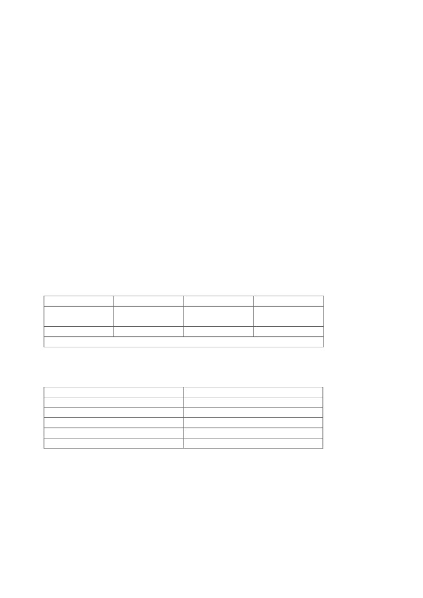
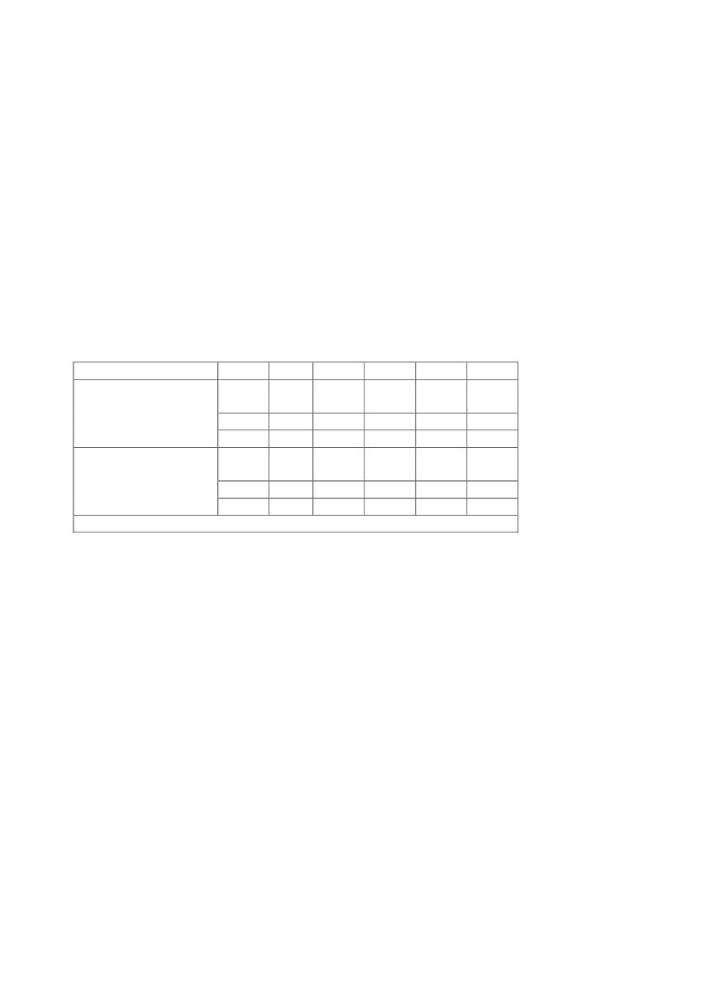
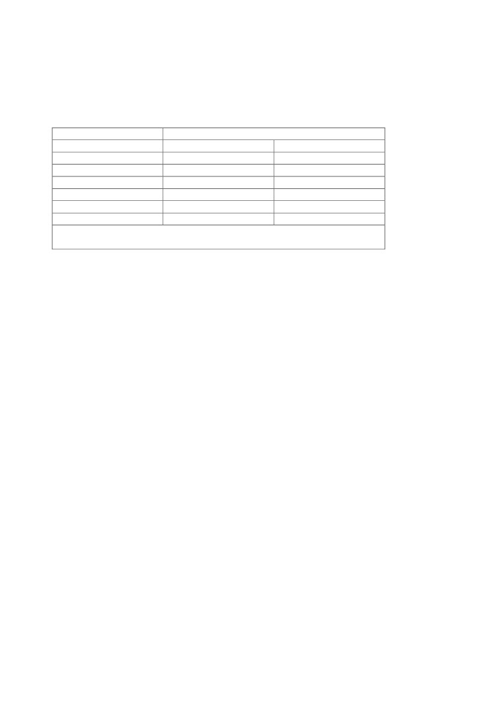
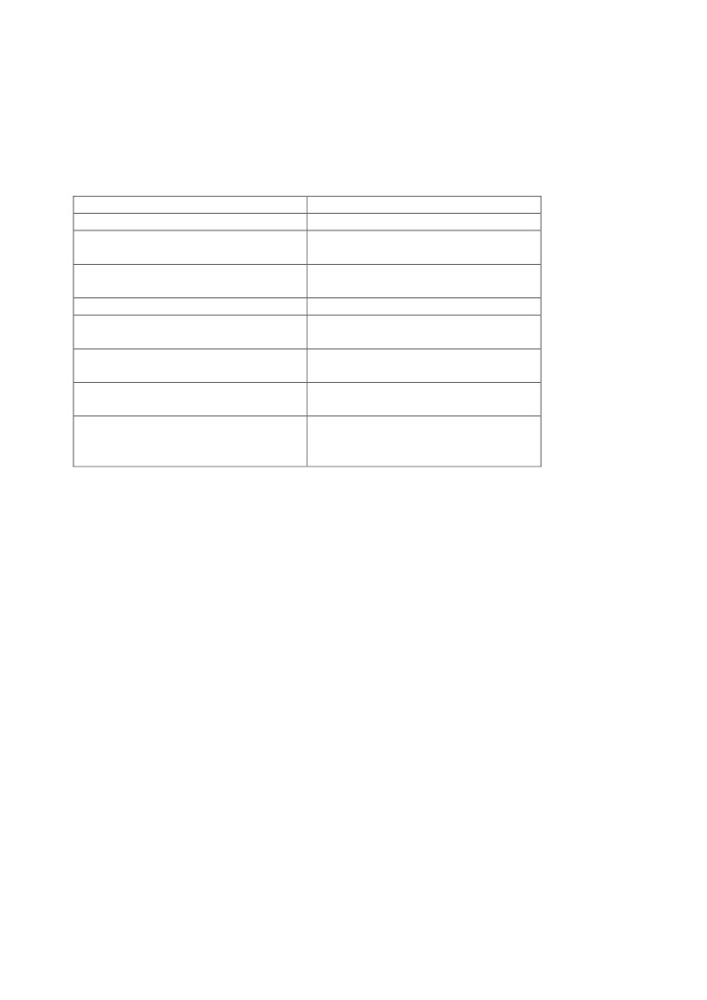
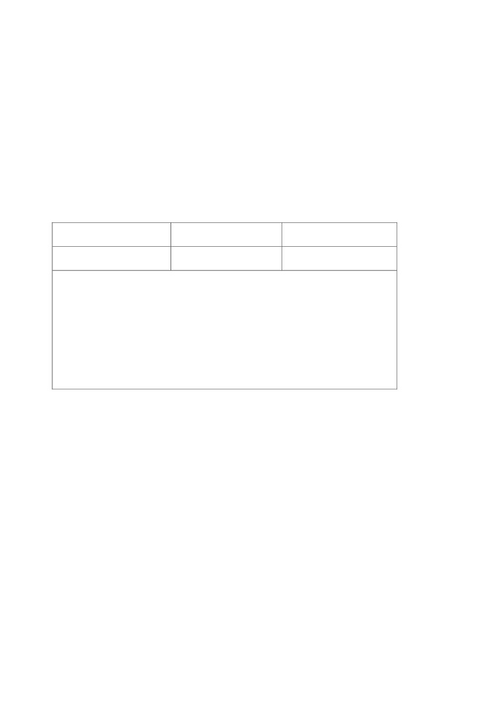
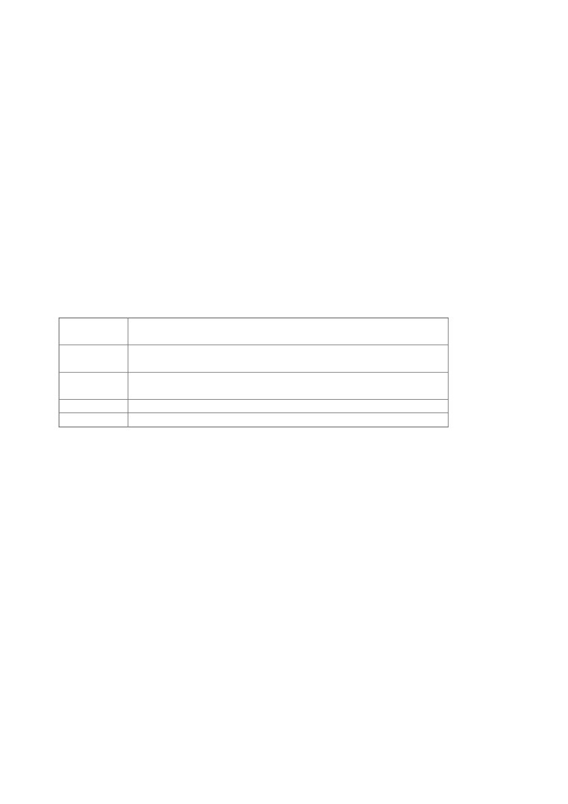

БЕЛОРУССКИЙ ГОСУДАРСТВЕННЫЙ УНИВЕРСИТЕТ
ФАКУЛЬТЕТ МЕЖДУНАРОДНЫХ ОТНОШЕНИЙ
КАФЕДРА АНГЛИЙСКОГО ЯЗЫКА
ЭКОНОМИЧЕСКИХ СПЕЦИАЛЬНОСТЕЙ
С.А. Дубинко, Л.Г. Андреева, Е.Н. Поташкина,
Н.П. Звонак
English in Business Communication
(for students of Economics)
Английский язык в деловом общении (для студентов
экономических специальностей)
Минск
2008
ПРЕДИСЛОВИЕ
Учебное пособие подготовлено в соответствии с учебной программой
курса «Английский язык для III-V курсов отделений экономических
специальностей» и
«Английский язык в сфере делового общения
студентов экономических специальностей». Цель пособия - дальнейшее
развитие навыков устной речи, чтения и письма на основе текстов
профессионально-ориентированной
направленности.
Тексты
заимствованы
из новейших периодических изданий и изданий
справочной литературы и отражают современные тенденции в области
экономики и международных экономических отношений.
Пособие охватывает основную тематику курса по таким аспектам
преподавания языка, как практика устной речи, английский язык в сфере
делового общения, грамматика, чтение, реферирование и аннотирование
текстов экономического характера.
Учебное пособие включает теоретический материал на английском
языке, дающий сведения по корректному поведению в сфере делового
общения. Практический материал включает упражнения творческого
характера, которые предполагают использование проектных технологий
на занятиях, подготовку презентаций, участие в переговорах и других
деловых встречах, а также вопросы для самоконтроля по обсуждаемым
проблемам курса. Раздел грамматики ставит целью повторение наиболее
сложных для студентов разделов грамматики на основе примеров из
текстов экономической прозы, а также дальнейшее развитие лексических
и грамматических навыков.
Предлагаемые тексты экономического характера направлены на
обучение различным видам чтения, навыкам перевода, реферирования и
аннотирования текстов специального характера, а также расширение и
закрепление у студентов словарного запаса в сфере общения на
профессиональные и общенаучные темы.
Информативность и актуальность используемого материала, широкий
круг обсуждаемых вопросов и выход в различные виды речевой
деятельности позволяет использовать данное учебное пособие как на
4
аудиторных занятиях со студентами и аспирантами, так и в подготовке и
организации контролируемой самостоятельной работы.
Материал пособия апробирован на отделениях экономических
специальностей факультета международных отношений БГУ.
Авторы разделов: I, II - С. А. Дубинко, III - Л. Г. Андреева, IV - Е. Н.
Поташкина, V - Н. П. Звонак.
5
CHAPTER I
EUROPEAN INTEGRATION
_____________________________________________________________
LEARNING OUTCOMES
By the end of this chapter, you should understand:
• The EU Single Market
• Why many EU countries formed a monetary union
• Macroeconomics in the eurozone
• UK reluctance to join
• Progress of transition in Central and Eastern Europe
The European economy of the new millennium is very different from the
Europe of 30 years ago. Some developments were political, but many were
economic.
This chapter is about three things. First, the Single European Act of 1986
committed members of the EC to a single market in goods, services, assets,
and people by 1992. Did it work? Second, Economic and Monetary Union
(EMU) began in January 1999. Why did EMU happen, how does it work, and
what difference will it make? Third, how is transition progressing in Central
and Eastern Europe?
1. The Single Market
The European Community was founded by six countries in 1957. It was a
free area, with some EC-wide programmes financed by
(small) fiscal
contributions from member states. Its largest programmes were the Common
Agricultural Policy
(CAP), a system of administered high prices for
agricultural commodities that created excess supply and led to wine lakes and
butter mountains; and the Structural Funds, providing subsidies for social
infrastructure, especially in poorer areas of the EC.
6
Over the next 40 years, the EC was enlarged. The original six - West
Germany, France, Italy, The Netherlands, Belgium, and Luxembourg - were
joined by Denmark, Ireland and the UK in the 1970s, by Spain, Portugal and
Greece in the 1980-s, and by Austria, Finland and Sweden in the 1990s. The
European Community (EC) then became the European Union (EU). Further
enlargement started admitting countries from Central Europe, the Baltics and
the Balkans.
EU enlargement was not initially accompanied by any change in its
fundamental structure. Member states still set national policies. Closer
integration, for example the harmonization of industrial standards or national
tax rates, was usually thwarted for two reasons. First, since each country did
things differently, it was hard to find a single set of regulations for all member
states. Second, it was political dynamite. No country wanted to adopt the
policies of others.
The mid-1980s saw a breakthrough. Instead of trying to agree a single
set of detailed rules, member states agreed some broad outlines for
harmonizing policy. Each country then decided how to implement them. And
each country recognized the validity of the regulations imposed by other
member states.
For example, each country has regulations determining which
institutions may be registered as a bank or an insurance company, and what
conditions they must fulfil. Previously, a bank registered in the UK under UK
law did not comply with standards laid down for banks in France, Germany, or
Italy. Banks in one country could not compete in other countries. National
markets were segmented. Since there are economies of scale in banking, each
small national market had only a few high-coast banks enjoying significant
market power.
Instead, member states agreed on some general principles governing the
regulation of banks - minimum standards for capital adequacy (the amount of
financial backing needed to undertake particular types of risky business), for
external monitoring (to check up that managers are doing their job properly),
and so on. Then each government decided how to apply these general criteria
and to license banks in its country. Finally, and crucially, a bank registered in
Germany under German law was allowed to operate throughout the EU.
This approach had two advantages. First, it was politically acceptable.
Individual governments no longer looked like they were giving up all national
7
control. Second, it took advantage of competition. Different countries adopted
different ways of implementing general principles, and then the market
decided.
Countries adopting good regulatory structures found their firms getting
a bigger share of EU trade. Countries with poor systems (business hates
anarchy, legal ambiguity, and possible fraud) lost business. Thus, competition
between forms of regulation took place.
The new approach broke the logjam. The EC ratified the Single
European Act, setting 1992 as the deadline to complete the internal EU market
by harmonizing regulations. Among its main objectives were: (a) abolition of
remaining controls on capital flows; (b) removal of all non-tariff barriers to
trade in the EU (different trademarks, patent laws, and safety standards); (c)
ending the bias in public-sector purchasing to favour domestic producers; (d)
removal of frontier controls (delays); and (e) progress in harmonizing tax
rates.
A single market is not segmented by national regulations, taxes, or
informal practices
2. Benefits of the Single Market
Table 1 shows that the completion of the Single Market created an
economic area larger than the US or Japan. The potential gains for member
states fall into three categories: more efficient resource allocation, more scale
economies, and more competition.
Non-tariff barriers are different national regulations or practices that
prevent free movement of goods, services, and factors across countries.
By removing non-tariff barriers, the Single Market aimed to allow
countries to exploit their comparative advantage more fully.
A second inefficiency in small and segmented national markets is that
firms cannot fully exploit economies of scale. As barriers came down, firms
got larger and costs fell. Two-way trade in the same industry increased, not
just in goods but in services such as banking.
Third, the Single Market intensified competition in two ways. First,
competition between forms of regulation led on average to lower levels of
regulation. For many continental countries, the Single Market led to
substantial deregulation from initial levels that had been very high. Second, a
8

larger market enabled large firms to enjoy scale economies without the high
market share and potential monopoly power that this would have meant in
small, segmented economies.
Quantifying the gains
How large were the gains in practice? Table 2 shows estimates by
Professor Alasdair Smith (now Vice Chancellor of Sussex University) and two
colleagues. The gain is measured as the pure extra consumption resulting from
permanent supply-side improvements that raised potential output. Answers
depend on the assumptions of the analysis. For example, it is unclear whether
we should assume a truly single market has yet been achieved. The range of
estimates reflects different possible assumptions.
Small countries gained more than large countries, but gains also
reflected the pattern trade. The largest gains came as the most protected
activities were opened up. Not only was the Single Market good for the EU, it
turned out to boost trade with the outside world. Fears of fortress Europe were
unfounded.
Table 1
The size of the single market,
2000
EU
USA
Japan
Population
376
282
127
(million)
GDP ($ billion)
8350
9650
4340
Source: World Bank, World Development Report
Table 2
Gains from the Single Market (extra
consumption)
Range of estimates (% of GDP)
Countries
2- 3
France, Germany, Italy, UK
2- 5
Denmark
3-4
The Netherlands, Spain
4- 5
Belgium, Luxembourg
4- 10
Ireland
9
5- 16
Greece
19-20
Portugal
Source: C. Allen, M. Gasiorek, A. Smith, «The competition effects of the
single market in Europe», Economic Policy, 1998.
These estimates allow for once-off adjustment to the level of potential
output but not for any permanent effects on growth itself. Professor Richard
Baldwin of Geneva University has argued that higher potential output may
enable more saving, more investment, and yet more output, which could
increase the estimate of Table 2 even further.
3. From EMS to EMU
By 1988, capital controls were largely gone as part of the Single Market
reforms. It was only a matter of time before speculators attacked the pegged
exchange rates of the ERM. One solution was to go forward rapidly to
completely fixed exchange rates.
A monetary union has permanently fixed exchange rates within the union,
an integrated financial market, and a single central bank setting the single
interest rate for the union.
A monetary union need not have a single currency. English and Scottish
currencies circulate side by side in Edinburgh. What matters is that the
exchange rate is certain and that a single authority (the Bank of England) sets
the interest rate for both.
In 1998, the European heads of state established the Delors Committee
to recommend how to get to European monetary union. Interestingly, the
Committee was not asked to discuss whether EMU was a good idea. Small,
highly integrated European economies needed to avoid large exchange rate
fluctuations. With capital controls gone, there was no guarantee that the ERM
could deliver. In any case, since ERM members had already given up
monetary sovereignty by letting Germany set the single interest rate in the
ERM, formal ratification of a monetary union did not seem such a big step.
The Delors Committee recommendations became the basis of the Treaty
of Maastricht in 1991. Monetary union was to be achieved in three stages. In
Stage 1, which began in 1990, any remaining capital controls were abolished,
and the UK was encouraged to join the ERM (it joined in 1990). Realignments
10
were possible but discouraged. In Stage 2, which began in January 1994, a
new European Monetary Institute prepared the ground for EMU, realignments
were possible but discouraged. In Stage 2, which began in January 1994, a
new European Monetary Institute prepared the ground for EMU, realignments
were even harder to obtain, and excessive budget deficits were to be
discouraged but not outlawed.
Stage 3, in which exchange rates were irreversibly fixed and the single
monetary policy began, was to start in 1997 if a majority of potential entrants
fulfilled the «Maastricht criteria» (in the event they did not). Otherwise, EMU
was to begin in January 1999 with whatever number of countries then met the
criteria. Monetary policy in EMU was to be set by an independent central
bank, mandated to achieve price stability as its principal goal.
What were the Maastricht criteria and what was their purpose? There
were two sets of criteria, one for monetary policy and nominal variables, one
for fiscal policy.
The Maastricht criteria for joining EMU said that a country must already
have achieved low inflation and sound fiscal policy.
The monetary criteria said that to be eligible, a potential entrant had to
have low inflation, nominal interest rates
(market confirmation of low
inflation expectations), and two prior years in the ERM without any
devaluation. This last requirement was to prevent competitive devaluations or
‘last realignments’ as EMU approached.
The fiscal criteria said budget deficits must not be excessive, interpreted
to mean that budget deficits should be less than 3 per cent of GDP; and that
the debt/GDP ratio should not be over 60 per cent. Tight fiscal policy would
mean there was little pressure on the central bank to print money to bail out
fiscal authorities.
Many economists complained that the Maastricht criteria were caution
taken to extremes. An independent central bank with a tough constitution was
an adequate commitment to low inflation. It was unnecessary to constrain
fiscal policy as well. Indeed, since national governments would no longer have
a national interest rate or national exchange rate policy to deal with purely
national circumstances, leaving them fiscal room for manoeuvre might be a
good idea.
The Maastricht deal reflected the balance of power in the negotiations.
At the time, Germany ran the EMS and trusted itself to do so in own interests.
11
Why would Germany give up such a good position? Only if EMU was going
to be super safe. The Maastricht criteria were the price of getting Germany on
board.
4. Sterling and UK membership
Why has the UK been reluctant to join both the ERM and EMU? First,
until the late 1980s, North Sea oil made sterling behave differently from other
European currencies. As UK oil production slowed down, this objection
evaporated.
Second, whereas the core countries of Europe are now very integrated
with one another, offshore UK is less integrated with the rest of Europe. A
common policy may be less suitable. Table 3 shows the composition of UK
trade and how it has changed since the UK joined the EU in 1973. The trend is
clear. The UK is getting more integrated with continental Europe all the time,
even if from a lower baseline than some other European countries. If this trend
continues, the issue is not whether the UK should join but when.
Third, the UK has greater macroeconomic sovereignty: it seems to have
more to lose. Whereas ERM countries had already allowed the ‘single’ interest
rate to be set by Germany alone, sterling floated during the entire period
except for the two years of its ERM membership in 1990-1992.
However, the absence of capital controls and the power of the
speculators limit monetary sovereignty whatever the exchange rate regime.
The Bank of England has often wished to raise interest rates for domestic
reasons, to cool down a housing boom, but been unprepared to do so because
higher interest rates would bid up further the value of the floating pound,
exacerbating the woes of UK exporters. The Bank has often found itself
hoping for interest rate rises in Frankfurt and Washington that would allow it
to raise sterling interest rates without causing a further appreciation of sterling.
Table 3
UK trade patterns (%)
EU
N. America
Rest of world
1972
34
17
49
2000
57
15
28
12
Source: UN, International Trade Statistics
Finally, Black Wednesday (16 September 1992) made it hard for UK
politicians to enthuse about EMU. Former Chancellor John Major took the UK
into the ERM in 1990 to combat rising inflation at the end of the Lawson
boom. Unfortunately, this coincided with German reunification. Big subsidies
to East Germany caused German overheating. When Chancellor Kohl refused
to raise taxes, the Bundesbank raised interest rates to cool down the German
economy. Interest rates high enough to do this job were far too high for
Germany’s partners in the ERM. This provoked the crisis of 1992-93. The UK
and Italy left the ERM, slashed interest rates, and depreciated their currencies.
Other countries struggled on inside the ERM though many had devaluations
(see Table 4).
German reunification was the biggest country-specific economic shock
in postwar Europe. It may not be a good guide to how EMU will fare. Indeed,
the mandate of the European Central Bank to take an EU-wide view prevents
it reacting in such extreme fashion to the needs of one country. But UK voters
remember the UK flirtation with a single European interest rate as an unhappy
experience.
During 1996-98 EU countries scrambled frantically to get their budget
deficits below the 3 per cent Maastricht limit to be eligible for EMU. There
was fiscal tightening in continental Europe. Since the UK was enjoying the
effects of looser policy after 1992 - the whole point of leaving the ERM had
been to reduce interest rates and stimulate the economy - the UK business
cycle got out of phase with the rest of Europe.
This had little to do with any structural difference. It simply reflected
the fact that while the UK had its foot on the accelerator its EU partners still
had the brakes on tight. By the end of the decade, the UK had to start worrying
about overheating at a time when the rest of the EU was finally coming out of
its policy-induced recession and looking forward to a period of steady growth.
The common shock caused by US recession and the terrorist attacks in 2001
may now help to bring the UK cycle into closer alignment with that in the
eurozone.
Eleven countries (all those wishing to go ahead) were deemed in spring
of 1998 to be fit and ready for EMU at the start of 1999. Table 4 contrasts the
healthy UK performance during the late 1990s with the recession that EMU
13

countries endured while they tightened fiscal policy to meet the Maastricht
criteria. However, these differences were policy induced, and no guide to
future differences.
With looser fiscal policy, but as strong a commitment to low inflation,
the UK inevitably had higher interest rates than its EU partners. Even if the
UK wanted to join EMU, it would require tighter fiscal policy to make EMU
interest rates appropriate for the UK. Announcing a ‘tax for Europe’ would
have been political suicide in the UK, even though the Treasury did manage to
raise tax revenue quite substantially by a host of less visible measures.
Table 4
Business cycles - UK and
Euroland
96
97
98
99
00
01
Euroland
Real growth
1
2
3
3
3
2
Output gap
-3
-2
-2
-1
0
0
Interest rate
5
4
4
3
4
4
UK
Real growth
3
4
3
2
3
2
Output gap
-1
0
0
0
1
0
Interest rate
6
7
7
5
6
5
Source: OECD, Economic Outlook
5. The economics of EMU
In 1999, Professor Robert Mundell won the Nobel prize for Economics, in
part for his pioneering work on optimal currency areas.
An optimal currency area is a group of countries better off with a
common currency than keeping separate national currencies.
Mundell, and the economists who came after him, identified three
attributes that might make countries suitable for a currency area. First,
countries that trade a lot with each other may have little ability to affect their
equilibrium real exchange rate against their partners in the long run; but they
may face temptations to devalue to gain a temporary advantage. A fixed
14
exchange rate rules out such behaviour and allows gains from trade to be
enjoyed.
Second, the more similar the economic and industrial structure of
potential partners, the more likely it is they face common shocks, which can
be dealt with by a common monetary policy. It is country-specific shocks that
pose difficulties for a single monetary policy.
Third, the more flexible are the labour markets within the currency area,
the more easily any necessary changes in competitiveness and real exchange
rates can be accomplished by (different) changes in the price level in different
member countries.
Conversely, countries gain most by keeping their monetary sovereignty
when they are not that integrated with potential partners, have a different
structure, and hence are likely to face different shocks, and cannot rely on
domestic wage and price flexibility as a substitute for exchange rate changes.
To these purely economic arguments, we should add an important
political argument. Currency areas are more likely to work when countries
within the area are prepared to make at least some fiscal transfers to partner
countries. In practice, this cultural and political identity may be at least as
important as any narrow economic criteria for success.
Is Europe an optimal currency area?
Those who have studied the structure of national economies, and the
correlation of shocks across countries, generally reach the following
conclusions. First, Europe is quite, but not very, integrated. Second, there is a
clear inner core of countries - the usual suspects - more closely integrated
than the rest.
However, the act of joining EMU is likely to change the degree of
integration, possibly quite substantially. A common currency, by eliminating a
source of segmentation into national markets, will increase integration.
Moreover, there is evidence that countries that trade a lot have more correlated
business cycles. And countries that belong to currency unions tend historically
to trade much more with each other than can be explained simply by the fact
that their exchange rates are fixed.
15
These bits of evidence imply that it may be possible to start a currency
union before the microeconomic pre-conditions are fully in place. The act of
starting speeds up the process.
The Stability Pact
The Stability Pact, ratified by the Treaty of Amsterdam in 1997, confirmed
that the Maastricht fiscal criteria would not merely be entry conditions for
EMU but would continue to apply after countries joined the monetary union.
Some EMU members have debt/GDP ratios of close to 100 per cent. Reducing
these towards 60 per cent may take decades. The focus has been on the 3 per
cent ceiling for budget deficits. In principle, countries exceeding the limit may
have to pay fines unless their economy is in evident recession. Thus countries
have to wait for output to fall before they are allowed to expand fiscal policy
by having deficits above the ceiling of 3 per cent of GDP.
The pact does not preclude countries from using fiscal policies more
vigorously. But to do so, they need to aim for something more like budget
balance in normal times. Then they still have room to increase deficits in times
of trouble without exceeding the 3 per cent ceiling.
Note that if budgets are roughly in balance over the business cycle, but
output grows for ever, debt/DGP ratios should exhibit trend decline, whatever
their cyclical behaviour. This may eventually lead to the tough conditions of
the Stability Pact being eased.
The European Central Bank
The single monetary policy is now set in Frankfurt by the European
Central Bank (ECB). National central banks have not been abolished, but the
board of the ECB sets the interest rate on the euro.
The ECB mandate says its first duty is to ensure price stability, but it
can take other aims into account provided price stability is not in doubt. In
press conferences, officials of the ECB have emphasized that their interest rate
decisions should be interpreted largely as the pursuit of price stability. Neither
the financial markets nor academic economists are entirely convinced. ECB
16
behaviour looks as if it pays some attention to output gaps as well as inflation:
empirically, a Taylor rule explains its behaviour quite well.
Controversially, the ECB has adopted not one but two intermediate
targets, the so-called ‘twin pillars’ of its monetary strategy. The first pillar is a
monetary target, the growth rate of the M3 measure of nominal money. The
second pillar is expected inflation. The ECB insists that it takes both pillars
into account in setting interest rates in the euro area.
Far from raising interest rates when money growth is too high, the ECB
has raised interest rates when money growth is low, but reduced interest rates
when money growth is high. The reason is straightforward. Money demand
fluctuates, and money supply growth not a reliable guide to future inflation.
For example, after the terrorist attacks of 11 September 2001 people
sold stocks and shares and put money into bank accounts. These accounts
were part of the M3 measure of money. The sharp rise in the money stock
reflected a rise in money demand. Money supply could safely be allowed to
increase since people wanted to hold the extra money, not spend it. In fact, the
fall in aggregate demand for goods after 11 September meant that all central
banks sensibly cut interest rates to boost aggregate demand.
It is precisely such swings in money demand that have made most
central banks abandon monetary targeting in favour of flexible inflation
targets or Taylor rules. The ECB continues to insist that monetary targets have
an important role because it wants to emphasize continuity with the
Bundesbank, which used monetary targets. However, as the ECB establishes it
own track record, the need for links to past Bundesbank behaviour becomes
less important. If the ECB is to avoid looking stupid, it may have to abandon
the monetary pillar.
Fiscal federalism?
One reason for the survival of the monetary union that we call the US is
its federal fiscal structure. When a particular state has as slump, it pays less
income tax revenue to Washington, and gets more social security money from
Washington, without any decisions having to be taken. Automatic stabilizers
are at work, courtesy of federal tax rates and federal rates of social security
payments. Conversely, a booming state pays more tax revenue to Washington,
and gets less social security money back.
17
A federal fiscal system has a central government setting taxes and
expenditure rules that apply in its constituent states or countries.
When state income rises $1, the state pays an extra 30 cents in income
tax and gets 10 cents less in social security. Conversely, when state income
falls $1, the state pays 30 cents less in federal taxes and gets an extra 10 cents
in social security. Originally, economists thought that this meant each state
was effectively insured up to about 40 cents in the dollar. The euro area has no
federal fiscal structure on anything like this scale. The pessimists concluded
that EMU would come under pressure from country-specific shocks.
The idea was correct but the sums were wrong. The original US
calculations are relevant to a world in which state incomes are uncorrelated
with each other. In practice, the correlation is quite high. Hence, when one
state slumps and gets help from Washington, many other states are slumping
and also getting help. But this increases US government debt and means every
state has to pay higher future taxes.
But an individual state could have done that on its own, without
membership of the federal «mutual insurance» club. It could have borrowed in
the slump to boost its own fiscal spending, and paid it back later when times
were better. Making allowance for this, US states are probably insured more
like 10 cents in the dollar than 40 cents.
However, the Stability Pact may prevent individual EMU countries
behaving in this way, by restricting their ability to borrow in bad times. Or
else the Stability Pact may be interpreted more flexibly, having greater regard
for the effect of temporary cycles in temporarily reducing tax revenue. When
Germany’s budget deficit rose at the start of 2002, taking it close to the 3 per
cent ceiling, EU leaders agreed not to give Germany a yellow card warming it
that fiscal tightening was now imperative.
6. Central and Eastern Europe
For 40 years after 1945, Central and Eastern Europe (CEE) was under
rigid political and economic control of a planned economy with only a small
role for market forces. The inefficiency of planning cumulated as any market
history receded. Capital was old, incentives were poor, and productivity was
low.
18
Table 5 confirms two points about CEE on the eve of reform. It shows
the low level of living standards compared with most Western neighbours. In
affluent Northern Europe, per capita incomes in 1988-89 averaged about $20
000 a year. Many CEE countries had living standards around a quarter of this
level. Table 5 also shows the failure of attempts in the 1970s to prop up
planning by borrowing from the West to rebuild capital in the East. Countries
such as Hungary and Poland were left with the debts but few corresponding
assets: inefficiencies in planning often left investment projects unfinished and
hence wasted.
Some countries, such as Poland, subsequently had part of these past
debts written off by Western creditors. And the European Bank for
Reconstruction and Development was set up in London to finance investment
by the West in projects in the reforming economies.
Supply-side reforms
Transition economies are making the adjustment from central
planning to a market economy.
In the past, production, investment, and employment decisions were
made largely by planners. A larger scale of operation meant greater prestige,
even if it used more inputs than it produced outputs. Supply-side reform meant
allowing the price mechanism to take over the role of allocating resources.
This had several aspects.
First, prices needed to reflect true scarcity. Previously, prices were held
artificially low. This made inflation look good, but such data were
meaningless. Consumers could not get goods, and factories could not buy
inputs at these artificial prices. There was chronic excess demand.
Success did not depend merely on freeing up prices. A supply response
to higher prices had to take place. Incentives had to work. Bureaucrats who
ran state enterprises were to work. Bureaucrats who ran state enterprises were
not always the best people to rise to this challenge. Many enterprises have
since been privatized. The aim of privatization was less the need to raise
revenue for the government - consumers had little wealth with which to pay -
than to put the profit motive up front for those managing the new enterprises.
19

Table 5
CEE in 1988-1989
Per capita $ of
CGP
Foreign debt
East Germany
9300
1300
Czechoslovakia
7600
400
Hungary
6500
1900
Bulgaria
5600
1000
Poland
5600
1100
Romania
4100
0
Sources: American Express, Amex Bank Review, November 1989, HM
Treasury, Economic Progress Report, 1990.
Several strategies of privatization were tried. Hungary tried to find
foreign buyers willing to contribute hard cash and management expertise. The
Czech Republic gave citizens vouchers with which to bid for shares in firms
being privatized. Although appearing to achieve rapid privatization, many of
these shares were then sold back to state-owned banks. In Russia, the
emphasis on privatization to existing managers led to accusations that
organized crime had become too involved.
Trade and foreign investment
CEE needed markets for its output if it was to grow quickly. The
pressure of external competition was a powerful force for rapid productivity
improvement, even if it meant unemployment in the short run while painful
adjustment took place.
The EU was the obvious market for CEE goods. Most CEE countries
have now signed Europe Agreements for the associate membership of the EU.
These agreements promised rapid moves to free trade in many commodities,
but not in the ones that really mattered. Declining or problem industries in the
West were deemed too sensitive to be subject to competition from cheap
imports from CEE. This applied to textiles, steel, and, of course, agriculture -
three of the most obvious areas for CEE exports westwards.
EU policy was excessively protectionist. Accepting imports from CEE
has three big benefits for the EU. First, EU consumers get cheap imports.
20
Second, there is the consequent creation of economic growth in CEE as a
natural export market for EU producers. Together, these two reasons are the
classic case for exploiting comparative advantage. Third, if the experiment in
CEE fails, the EU will face either massive immigration or a renewed political
and military threat on its doorstep, probably both. Liberal trade agreements are
the most effective investment the EU can make in Eastern Europe’s success.
The CEE has an educated workforce. Besides market access, what it
needs is physical investment and the management expertise to run market-
oriented businesses. Here too the West can help, and in some cases has done
so with success. For example, western investment in car plants in CEE has
been extensive. Under VW ownership, Skoda has gone from ugly duckling to
preening swan.
Macroeconomic conditions for success
Transition is about supply-side reform to improve potential output, but
macroeconomic policy must not get in the way. Prudent monetary and fiscal
policies are needed to bring inflation under control. Early in transition,
inflation is high for two reasons. First, as prices are unfrozen, they surge to
their equilibrium level.
Second, needing resources to invest in transition but with low potential
output and hence a low tax base, it is sensible to use the inflation tax as a
source of government revenue. Otherwise, needed investment has to be
abandoned or else other taxes have to be so high that their distortion effects
are large.
As transition succeeds, potential output rises, and given tax rates raise
more revenue. Investment also begins to encounter diminishing returns. For
both reasons, the optimal inflation rate should fall. However, politicians still
face many pressures to spend money and avoid taxation. Well designed
institutions help politicians to do the right thing.
Thus central bank independence has been as important in transition
economies as in advanced economies. It helps ensure a responsible monetary
policy. Earlier in the chapter, we noted that an independent ECB was
insufficient to induce Germany to abandon the ERM for EMU. The Maastricht
criteria and the Stability Pact also restrict the size of fiscal deficits, so that the
21
central bank, even if independent, does not come under pressure to print
money.
If this was true for mature Western Europe, it is even more likely to
apply in transition. Monetary responsibility must be underpinned by pressure
to avoid large fiscal deficits. Initially, this pressure was applied by the IMF. If
countries wanted access to loans from the IMF, they had to agree and
implement targets for fiscal deficits.
If planning was so bad, why did things get worse?
The reforming economies faced falls of at least 25 per cent in measured
real GDP during 1990-92 before growth resumed in 1993 or 1994. How can
we explain this?
First, the statistics may be misleading. Before prices were freed, how
should real GDP be measured? If prices did not reflect scarcity, why value
quantities at silly prices? One solution to this is to use world prices: simply
measure quantities and then use dollar or DM prices. Economists who have
done this find that some of the old industries were producing with negative
value added: they used more inputs than they produced output. Properly
measured, output fell less than it first appears.
Second, early macroeconomic restraint was important to stop once-off
price rises becoming embedded in permanent inflation expectations. For
example, after price liberalization in Czechoslovakia, prices rose 25 per cent
in January 1991; by July 1991, monthly inflation was down to zero.
Third, as the former Soviet Union imploded, most countries in CEE lost
their major export market. Reorientation of exports to the West was not easily
accomplished overnight. Even in Western Europe, Finland faced a severe
recession as Russian markets collapsed.
Fourth, the key role of banks must be understood. Freeing prices does
not introduce a market economy unless budget constraints bite. In the West,
useless firms go bankrupt and physical resources get allocated elsewhere. In
Eastern Europe, state banks had previously been passive in lending. They
made loans to allow state-owned enterprises
(SOEs) to meet output and
investment targets laid down by the planners.
When prices were liberalized, many SOEs quickly lost money (as they
should have). But nobody closed them down! State banks simply lent them
22
new money to meet old debts and finance ongoing losses. When a giant SOE
was the only employer in town, it was ‘too big to fail’. Banks behaved in this
way partly because they too were state-owned and still felt a responsibility to
employment, but also because most of their assets - old loans to SOEs - were
themselves worthless. Making a fuss might have revealed the extent of the
trouble in the banks.
Governments, wisely, began tackling bad debts in the banks, and made
banks early candidates for privatization. Without banks to enforce bankruptcy
(in the West it is creditors who close down companies), we cannot expect
prices to allocate resources more efficiently. Inefficient old firms continue,
and new entrepreneurs find it hard to get loans.
Finally, there was a major failure of corporate control. Even the West
has trouble providing good incentives for managers. In reforming economies
the problem was acute. The watchful eye of the state was removed from SOEs
as governments tried to dissociate themselves from the old ways of planning.
Until SOEs were privatized and monitored by informed shareholders, there
was a vacuum of control. Managers could do what they liked. What they liked
was an easy life or worse. Many countries faced outbreaks of ‘spontaneous
privatization’ or as it is called theft. The transition experience reminds us that
adoption of markets, while perhaps necessary, is not sufficient to enjoy high
living standards. Well-functioning markets, like icebergs, have a lot below the
waterline: invisible but important. They have legal contracts whose impartial
enforcement in courts of law has a track record that inspires confidence and
trust. They have regulations mitigating market power, administered by public
officials without endemic corruption. They have tax collection agencies that
are fair, and an attitude of tax compliance among citizens that keeps tax
evasion within tolerable bounds. They have sophisticated systems of social
insurance and protection designed to prevent the emergence of an underclass
that loses hope then takes revenge.
The list could be longer. Merely setting it out shows that many of its
key items require expensive infrastructure and necessarily take time in which
to build trust and reputation. This had two implications. First, transition takes
time to succeed, especially where the social fabric is under threat. Second,
establishing markets is not done on the cheap. Essential market infrastructure
must be installed.
23
Many economies, especially those in Central Europe closest to EU
markets, are now growing steadily. Our discussion of convergence and catch-
up suggests that these economies may grow more rapidly than Western Europe
over the next decade.
24
EU enlargement
What transition economies in Central and Eastern Europe want is
membership of the EU itself, which would allow full access to a huge market.
This in turn becomes a magnet for inward investment, seeking to take
advantage of low local wages but secure output markets. The EU is now
committed to accepting most European transition economies within the next
few years.
Having almost all the power in the negotiations, the EU will dictate the
timetable of EU enlargement. Initially, new entrants will become members of
the Single Market. Tariffs and non-tariff barriers will disappear.
Hence, from the EU viewpoint, accession countries are ‘ready’ when
they can safely be allowed into the Single Market. Principally, this means that
the EU will trust regulations in accession countries, that accession countries
can cope with competition within the Single Market, and that reasonable
macroeconomic stability has been established.
On entry to the EU, accession countries will be expected to join ERM2,
an exchange rate mechanism with fixed but adjustable parities between each
accession country and the euro. There will be the usual bands around these
parities. Accession countries will stay in ERM2 until they meet the Maastricht
criteria. Then they will be allowed to adopt the euro.
Thus, different countries may join the EU at different dates, and may
also remain within ERM2 for different times until ready to join the euro. The
Maastricht criteria require that low inflation has been seen to be achieved, that
fiscal deficits are not excessive, and that no devaluation takes place in the two
years before the euro is adopted. Thus two years is the minimum period of
ERM2 membership.
Would euroization be better?
Most European transition economies have only one end point in mind:
full EU membership and adoption of the euro. Once transition has proceeded
to the point at which they are accepted as suitable entrants to the EU, would it
not be better if they adopted the euro immediately, thereby escaping
uncertainties and possible speculative attacks during their membership of
ERM2?
25
Many economists think that for any particular transition economy,
adopting the euro on EU accession would indeed be a better policy. However,
the EU had explicitly ruled this out, for two reasons.
First, the EU always operates on the principle that all countries must
obey the same rules. This helps limit lobbying for special treatment. Since
existing EMU members had to join the ERM and fulfil the Maastricht criteria,
the EU wants all new members to do the same. Otherwise, it violates the
principle that all countries have to follow the same rules.
Second, although any particular accession country is small relative to
the EU, admitting a group of say 10 countries would be a significant extension
to the EU. If these countries had not fully satisfied the criteria of low inflation
and fiscal discipline, together they might disrupt macroeconomic policy for
existing members of Euroland.
For example, if the ECB pays attention only to average inflation within
Euroland, admitting many high inflation countries would raise average
inflation and force monetary policy to raise interest rates. Western Europe
would suffer a recession while the ECB helped cure inflation in Eastern
Europe. Western Europe prefers to keep accession countries out of the euro
until they have converged fully on inflation rates and fiscal discipline of
existing euro members.
Summary
• The Single European Act committed EU governments to a Single
Market by 1992. The principles were common, broad outlines for regulation;
national implementation: and mutual recognition of firms licensed by other
member states.
• For many countries this meant substantial deregulation. Together with
enlarged market size, this increased competition.
• The main winners were the small southern countries of the EU, who had
relatively cheap labour and scope for scale economies. However, even the
large, rich EU countries benefited.
• A monetary union means permanently fixed exchange rates, free
capital movements, and a single interest rate.
26
• In abolishing capital controls before
1992, the ERM had already
harmonized monetary policy, under German leadership. The UK became an
ERM member in 1990, but left in 1992.
• The Maastricht criteria say that EMU entrants, including future ones,
must have shown low inflation, low interest rates, and stable nominal
exchange rates before entry; and must have budget deficits and government
debt under control.
• EMU members must continue to obey the Stability Pact, which fines
countries for excessive budget deficits, except if they are in recession.
• In EMU, a country’s competitiveness can change through the slow
process of domestic wage and price adjustment. Without a federal fiscal
system, individual member states may want to keep control of fiscal policy to
deal with crises.
• Transition economies in Central and Eastern Europe have begun
economic reform. Supply-side reform means introducing the profit motive and
deregulation, and allowing the price system to work. Because prices had been
artificially low, initially there were sharp rises in prices. Tight macroeconomic
policy managed to stop this turning into hyperinflation, and to reduce inflation
steadily thereafter.
• Output fell sharply in CEE in 1990-1992. The Soviet market collapsed,
banks were unable to monitor and enforce credit agreements, there was little
corporate control, and vital infrastructure for a market economy was lacking.
• Most CEE countries resumed growth during 1993-1994 and may keep
growing rapidly if sensible policies are maintained.
• Most CEE countries are at advanced stages of negotiations for EU entry.
They will have to prove they can survive in the Single Market without
disrupting existing EU members. They will have to join ERM2, and will be
allowed to adopt the euro only after they fulfil the Maastricht criteria.
Review questions:
1.
«Workers have power in the labour market only because their own
firms have power in the goods market. In a perfectly competitive firm,
attempts to raise wages just drive the firm out of business.» Is this correct? If
27
1992 increased competition in product markets, what was the effect on EU
labour market?
2. Name three EU countries you think have a comparative advantage in
goods that use human capital intensively. Name three countries for which this
is not the case.
3. Two countries belong to a monetary union, and face a single interest
rate on bank deposits. However, one government has large debts and has
trouble raising taxes or cutting spending. Will government bonds in the two
countries pay the same interest rate? Will there be large capital flows between
the countries? Is this a monetary union? If not, why not?
4. The Stability Pact forces EMU members to maintain low budget
deficits. What is the rationale for this policy? Why is it needed if the European
Central Bank is independent and committed to low inflation.
5. «Transition is just a big investment project with early costs and later
benefits. Transition economies should finance the whole cost of transition by
foreign borrowing, and pay the subsequent interest once they are rich.» If
possible, would transition economies want to do this? Why might creditors not
lend this much?
6. Common fallacies Why are these statements wrong? (a) The EU was
always a free trade zone, and must always have had a single market. (b)
Monetary Union was a big loss of monetary sovereignty for ERM members.
(c) The European Central Bank must guarantee price stability but be under
democratic political control.
7. Important Concepts, Technical Terms and Initials
Exercise
1. Match each lettered concept with the appropriate
numbered
phrase
A
A monetary union
B
EMU
C
CAP
D
SOE
E
CEE
F
Optimal currency area
28
G
Maastricht Treaty
H
Non-tariff barriers
I
ERM
J
Federal fiscal system
K
ECB
L
Cross-border takeovers
1. Differences in national regulations or practices preventing free
movement of goods, services, and factors across countries.
2. The largest programme administered by the EU, involving a system of
administered high prices for agricultural commodities.
3. A system by which each member country fixed a nominal exchange
rates against each other participant, while jointly floating against the rest of
the world.
4. A system in which a group of states agrees to have permanently fixed
exchange rates within the union, an integrated financial system and a single
monetary authority responsible for setting the union’s money supply.
5. Central and Eastern Europe.
6. The joining together of members of the EU in a monetary union.
7. The authority with full responsibility for EU monetary policy.
8. A system under which fiscal transfers between states helps to cushion
individual states from the effects of temporary local recession.
9. A group of countries better off with a common currency than keeping
separate national currencies.
10. The treaty that set out the agreed route towards monetary union within
Europe.
11. A situation in which domestic firms buy into or sell out to firms based
in other countries.
12. A common feature of the former centrally-planned economies, in which
enterprises were owned by the state.
Exercise 2. Find out the right answer.
1. The creation of a single European market by 1992 entailed a number of
changes for EU members. For each of the following, state whether or not they
were part of the 1992 reforms:
29
A. The abolition of all remaining foreign exchange controls between EU
members.
B. The removal of frontier controls
(delays), subject to retention of
necessary safeguards for security, social and health reasons.
C. The harmonization of all tax rates in EU member countries.
D. The removal of all non-tariff barriers to trade within the EU.
E. The creation of an economic area without frontiers in which the free
movement of goods, persons, services, and capital is ensured.
F. Mutual recognition of regulations such that, for instance, a doctor who
qualified in England could practice medicine in any other EU country.
G. The adoption of a common currency within the EU.
Exercise 3. Find out the right answer.
1. Which of the following constitute non-tariff barriers to trade?
Differences in patent laws between countries.
Safety standards which act to segment national markets.
Voluntary export restraints - bilateral agreements whereby an exporting
country agrees to limit exports to a quota.
Taxes imposed on imported goods.
Sanitary requirements for imported meats and dairy products which are
more stringent than for domestic goods.
Quota limits on the import of particular commodities.
Packaging and labelling requirements.
Exercise 4. Find out the right answer.
1. The entry of sterling into the Exchange Rate Mechanism of the
European Monetary System was delayed until 1990. A number of reasons
were put forward for this delay, some of which are listed below. In each case.
consider the strength of the case made against entry.
Sterling was a petrocurrency because of North Sea oil, and is thus subject
to volatility because of possible fluctuations in the price of oil.
30
With London and Frankfurt being the only decontrolled financial centres
in Europe, it would be inconvenient for the UK to join the ERM, as this would
require the co-ordination of monetary policy.
A significant proportion of UK trade is conducted with countries outside
the EU.
UK inflation was being controlled independently by the policies of the
government in power, so the additional stability of the ERM was unnecessary.
Independence of domestic monetary policy is important for the UK.
The EMS was a result of muddled thinking, so it is better to bide time until
things settle down. You might like to discuss with your fellow students the
extent to which these arguments continue to apply in the context of joining the
single currency.
Exercise 5. Find out the right answer.
Which of the following is/ are characteristic of a monetary union?
A. Fixed exchange rates within the union.
B. A single currency.
C. Freedom of capital movement.
D. A single monetary authority for setting the union’s money supply.
E. A common interest rate policy.
F. A federal government.
G. A federal fiscal system.
Exercise 6. Find out the right answer.
Consider a country that is part of a monetary union that has no federal
system of fiscal transfers. Suppose that for some reason - perhaps trade union
pressure - firms in the economy face an increase in costs which is passed on
by producers in the form of higher prices. This exercise traces the path taken
by the economy as it adjusts towards equilibrium.
A. If the cost increase is restricted to firms in the domestic economy, what
is the effect on competitiveness?
31
B. Given that the exchange rate cannot adjust because of the rules of the
monetary union, what is the effect on exports?
C. What will be the consequences for output and employment?
D. By what process will the economy now return to equilibrium?
E. The Delors Report favoured the placing of ceilings on government
budget deficits so that the return to equilibrium could not be encouraged by
domestic fiscal policy. Would such expansionary fiscal action be effective,
and why should it be outlawed?
F. Explain how a system of federal fiscal transfers would alter the
sequence of events.
Exercise 7. Find out the right answer.
Identify each of the following as a cost or a benefit of 1992 or European
Monetary Union:
A. Greater efficiency in resource allocation.
B. The removal of frontier controls.
C. Loss of protection of domestic activity.
D. Loss of sovereignty over interest rates.
E. Intensified competition.
F. Enhancement of labour mobility.
G. Reduction of trade between Britain and the Commonwealth.
H. Exchange rate certainty.
I. Fuller exploitation of economies of scale.
J. Establishment of a credible pre-commitment to controlling inflation.
K. Inflexibility in adjusting to a loss of competitiveness.
L. A reduction in transaction costs.
Exercise 8. Find out the right answer.
1. For the UK,
1992 brought problems which had not been wholly
anticipated. Instead of the smooth integration into the single market and
progress towards even closer integration through monetary union, the UK was
forced to suspend its membership of the ERM, bringing the temptation to
32
retreat back to being the solitary island. Which of the following do you see as
the best way forward, and why? Which is the most likely course?
A. Give up the whole idea of joining the single currency, and go back to
flexible exchange rates, thus retaining national sovereignty.
B. Speed up the process of transition to EMU, and thus minimize
vulnerability to speculative pressure.
C. Return to the idea of sedate progression towards EMU, but introduce
policies such as the Tobin tax which would reduce the power and influence of
the short-term speculators, and thus avoid the problems such as that which led
to the UK’s exit from the ERM.
A. The rules of the economy do not permit the industry for which you are
responsible to make profits, so profit maximization cannot be your objective:
on what basis do you take decisions about the number of workers to hire and
the amount of output to be produced?
B. How do you think prices will come to be fixed?
C. If the output of your industry (e.g. steel) is used for defence goods,
industrial goods, and consumer goods, how will priorities be determined?
D. What is likely to be the state of equilibrium or disequilibrium in the
market for consumer goods?
E. Discuss the incentives for workers and management.
F. Reforms are introduced to move the economy towards a more market-
oriented system. What is the likely effect upon prices, especially in the market
for consumer goods?
G. Must inflation occur?
H. Under what conditions will the market reforms be successful?
I. By the time you get to tackle this question, market reforms in Eastern
Europe will have progressed even further. Discuss the degree of success that
has been achieved.
33
Exercise 9. Is it true or false?
1.True/False
1. The swing in thinking against big government and extensive regulation
of the economy accelerated the moves towards European integration.
2. A bank registered in Germany was, after 1992, permitted to operate in
France or the UK.
3. The 1992 reforms created a European economic area almost as large as
the United States or Japan.
4. 1992 outlawed tariffs on trade between EU members.
5. Cross-border takeovers and mergers of European firms will effectively
preserve market power and prevent gains from the intensified competition that
was intended to follow the 1992 reforms.
6. English and Scottish banknotes both circulate in Scotland, proving that
a monetary union need not have a single currency.
7. The Maastricht Treaty was an agreement by all EU member-nations to
achieve monetary union by 1997.
8. Countries gain most by keeping their monetary sovereignty when they
are not integrated with potential partners, have a different structure and hence
are likely to face different shocks, and cannot rely on domestic wage and price
flexibility as a substitute foe exchange rate controls.
9. The EU Structural Funds provide a system of federal fiscal transfers
which can help countries suffering from a temporary loss of competitiveness.
10. The Bank of England’s MPC is more transparent in its operations than
the ECB.
11. The high standards of education and health provision in the countries of
Eastern Europe put them in a better position to be able to attain large
productivity gains than many of today’s less developed countries.
12. The substantial debts incurred by Eastern European countries to Western
creditors are a substantial obstacle to further development.
34
Economics in Action
Toyota Threat To Quit UK Over Euro
The head of one of the world’s bigger car companies reignited the
debate over the single currency yesterday with a warning for the government
that its £1.5bn investment in the UK would be at risk if Britain stayed out of
the euro. Executives of Japan’s biggest car manufacturer, Toyota, which
employs thousands of workers at plants in Derbyshire and Clywd, said they
could no longer sit on the fence as Britain decides whether or not to enter
EMU. «Waiting for a decision is really hurting us and it is time to state very
clearly to the British public that we want Britain to join the single currency,»
said Shoichiro Toyoda, honorary chairman and former chief executive officer
of Toyota.
The comments are sure to increase the pressure on the government and
come days after the trade and industry secretary, Stephen Byers, admitted that
big business was telling ministers that they must make a decision on the euro
early in the next parliament. Toyota’s broadside echoes earlier calls by senior
figures from industry to sign up to the single currency. The chairman of Rover
Group, Prof. W. Samann, told reporters recently that full membership of the
euro would «consolidate BMW’s investment» in Britain. Naoyuki Akikusa,
the president of Fujitsu, went further last year. «If the UK were to join in
2002, that would be OK. But if 2020 - that would pose a big problem.»
Toyota managers said yesterday that its UK operations, including a new
£200m plant at Burnaston, Derbyshire, would be at risk if the strong pound
continued to push its British operations deep into the red. The company said
its British operation had suffered its worst performance ever last year as a
result of the sharp strengthening of sterling against the euro. This currency
fluctuation hurts the competitiveness of the 200,000 Toyota cars produced
each year in the UK, 70% of which are sold elsewhere in Europe.
The comments, which represent the clearest indication yet of Japanese
frustration with Britain’s prevarication on the euro, will send shudders through
manufacturing industry. Trade union figures show that more than 1m jobs
could be lost unless the government signs up for the single currency within 30
months.
For inward investors one of the UK’s strongest attractions has been the
combination of flexible labour markets and strong trading links with Europe -
35
up to 60% of exports - but the strength of the pound vis-a-vis the euro is
undermining the competitiveness of British-based manufacturers.
Since its opening in 1992, Toyota’s Burnaston factory has expanded
rapidly and its output almost doubled last year to 200,000 cars. The Deeside
plant in Clywd is one of the world’s largest engine plants. Together, they have
created 3.300 jobs directly, as well as four times that amount among suppliers,
in two of Britain’s employment blackspots.
Even if Toyota decides only to freeze its current scale of operations, it
would be a setback for Britain. Any hesitancy it expresses about the UK is
bound to trigger doubts among other Japanese investors.
Questions:
1. What features of the UK economy make it attractive for Japanese firms
as a location for manufacturing activity?
2. Why should membership of the single currency area be so important for
Japanese car firms?
(Adapted from Guardian, 18 January 2000)
One side of the coin
There are really two economic issues that need to be considered in
thinking about European integration. One is whether the member states of the
European Union are likely to be well served, in principle, by having the same
currency. The second is whether the particular arrangements made for
managing that currency in the Maastricht Treaty and certain later agreements
are desirable. On each issue people are to be found on both sides, and whith no
particular tendency for those who think a single currency harmful also to think
the Maastricht arrangements are undesirable, or visa-versa.
The basic point in favour of a single currency is that it reduces
transactions costs in trade and travel, and eliminates uncertainty about future
exchange rates.
These are both supply side benefits. The first releases the factors of
production involved in currency transactions for employment in a genuinely
productive activity. The second promotes the efficient allocation of
international investment.
36
The basic cost, however, is in the loss of economic policy autonomy.
This is something different from the political idea of sovereignty, which is
about the right to control one’s policy. Autonomy is about the ability to
control it. In a single currency area, there cannot be different interest rates in
different places. This is fundamentally because of the opportunity for
arbitrage. Hypothetically, if there were different interest rates in France and
Germany, borrowers in the high interest country would seek to borrow in the
low interest one, whilst lenders were doing the opposite, and the two interest
rates would converge.
What we really learn from this of course is not that it is definitely the
case that the whole European Union would benefit from a single currency, but
rather that there are both costs and benefits when we think about enlarging a
currency area. The two extreme cases are where every individual has their
own currency and where the whole world shares a single currency. The first
case would be hopeless since in effect we would be in a barter economy. The
second - a common world currency - might perhaps not be bad, but it is a fair
bet that transactions between some areas would be so slight that there would
be little benefit in reducing transactions costs between them, and yet perhaps
large costs if they are forced to adopt the same interest rate policy. The
question is then one of where one draws the line. Do we suppose that the right
sort of size for a currency area is as large as the European Union, or more like
the size of the United Kingdom?
Questions:
1. Is the UK economy sufficiently integrated with the rest of Europe to
ensure that the savings in transactions costs are substantial?
2. Do you think that the ECB will be rigorous in pursuing price stability
than the Bank of England’s MPC?
3. To what extent is the UK likely to share common patterns of economic
activity across the business cycle with the rest of Europe?
4. If you balance the benefits against the costs of membership of the single
currency, do you think that the UK should join?
37
Questions for Thought:
1. Germany has become a major force within the EU, because of the
strength of its economy. Explore the way in which this affects other members
of the EU and the build-up towards EMU.
2. Discuss the UK’s entry and exit from the ERM. Do you believe that re-
entry is in the UK’s best interests? Has it yet happened?
3. «The pressure for reform in Eastern Europe came more from discontent
with past performance than from belief in the superiority of capitalist
economies.» Do you think this overstates the situation?
4. Discuss the extent to which Euroland meets the conditions of an optimal
currency area.
8. The Courage of Our Convictions
(Tony Blair in his own words)
In September 2002, ahead of a difficult Labour Party conference, with
revolts promised on public sector reform, Blair published a Fabian Society
pamphlet containing his views. The pamphlet appeared against a backdrop of
growing criticism about the scale and pace of improvements to the health,
educaiton and transport systems, and disquiet over some aspects of the
government’s plans.
Here is the opening section of the pamphlet, which makes the case for
reforms, and seeks to explain to Labour voters and those working in the public
services, why reform is necessary.
The progressive prize
New Labour’s purpose is not simply to amend a few policies or to manage
the country efficiently. It is to set a new course for Britain in the twenty-first
century. Central to this goal is the transformation of our public services.
We reject the pessimists and the Tories who believe our public services
cannot be improved upon and increasing investment would only be pouring
money into a bottomless pit. Their option is privatised services for the better
off and cheap
«safety net» public services for the poor with dismantled
protection for those who work in them. It is a future of extremes in which the
38
divide between rich and poor grows as the middle class opts out systematically
from public provision. The goal is a smaller state with an ever decreasing
share of national income invested in public services.
It is why they spend so much time denigrating our public services,
refusing to acknowledge progress, desperate to demoralise those who use
them. What they want to do is to undermine the notion of universal public
service, paid for through taxes and based on need, not ability to pay.
We reject also the view, held by some on the left, that a Labour
govenment’s role is simply to defend existing services, not to extend choice or
accountability but simply pour in more money. They share - although they
would never admit it - the right’s pessimistic view that our public services
cannot fully meet people’s needs and aspirations. They believe - wrongly in
my view - that the best way to defend those working in the public service and
to secure their futures is to defend the status quo and veto reform. This
approach urges higher public spending to address the worst shortcomings of
current provision, but would leave arcane structures in the public sector
largely unchanged.
Radical investment and reform
New Labour, in contrast, is confident in our public services and public
servants. Our vision is rooted in strong public services that extend social
justice in a dynamic market economy through investment in the talents of
every individual, not just an elite.
We believe public services are both a ladder of opportunity and a source of
security in a global economy, helping our citizens to negotiate unpredictable
change. So we are prepared not only to inject greater investment into public
services, but to ensure they can play their full part in building a fairer society,
to reform the systems and structures of those services for the modern era.
The opportunity for the centre-left in British politics to shape the destiny
of the country has never been greater. But if the right is able to claim, through
our inability to reform these institutions or promote choice for the individual
citizen, that public services are inherently flawed, we will see support for them
wither and the clamour for private provision increase. It will mean a further
assault on the public realm and a devastating attack on our most cherished
ideals.
39
By contrast, if we are bold enough in our mission to reform we will
rehabilitate public services after two decades of neglect, and mark not merely
a new advance for progressive politics, but the extension of opportunity and
social justice in our society. This represents a great and precious moment for
Britain.
We recognise we cannot achieve this alone. To be strong incumbents
supporting the public sector while also acting as agents of change is an
inherently difficult task. It requires a government able to learn and renew as it
governs. We must improve the partnership with the people who work in our
public services and those who use them. The political and intellectual
resources to sustain a progressive government extend well beyond our own
party confines, and we need to exploit those resources more effectively.
On 4 June 1945, two days before the D-Day landings, Churchill invited
Ernie Bevin to zccompany him to Portsmouth to say farewell to some of the
troops. «They were going off to face this terrific battle», Bevin recounted,
«with great hearts and great courage. The one question they put to me as I
went through their ranks was: «Ernie, when we have done this job for you are
we going back on the dole?» Both the Prime Minister and I answered, «No,
you are not.»
The people of 1945 wanted a government that could fulfil their hopes of
work and dignity in old age, of decent life-chances for their children. Half a
century later in a time of peace and prosperity we again have the chance to
advance decisively the interests of working people and their families in
Britain.
Only by meeting this urgent challenge of revitalising our public services
can we realise Labour’s historic values. Strong public services have always
defined New Labour’s purpose, infused our ambition, and fuelled our
optimism about what we can achieve for Britain in the twenty-first century. It
would be a betrayal of our Party’s past achievements and values if we were to
falter in the task of reform. For reform is the surest route to social justice.
(Fabian Society pamphlet, 2002.)
40
9. Establishing the Communicative Value of a Text
Texts and Ads for Analysis.
In this chapter, different text samples are printed. You are invited to try
your hand at establishing the communicative value of each of the texts.
In the process, you might e.g. consider the following points:
1. What is the communication situation?
2. What kind of text is it? (e.g. what genre?)
3. What is your impression of the sender?
4. What is the text about? (what is the key point or main theme? Is the
topic stated explicitly or is it implied? Does the headline give any suggestions
as to the content of the text?)
5. How is the text structured? Look for one or more of the following items:
the situation, the problem, the argumentation, the conclusion, perhaps with
suggested solutions.
6. What is characteristic of the style?
Syntax (simple or complicated?)
Choice of words (learned or everyday, subjective or objective?); to what
extent is it possible to establish the tone on the basis of the choice of words
(i.e. is the tone ironic, condescending, sentimental, matter-of-fact, or…)? Is
the text an item of information only, or is it more than that, e.g. an attempt to
persuade the reader, a criticism of a political decision, or…?
7. What is the message, if any? Is there a moral? Is it possible to determine
the sender’s attitude (a glance at the choice of words may be helpful)?
8. Who is the receiver? Who would be interested in reading a text like this
one?
9. So what conclusion have you reached about the communicative value of
the text? E.g. does the text achieve what it sets out to do?
After you have finished your work, you may have a look at the analysis
suggested under each text.
The text is an advertisement, and the intention is, not unexpectedly, to
create an interest among potential buyers - this time for a new type of Ford
41
car. But at the same time, the advertisement seeks to reassure the receivers of
the message that the production of one of the earlier winners, viz. the Ford
Escort, is not going to be stopped.
The key sentences are: «The Ford Focus will go on sale in October this
year» and: «However, be assured that Ford will continue to produce the Ford
Escort for a number of years.» The headline is a respectful address to present
and future customers, and the text begins with a praise of «the new Ford
Focus». Only the second paragraph is about this model, however, and no
technical details are given. The sender proceeds to describe other success
types from Ford and the focus changes to another type (the Escort) to which
tribute is being paid in the rest of the text.
The progression of the text is at first centrifugal: the sender proceeds from
the mention of one model to a reference to other, equally valuable, models (i.e.
a movement from the specific to the general). After that, the perspective is
narrowed again, and the rest of the advertisement deals with another success
model from the same company.
The sender’s attitude is one of respect for the receiver
(«Valued …
customers»), but at the same time he is quietly assured that the facts he brings
(«the most successful Ford car ever produced»,
«4.5 million British
customers», will not fail to impress the serious reader (and buyer). He is
anxious to demonstrate that the bond that links Ford to its customers is almost
one of friendship («continue that relationship»). So when, he says that «we
will continue to build the Escort», it is as if he fulfils a pledge. By the same
token, it is worth noticing that the
«friendship» that is claimed to exist
between the Ford Company and its customers is made to cover both past,
present and future.
On the surface, the advertisement is an item of information, but the sender
is obvously not displeased with the news he is able to bring: the praise of Ford
cars becomes apparent from the first sentence, and the advertisement is - of
course - a sales promotion device.
The division into many short paragraphs is probably intended to facilitate
the reading of the text. The sender makes a new paragraph whenever he
introduces a new idea or qualifies one that has already been expressed. It is
conceivable that the sender believes that it will be easier for his message to
sink in when he dishes it out in small bits.
42
«Unveiled» and «chorus of approval» are formulations normally used
about significant public events (unveiling a statue) and situations that prompt
general acclaim
(a chorus of approval after a successful political
achievement). So, the sender wants to convey the impression that the product
he is marketing has some sterling qualities - could any salesman be expected
to say anything else? At the same time, e.g. by allowing figures to speak for
themselves
(«purchased by
…»), he wants to create an atmosphere of
seriousness and reliability. Also, the sender does not talk down to the
reeceiver, and there are none of the loded superlatives, inane commonplaces,
or smiling customers that frequently appear in advertismenets. But, of course,
he makes no attempt to hide the Ford Company's pioneering achievement
(«pushes forward the boundaries …»)
Altogether, the ad has considerable communicative value because it avoids
the easy pitfalls of facile ballyhoo.
Join the euro club
One UNDERSTANDS that it is one of the roles of a serious journalist to
provoke thought, to suggest the implausible and to question accepted wisdom.
However, Hamish McRae (Comment, 22 April), surely had his tongue firmly
in his cheek in suggesting that Britain would be as well off economically in
the North American Free Trade Area (Nafta) as it would be as a full member
of the euro club.
It is true that historically the UK has invested heavily in North America.
But in future the opportunities for investment in Europe, where corporate
rationalisation and consolidation has a long way to go before reaching the
mature state of the US economy, will be far greater. These investment
opportunities will be greatly enhanced by economic and monetary union. They
would not be duplicated on the same scale by membership of Nafta if the UK
remained a sterling island in a large US dollar bloc.
Equally, I would suggest, the cultural affinity between Britain and the rest
of Europe, based on shared historic moral and social values, is stronger than
our identity with the laissez-faire doctrines of the US.
Plan A should be to declare our firm intention to join EMU as soon as
possible, preferably before the next general election. This would ease pressure
43
on the pound. It is, of course, a good idea to have a plan B us one’s sleeve; it
should be to commit the UK to joining EMU as soon as economically possible
after 2002.
Any other solution would relegate the UK to a very minor role in world
affairs. It is a kind suggestion of Mr. Gingrich, but I suspect that once we were
inside Nafta the Americans would eat us for breakfast.
The text is a letter to the editor, which means that the receiver can expect a
subjective comment of some kind on the sender’s part.
The headline, which may have been provided by the editor and not by the
sender himself or herself, gives us a clue to the content of the text. The
message of the text is clear: both the plans outlined by the sender suggest that
Britain should joint the EMU «as soon as possible» (plan A) or «as soon as
economically possible» (plan B). It is straightforward argumentation, and few
references are made to the consequences of Britain staying outside. Key words
are «investment», «economically», and, of course, «join EMU».
The sender’s attitude is unequivocally for joining the EMU, which he
shows, among other things, by intimating that a journalist who has aired
different views must have had his tongue in his cheek, and by «suspecting»
that if Britain leans too heavily on the USA, «the Americans would eat us for
breakfast».
The letter has a clear structure and a logical progression: it opens with
some generalising statements about the duties of journalism and proceeds (a
movement from the general to the specific) to offer slightly ironic criticism of
a member of the staff of the paper who is sure to see the error of his ways after
reading this letter. The two following paragraphs compare the economic links
between Britain and the USA, and the cultural and social ties connecting
Britain and Europe. Next follow the writer’s own plans, and the finishing
paragraph outlines the absurd consequences of staying out. The sender never
loses sight of his point, and he is familiar with the rhetorical device of having
a witty and concise flourish at the end.
The sender’s tone is self-assured without being arrogant: the unfortunate
journalist who disagreed with him cannot possibly have been serious. Even if
the topic is economy, the letter contains no technical jargon, statistics, graphs,
and the like. The sender is satisfied that his statements (which are, after all,
postulates rather than empirical facts) will carry conviction. There are few
distinctly subjective words, but some discreet pointers show that we are not
44
reading an extract from a handbook of economic theory («surely», «I would
suggest», «declare our firm intention», «of course».
The text has a high degree of communicative efficiency in that the sender
sticks to his point, argues his case well, and obviously endeavours to treat his
receiver as a rational human being. Of course he wishes to propagate what he
considers the truth (and of course the receiver may disagree entirely with him),
but there is no denying that he does communicate.
CHAPTER II
ACTIVE COMMUNICATION
______________________________________________________________
1. Some Advice to a Communicator: Oral and Written Communication
It is a commonplace to state that there are innumerable communication
situations: a person writing a letter to an official authority, a politician making
a speech, two friends talking about the weather, a worried husband sending a
question to the Agony Aunt of a daily newspaper, etc. Perhaps even thoughts
and dreams can be considered communication situations.
Some situations are fairly rigidly structured
(e.g. formal meetings),
others are less predictable (e.g. informal conversations).
For practical reasons, we have chosen to separate oral communication
from written communication, the distinguishing factor being the physical
presence or absence of the receiver. In oral communication, the receiver is
usually present (an exception being e.g. a radio talk). There may be one sender
(e.g. a politician speaking to an audience) or several senders (e.g. a round table
conference).
In written communication, the receiver is usually not physically present
(e.g. a letter to the editor), and there is normally one sender only (e.g. a
Christmas card). However, even if the receiver is not physically present, he or
she does exist: a letter to the editor is written in the hope of getting some kind
of response, and the writer of a Christmas card hopes that it will be read by
those to whom it is addressed.
45
Some General Advice
There are some general rules that apply to both types of
communication:
1. Target Group. Be aware of the identity and background (interests,
expectations, attitudes) of your audience.
2. Topic. Make clear to yourself (and hence to the audience) what your
topic is. Sometimes it may be profitable to make use of key words - on paper
or in your mind. Perform a process of selection so that you find your focus,
deciding what is relevant (i.e. should be included), and what is not (i.e. it
should probably be left out).
3. Message. As to formulation of your message, the first condition is for
you to know what you are talking about. It is an empirical fact that if you get
hold of the matter, appropriate words will tend to follow. It is true that
muddle-headedness may be initially charming, but very soon it becomes tiring
or annoying, which means that it is counter-productive. If you are more or less
ignorant of your subject, how will you be able to communicate in the first
place?
4. Clarity. Make your message user-friendly, i.e. easy for your audience
to follow, in terms of content as well as of form, i.e. use sign-posting. It is a
truism to say so, but it is vital that your listener or reader can understand what
you are getting at. You may be impressed by your own learning, but your
audience does not have to be. Showing off is counter-productive in that it
pushes away, or even infuriates, your receiver. In most circumstances, your
receiver is no fool, which means that he does not need to be spoon-fed or to
have points repeated ad nauseam. On the other hand, he will generally not
have a crystal ball at his disposal, for which reason it is imperative that you to
make your message clear and comprehensible.
5. Structure. Help your receiver by planning the succession of the
items you want to bring up by using signposting such as first, secondly, finally
… If you address a sizeable number of people, not to speak of a large
audience, an overhead projector may come in handy. If you prepare a written
article, a more detailed plan may be necessary. In either case take care that
what you want to be your emphasis is duly foregrounded and keep check on
«where you are», e.g. in a chain of argumentation. It is vital that you never
46
loss sight of your topic. Digressions may be the sunshine of life, but too much
sunshine is hurtful to the eyes.
Adopt the good old principle of beginning, middle, and end for the
construction of your message. The beginning should, ideally, catch the
receiver’s attention (depending of the situation, a joke or a topical reference
may pave the way) and outline the problem, the middle should contain the
body of your message, and the ending is, in more senses than one, your
conclusion. Try to maintain a balance between the component parts of your
message: many texts, oral as well as written one, misfire owing to front-
heaviness, others fail to put their message across because the conclusion is left
hanging in the air.
6. Syntax and Vocabulary.
Finally, when practising communication you should keep a watchful eye
on your own syntax, extend your vocabulary, and pin down the shades of
meaning of the words you use.
To give the reader an opportunity to use our advice in as realistic
communication situations as possible, several rather detailed situations and
role plays are offered in the following as well as some more specific advice
relating to oral and written communication respectively.
Oral Communication
Stages of and Phrases used at a Meeting/a Negotiation
1. Some Initial Instructions.
Before the meeting:
a)
Make an agenda - or - if you already have one - study it
carefully;
b)
Make your objectives clear, i.e. What do you want? What do they
want? Best to answer these questions before you meet. Be specific. And rank
your objectives in order of priority;
c)
Acquaint yourself with the topography of the meeting room, if
possible;
d)
Is there an overhead projector? Does it work?
e)
Is there a microphone (if you need one)?
47
2) During the meeting.
Watch your body language;
Be polite at all times - even when it is necessary to use assertive
language during the bargaining phase, for instance: I’m afraid I must insist on
… if …;
Improve your listening skill. Messages sent are often not received in the
way they were intended. So pay attention. Ask questions for clarification.
Take stock. Don’t interrupt. Avoid reacting emotionally to views you disagree
with.
2. The Meeting.
1) Chat gap of some minutes’ duration (chairperson’s job). Small talk that
will enable the participants to familiarise themselves with the locality and with
each other.
Introductory remarks (chairperson)
My name is …
I want to welcome everybody to this meeting …
Could I ask you to introduce yourselves, please?
I would like to begin with a few items of practical information: there’s a
tea-break of a quarter of an hour at 10:30. Lunch, which is scheduled to take
an hour, is at 1 o’cklock at the canteen, which is on the top floor. There will be
another tea-break around 4, depending on how far we’ve got. We are planning
to stop at 5:30. Smoking is not allowed in the building …
Any questions?
Today’s agenda is …
Let’s get down to business now, shall we?
I suggest the following structure for the meeting: first … then … finally …
Presentation of situation/problem ( chairperson or host/guest)
I would like now to turn to the problem(s) …
I believe /think/ feel that …
In my opinion / as I see it …
I might add that …
The next issue I would like to focus on is …
4) Interaction: argumentation, negotiation
a) giving the floor
48
I call on the first speaker (formal)
Mr. Johnson, the floor is yours (formal)
I think you know something about this, Mrs. Smith.
Wouldn’t you like to say a few words?
Mr. Nelson, let’s hear your view of …
b) elaborating statements
The main advantage of … is …
On the one hand …, on the other …
I would prefer to do it in the following way …
Let me give an example
Although …, we still/ also have to consider …
c) clarifying contributions
Would you mind repeating what you just said?
I’m afraid I didn’t quite get that …
I am not quite sure I follow you …
How expensive/ practical/ effective is the project?
When is it due to start?
How long will it take to get results?
Wouldn’t it be a better idea if we …?
Would you elaborate a bit on that point, please?
Couldn’t you be a bit more specific?
Would it be possible for you to speak a little louder, Mr. Johnson?
d) responses
Surely, you don’t meant that …
As I understand you, what you’re getting at is …
What’s you view/ position on …
I’d like to hear Mrs. Bishop present her views …
Perhaps I should have made that clearer; let me put it like this …
I’ve been asked to elaborate on this point; well, let me go back a few
months, then …
But why don’t we simply let bygones be bygones?
e) interrupting
If I may just interrupt you for a moment …
May I come in at this point?
I wonder if I might comment on what Mr. Johnson said a moment ago
…
49
I think it would be practical if you don’t ask questions until I have
finished my account …
Could I say a few words in connection with the point raised by Ms.
Fitzgerald?
f) stalling
But couldn’t we discuss that on a more informal basis …?
I’m afraid I’m not in a position to say more just now/ comment on
that point …
But surely, we have been through all this …
I can see quite a number of problems in adopting the procedure
you just outlined, but …
Should we ask Mr. Thomson and Ms. Evans to look more closely
into this aspect of the issue …
I’m afraid we need more time to consider the problem in more
detail
As I see it, it would be a waste of time …
It’s a very interesting point, but unfortunately we are running out
of time...
g) agreeing/ disagreeing
I tend to (dis)agree with you
I agree with you entirely up to a point
I’m afraid I can’t quite agree
I think it’s not quite correct to say that …
But wouldn’t you agree that …
I think we must agree to disagree on this point …
This proposal/ the proposal put forward by the last speaker has
my full support …
But don’t you think that Mr. Wiliams has got a point when he
says that...
h) accepting/ rejecting
I must admit that Mr. Young’s suggestion sounds plausible …
Will that be a workable idea, do you think?
How do you like this formulation, then …
I’m afraid we cannot accept your offer …
The project may look rather attractive, but on closer inspection …
Forgive me for saying so, but I think that is nonsense
50
I am afraid that plan will be unacceptable to my company …
I’m sorry to say so, but your statement / argumentation didn’t
convince me
i) negotiating/ bargaining
We’re prepared to … on condition that …
If you order … we may consider a discount of …
I’m afraid we would be unwilling to … unless …
I don’t think your terms will be acceptable to our company unless
…
Do you think it will be possible to reach a compromise?
I’m afraid we’ll need a few days to consider your proposal in
more detail …
5) Concluding remarks/ summing up/stock-taking; perhaps
with
a
suggested solution to the problem (chairperson):
How far have we got …?
Have we reached any kind of agreement …?
What will be the next step …?
As far as I can see, our position is the following …
The general atmosphere seems to be that …
Everything considered, it’s my belief/conviction that …
To put it briefly, I would suggest that …
I particularly want to stress/ emphasize/ highlight/ underline …
I recommend/ propose/ suggest that …
Can we go along the lines suggested by Ms. McNair …?
Does anyone have any objections/ further comments …?
It’s true some doubts have been expressed, but …
Of course, that’s OK with me …
The main points that have been made are, as I see it …
Of course, we should always remember/ bear in mind …
To sum up, then, the situation seems to be the following …
6) Fixing a date for a new meeting:
I’m afraid that will be a bit difficult for me …
Wouldn’t it be a better idea if we …
Well, that’s settled then …
51
Oral Communication Situations: Assignments
1.
A formal meeting.
You are going to chair a meeting to be held in your company; a number of
potential buyers from several foreign countries have been invited to
participate. They have some expert knowledge within your line of business.
The purpose of the meeting is to advertise your company’s know-how and to
make the guests interested in buying your product, or perhaps starting a
cooperation.
Your job will be:
• To welcome the guests;
• To arrange a brief chat gap;
• To outline the agenda, emphasising the particularly relevant points;
• To give arguments for the succession of the items of the agenda;
furthermore, to invite questions to, or comments on, the agenda;
• To suggest a possible timetable for the meeting (discussion, question
time, etc.);
• To give information about some practical arrangements (e.g. taking the
guests round the premises, time for tea-break, lunch, the location of facilities,
etc.);
• To introduce the first speaker (whom the guests do not know);
• To link the first speaker’s contribution to that of the second speaker and
maybe conclude after each point on the agenda;
• To chair the ensuing discussion;
• To conclude the meeting, and outline some plans for the next meeting,
which will be in some month’s time and, possibly, at the office of one of your
subsidiaries;
• To invite questions for Any Other Business.
2.
A negotiation.
Two buyers should join together to form a team to negotiate against a team
of two sellers in the office of Sachs Ltd (the buyer).
You must try reach agreement, but each team will, of course, try to obtain
maximum benefit for his/ her company. (You may select a team leader.)
Consult your role card: Sachs Ltd (the buyer) or Jürgensen Vehicle (the
seller).
52
(Each team has confidential information not available to the other team.)
3. Evaluation.
For your own and your company’s benefit, it may be practical and
rewarding to evaluate the meetings. The following points may be relevant:
• How well did the chairperson/ teamleader perform his/ her task?
• How effectively did the participanst take part/ put across their message/
achieve their objectives?
• How relevant did you find their arguments/ questions?
• What was the atmosphere of the meeting?
• Are you satisfied with your own performance? Did you contribute too
much or too little to the discussion? Did you feel in full control of the situation
If not, where, and for what reason did things go wrong?
• Is there anything you can use at the next meeting/ future meetings?
Written Communications
Writing an Essay, a Manuscript for a Presentation or a Letter to the
Editor do not forget the general advice mentioned above.
Grammatical and Stylistic Points.
You may find the following points worth considering:
• Make your grammar bullet-proof;
It is unfortunate when the medium (i.g. the way you write) comes to stand
in the way of your message (i.e. what you say). Do not forget that, to an
English or American-speaking person, a grammatical mistake is very often the
same as a social blunder.
• Pay attention to your style
Choice of words.
Use precise words, do not overdo the use of vague, insipid, or empty words
like «thing», «good», «big», etc. Build up an arsenal of pithy adjectives which
will enable you to confer vigour on your description and characterizations.
The Romans said that «variation pleases». The English language has an
53
abundance of synonyms and near-synonyms, and they are there to be turned to
advantage by any user of the language.
Syntax.
Do to use too long sentences. Your message should not be an illustration of
the convolutions of Latin syntax. Heavy syntax may blunt the substance of
your message, and it may cause your reader to lose the thread. Avoid
wordiness. Remember what Shakespeare said: Brevity is the soul of wit.
Personal statements may have to be long, but that does not necessarily mean
that they also have to be verbose. Length and verbosity are not synonymous
terms.
The other extreme, overconciseness or shorthand, may be equally
obnoxious. Excessive shortness may lead to abruptness and thus impair the
degree of comprehensibility. Besides, terseness may give the impression that
the sender is annoyed. Conciseness is a virtue, but abruptness easily
degenerates into a parody of virtue.
Tone.
Make sure that your words and your syntax are appropriate to the occasion
and to the tone you intend to produce. A sympathetic letter to a friend who has
lost a beloved relatively requires a tone that is poles apart from an article in
which you want to expose the incompetence of a local politician. Decide
whether you want your approach to be subjective or objective. By the same
token, the level of abstraction that is exemplified in your essay contributes to
creating the tone of it.
Written Communication Situations: Assignments.
(Your written accounts may be used as the basis of an oral presentation e.g.
on the radio, at a meeting, etc.)
• A newspaper article.
You have been asked to contribute an article of about 400 words to the
local newspaper on the subject The Pros and Cons of Fast Food.
• A manuscript for a presentation.
In connection with a TV news broadcast, you have been asked to give an
account of your company’s policy on a specific controversial issue. Prepare
the manuscript.
54
A letter to the editor.
In a letter to the editor, a Mr. Ronald Kay has suggested that no more
nuclear power stations should be built in Europe, and that the existing ones
should be dismantled over a period of 10 years. In a letter to the same editor,
you agree, or disagree, with Mr. Kay . (200 words).
2. Situation Plays
1.
Situations Requiring one Participant.
Please use the advice given to a communicator in the previous chapter.
• You have been asked to chair a panel discussion on the subject of The
United States of Europe. Two people have given two different views of the
issue. It is your job to summarise their contributions for the benefit of the
audience, which consists of interested laymen. Do your best to be fair to all
parties concerned.
• You want to convene a meeting in your local community to discuss the
subject of street violence. The local radio station has granted you five minutes’
broadcasting time. How are you going to derive maximum benefit from that
offer?
• You are the boss of a small factory. One of your workers, John Smith,
finds it increasingly difficult to follow the pace of the other workers. He is 52,
and has been in the factory since he was 24, but now he is drinking a bit too
much, both at home and at the job. His wife is miserable, and you are on very
friendly terms with both of them. He will be coming to your office in ten
minutes’ time, and you are preparing what to say to him, and how to put it.
Think it over carefully.
• You are the Chief Executive of the town council and have been asked to
give a comment on the article Scandal of the empty homes. Your account is
going to form the basis of the town council’s impending discussion of the
subject.
• Keith Sachs is the marketing manager of a computer firm. The article.
Beware of repetitive souls strain. Can, in Keith’s opinion, form the basis of a
newspaper advertisement for the firm and its products.
55
Perform the scene where Keith submits his plan to Christopher Atkinson,
the managing director of the company. Keith outlines the content of the
article, and Christopher listens carefully before he expresses his opinion. His
final verdict should be based on careful argumentation.
• Tim Nicholsen stayed away from his job yesterday because there was a
cricket match he simply had to see. His absences are beginning to be talked
about in the company. Perform the scenes where:
Tracy Sorensen, one of Tim’s colleagues, tells him about the company’s
and the staff’s attitude and the possible consequences of his repeated absences;
Tim is called to his boss Kathleen Holloway, to account for his negligence.
Kathleen should make it clear to Tim that his future in the company may
depend on the strength of his argumentation.
• Robert O’Hara would like to start a small business which he hopes his
bank will be willing to finance. He goes to see the manager of the local bank,
Rebecca Hilton. Robert gives a short account of the kind of business he would
like to set up. Rebeca listens carefully, comments on Robert’s application and
his presentation, and, finally, informs him of her decision. Perform the scene.
• For the fourth time, Alice Dimbley has spent six months in a Third
World country, sent out by the Ministry. On her return, she is asked by the
Ministry to inform a group of potential volunteers about her experiences with
focus on the positive ones.
a) Perform a scene from the meeting. One member of the audience, who
simply gives his name as Harry, asks for more detailed information because he
thinks that some issues have been shirked, and some important questions have
been left unanswered.
b) Perform a scene where Alice Dimbley has been invited to meet Joseph
Gascoigne, a high-ranking Government official. She is to give him a
confidential report of her experiences, positive ones as well as negative ones.
Her report may be of some importance for the continuation or cessation of aid
to the country in question.
• Daniel Griffth’s company has suffered a serious financial loss because
one of the contractors. Anderson & Anderson Ltd, has made a seemingly
incomprehensible blunder.
• Perform the scene where Daniel meets Harold Bloomfield, a
representative of Anderson & Anderson. Daniel complains of the treatment he
has been given, asking for an explanation. Harold apologises for the blunder,
56
trying to account for it, and he does his best to persuade Daniel to continue
business relations with him. During the meeting, Daniel reaches a decision,
and he informs Harold about it.
• Martin Hansen thinks that the article printed below (Pusher) does not do
justice to Nicholas Winding’s thriller. Therefore, he contacts Emily O’Brian,
the journalist who wrote the article. Martin supplements what he considers
relevant information, but Emily is not quite convinced. Perform the scene.
• Donald Farrell has been offered another job in the company where he
works. The job is quite different from the one he has had so far. Donald is not
quite convinced that it is actually a promotion, however, so he asks for an
interview with Ralph O’Connor, the person on the Board who gave Donald the
offer. Perform the scene between the two. Donald’s purpose is to get the
necessary information without sounding hesitant, unwilling, etc. Ralph will do
his best to persuade. Donald, trying to hide the fact that Donald’s predecessor
in the job gave notice because he was dissatisfied with the working conditions.
• Liz Kay, who is the manager of an advertising agency, has compared
two advertisements with regard to their communicative value. She has asked
for a meeting with the advertising managers of the two companies, Emmy
Blandford, and Graham Nelson respectively.
Perform the two scenes in which Liz tries to give Emmy and Graham a few
hints as to the content and layout of such advertisements. She may, for
example, draw on statements made by her family and her friends. Emmy and
Graham of course also have some arguments to offer in defence of their
respective ads.
Adam Harlow is convinced that he has invented a new cosmetic product.
He has asked to have a meeting with the marketing manager
(Patricia
Coombes) of one of the leading companies within the cosmetics industry.
Perform the scene in which Adam praises his product, trying to persuade
Patricia to buy his idea and market the product. He is very persistent, and
Patricia has to ask him quite a lot of questions. Finally, she informs him about
her decision.
Perform the scene in which Patricia discusses her decision with Carol, her
secretary. Patricia should give her the impression of Adam and his idea, and
she should recapitulate her arguments to Carol, who may be astonished,
indignant, anxious to know more, etc.
57
2. Formal Meetings.
The situation plays in this section include more or less formal meetings.
You may find the following instructions for preparing and structuring such a
meeting helpful:
Initial Instructions.
Before the meeting:
• Agree on the purpose of the meeting/ your objective;
• Distribute the roles, choose a chair person and, if necessary, divide into
groups;
Write an agenda.
During the meeting:
• Introduction;
Presentation of the issue as seen by both parties;
Debate/ negotiation;
Conclusion, i.e. summing up the chairperson/ leader of the discussion;
Suggest a date for a new meeting.
Situation Plays:
• Carol Simpson and Charles Harrison are coordinate managers of a
middle-sized company. They have read the annual report issued by their local
bank and find it unsatisfactory in several respects: in one or two cases, the
accounts seem to be doctored, and the bank seems to be intending to engage in
somewhat dubious engagements.
Carol and Charles are having a meeting with two top people from the
bank, Alice Anderson and Tom O’Keefe. They have to tread cautiously, for
their company will remain dependent on the bank’s support in the future.
Besides as the meeting progresses, they begin to have a suspicion that the
issue is full of political dynamite.
Perform the scene.
• Two business consultants have made a feasibility study for a project to
be carried out in one of the Baltic countries. At a meeting with some bank
experts, from a Danish bank as well as from the Nordic Bank, the two are
trying to win approval and financial support for their project.
58
Perform the scene.
• Three journalists have pulled off a genuine scoop. However, if
published, the story may compromise several persons in high places, including
a close relative of the editor. Moreover, the story seems to have international
ramifications, and there is a real risk that publication may contravene the
Official Secrets Act. The tree journalists re weighing the pros and cons.
Perform the scene.
• Three leaders of a Danish company are having a meeting with some
prospective customers from the USA. The company leaders want to convince
their guests of the excellence of their products, methods, and results within
their particular field. The Danes know that a German company has also given
a tender, so they have to convince the Americans that their product is better.
Perform the scene.
A board meeting is taking place in a fairly large company. Over the last
few years the company has made some very profitable investments. Two
board members suggest that they should consider making ethical investments.
The topic is hotly debated.
Perform the scene.
A small factory owner informs his two shop stewards that the factory is
going to be sold to a foreign company, and he asks them to inform the staff,
several of whom will probably be made redundant. The shop stewards are
shocked, not least because they have not been informed before, and it was
their impression that the factory is not doing so badly.
Perform the scene.
A television channel wants to arrange a panel discussion about The
Welfare State in the 21st Century. They have invited a group of people who
have different opinions about the subject, but who are neither professional
experts nor politicians. Each member is given two to three minutes by the
chairperson to present his or her views on the topic.
After the presentation, there is a discussion among the members of the
panel about the different points of view put forward. The chairperson asks
them to suggest one or more solutions to the problems discussed.
Perform the scene.
The article
(Cancer in retreat) provokes different reactions, e.g. from
Simon Cleetham, the Secretary of the Treasury, and Ali Hashim, the chairman
of the US Medical Association. At a meeting, Ruth Watts, the journalist,
59
discusses the article with two of her critics. They also touch on more general
problems within the health sector.
Perform the scene.
Some important changes have been introduced at the managerial level of
your company, Sanderson Bros. A very big Eropean customer, Siemens in
Germany, has been made uncomfortable by the changes.
At a meeting between Harry Nesbitt, who chairs the discussion, and Oko
Tredree, both from Sanderson, and Gerhart Schmitt and Uwe Holzbaum from
Siemens, the two Englishmen do their best to remove the German’s concern,
and to assure them that, in the circumstances, it was the only option open.
It should be added that the two Germans are fluent in English.
• The Nature Conservancy Association has called a meeting where they
want to introduce a more organic policy which they are planning to implement
in parts of East Anglia. Jeffrey Rodham, an NCA representative, attempts to
sell the new approach to some of the local farmers. Especially three among the
latter, Thomas Pritchard, chairman of the local farmers’ union, who chairs the
meeting, William Haydock, and James Garwell, are articulate, outspoken and
sceptical.
• The five board members of a charity fund are discussing the distribution
of the annual sum of money. The applicants are many, and the board only
have a sum of £10,000 at their disposal. The applicants, who are asked to
present their case in turn, are the following:
a) a
22-year old man, who was disabled as a consequence of a car
accident, wants to help to learn a trade because his condition makes it
impossible to cope with his previous job;
b) The local vicar, who claims that the organ of the church needs repairing
badly;
c) A single mother, who cannot afford to buy a dress for her daughter’s
confirmation;
d) A group of unemployed people who want to help to finance a local
edition of The Big Issue, the newspaper published by a group of homeless and
unemployed people;
e) A head teacher who would like to be able to send one of her classes on a
return visit to the school’s German twin town;
60
f) A spokesman for the local football club, who would like to offer the
town’s teenagers a genuine alternative to roaming the streets in their spare
time;
g) The tourist board, who intend to make a publicity drive to attract more
people to the town, which would mean a boost to the local tradespeople;
• In the Indian Ocean, there is a peaceful tropical island. The nearest town
on the Indian continent is 18 hours by boat. In a European capital, the board of
a package-tour operator company are discussing the possibility of sending
charter tourists to the island;
Three experienced tourist guides are sent to this island to bring back a
description of the following items:
•
Climate, flora
(plants), fauna
(animals), topography
(hills,
valleys, rivers, etc.);
•
Culture. The inhabitants are highly civilised, but their standards
differ from those of the Europeans;
•
Occupation (how do the inhabitants make a living?); The guides
are to prepare a recommendation to the board (about 10 minutes);
On the basis of the findings of the three guides, the company’s top
managers have a panel discussion, inviting opinions and contributions from
local branch leaders who have been called in. Some of the questions to be
discussed are:
What makes the island appropriate for tourism? One of the branch leaders
has been on a trip to the island;
What about airport and hotel facilities?
Are there any potential tourist attractions on the island?
The meeting (about 15 minutes) should end up with a request to the mayor
of the largest town of the island, asking him to give representatives from the
company a chance to meet him and talk matters over with him. The request
should be drafted at the meeting.
After receiving the request, the mayor calls a public hearing to test the
attitude of the inhabitants of the island;
A meeting takes place between representatives of the package tour
operators and some of the local people;
In the European headquarters of the package tour operator, several people
are having meetings with the purpose of drafting a brochure advertising the
island as one of the operators’ most recent and very fascinating destinations.
61
Some of these people are to find out what elements should go into such a
brochure. Their results should then be submitted to the board for a final
decision;
The first tourists are booking a trip to the island.
The first charter group arrive. They meet the local people, including the
hotel manager, some shopkeepers, some old people, etc.;
The following year, a TV crew, who made a programme from the unspoilt
island five years ago, come back. They are supposed to discuss the changes
they see, and to decide whether to make another programme from the island;
After a few years, oil is found in large quantities off the shores of the
island. A meeting is arranged between representatives of the oil industry
(several multinational companies are very interested), the tour operators, and
the islanders;
A public hearing among the inhabitants of the island is to decide what is
going to happen.
You may yourselves produce one or more role plays on the topic of the
article printed below, Corrupt officials face dismissal for their first offence.
Pusher
Metrodome (available to buy now rrp £14.99).
Although the grim apartment blocks and sleazy bars could belong to any
diseased inner-city, the fact that Copenhagen provides the setting for Nicholas
Winding’s bleak thriller somehow makes it all the more disturbing. Mean
Streets and Scarface were nourished by their New York and Miami setting
but, despite its obvious debt to both these films, Pusher reflects Copenhagen to
quite different ends, rooting its claustrophobic anonymity in the city’s discreet
obscurity.
62
Beware of repetitive soul strain.
Too much data can be dangerous
Changes in the way we communicate have profound implications. In the
past, such changes led to the opening up of new sources of spiritual and moral
authority and the eclipse of older patters. The inventing of the printing press,
for example, gave people the opportunity to study texts in private - reducing
the power of institutions to control information.
And now, as the Information Age gathers speed, a new world view is
emerging. The Industrial Age was dominated by machines fashioning raw
material into products. The world view associated with this was fundamentally
materialistic, with matters of the human spirit relegated to the leisure sector.
The technology of the Information Age communicates a different
message, making it increasingly implausible to regard human beings as simply
machines upon whom the mould of consciousness has grown. The question of
the spirit will again be at the heart of educational and medical strategies.
Worldwide access to information through the Internet creates great
opportunities to solve environmental problems, improve healthcare and
education and create a global market. But it would be naive to suppose that
access to previously undreamt of quantities of information might not affect the
user.
In 1830 it took up to eight months for a letter from England to reach
India. By
1870 a telegram could arrive in Bombay in five hours. The
Existentialist Kierkegaard reflected on this uncoupling of space and time,
stating: «The evil in the daily press consists in its being calculated to make, if
possible the passing moment a thousand or ten thousand times more inflated
and important than it really is. But all moral elevation consists first and
foremost in being weaned from the momentary». The hyping of the
momentary has the paradoxical and anaesthetising effect of reducing
everything to a dull average.
The availability of so many facts can be seriously addictive: the novelist
R.L. Stevenson once said that the habit of acquiring general information could
even prove fatal if it was not curbed early. Today there are now many more
means for acquiring it. A recent report titled Glued to the Screen, published by
Reuters, has given details of so-called
«infoaddiction» and
«dataholism»
worldwide. Concern has prompted calls for reviews of the products and
63
policies of the global corporations of the superhighway and some of their
questionable but money-making material.
The «virtual» market results in a loss of face-to-face communication,
with its many visual and other cues. While there are obvious advantages in
some fields to be able to consider data on a screen without being distracted,
there remains a gulf between transmitting information and communicating the
kind of wisdom which informs the agents of the moral choice. T.S. Eliot in
one of the choruses from The Rocks asks:
Where is the wisdom we have lost in knowledge?
Where is the knowledge we have lost in information?
It is a question of balance and of recognising the limits of technology,
but if there is an overdose of
«disintermediate» rather than personal
interactions, what will this do to an individual over a long period?
It might further feed contemporary bias towards the viewing of the
world in subject-to-object terms. The technology of the new information
environment is an expression of this cultural bias and a reinforcement of it.
Individuals become progressively desensitised to subject-to-subject
interactions, and the faculties of perception which enable such communication
can atrophy. Excessive exposure to information technology might cause
repetitive soul strain.
A survey in the magazine Nature revealed the impact of a «visual diet»
on cats. It suggested that the visual world inhabited by kittens affected the way
their brains developed. If they were allowed to see only horizontal stripes
during the first months of their lives, the nerve cells in their brain that perceive
vertical information failed to develop. For the rest of their lives they bumped
into chair or table legs. Individuals are formed partly by what they see and the
question of visual diet in childhood is a vital one.
There are obvious challenges but this is not an excuse for the dangerous
luxury of pessimism and doom-mongering which seems to be a particular vice
of the comfortably placed. The feast of Advent is the time for addressing the
future, not only by projecting present trends, which as a method of prediction
has a very poor record, but by envisaging the future in anticipatory sketches
and essays. While sharing a vision of what is to be achieved in human terms
with the aid of new technology, we need to cherish forums of personal
communication and the exploration of science and contemplative
64
development. This will create choice-makers fit for the unprecedented
opportunities of the Information Age.
(says Richard Chatres)
Cancer in retreat: cases drop and fewer lives are lost in US
In a first unmistakable sign that both new therapies and changes in
lifestyle are having beneficial impact, the numbers of cases of cancer have
begun to retreat in the United States, as have the numbers of deaths from the
disease.
«Cancer is conquerable and progress is being made,» Dr. James Marks
of the Centre for Disease and Control and Prevention, said, unveiling the most
recent report on cancer in the US: «The burden of public fear should begin to
lift.»
It is the first time that cancer, which still kills 1,500 Americans each
day, has been in retreat nationwide since records of the disease were first
compiled in the Thirties.
Overall, the report shows, the incidence of cancer cases fell by 0.7 per
cent per year between 1990 and 1995. Deaths from cancer over the period fell
by an average of 0.5 per cent.
The picture, nonetheless, is uneven, both as between different kinds of
cancer and as between different segments of the population. The statistics are
less hopeful for disadvantaged people and for African-Americans, particularly
men.
Experts pointed to increased education about the hazards of tobacco in
explaining an average annual 1.1 per cent drop in lung-cancer cases. More
generally, credit is given to much increased screening, for instance for breast
tumours in women, and new forms of treatment. Breast cancer rates have
apparently levelled out after climbing rapidly for two decades.
The sharpest drop was reported in colon and rectum cancer, where cases
dropped an average of 2.3 per cent. Mouth and throat cancer was down by 1.8
per cent annually and leukaemias showed a 1.0 per cent drop. By contrast, the
incidence of melanomas, or skin cancer, rose by an average of 2.5 per cent.
The data is bleakest, however, for black men, who have the highest
cancer incidence rate of any group in the country and for whom rates are still
climbing. This is caused particularly by growing numbers of cases of prostate
65
cancer.
«Some segments (of the population) have not benefited equally,»
observed John Seffrin, of the American Cancer Society.
According to the society, one in four deaths in the US are caused by
cancer. More than half a million Americans are expected to die from some
form of cancer this year. One in two American men can expect to develop
cancer in their lifetime.
(By David Usborne in New York)
Corrupt officials face dismissal for their first offence
Corrupt councillors and officials who bring local government into
disrepute will be thrown out of office after a single offence under plans to be
unveiled by Tony Blair today.
The policy will apply if councillors breach a stringent new code of
conduct, the Prime Minister will reveal. At the same time the Government is
taking powers to tackle under-performing, ailing and inefficient councils. Hit
squads made up of local government experts, accountants and businessmen
will be sent in to take over their management.
At present such teams can only go in with the approval of local
councils. Now the law will be changed to force councils to comply. But Mr.
Blair will also unveil new incentives for councils that are performing well.
Successful councils will be rewarded with greater powers and financial
flexibility, in what he says is a «carrot and stick» approach.
Mr. Blair's firm line on corruption and sleaze, after years in which
Labour has been embarrassed by the behaviour of a minority of its councils, is
to be spelt out in a pamphlet for the Institute of Public Policy Research, the
left-leaning think tank.
In it, he says the vast majority of councillors are «decent, honest, and
incredibly hard-working. We cannot let the behaviour of the few undermine
the reputation of the many. Councillors and officials that are incompetent or
corrupt not only undermine their leadership credentials but sully the reputation
of local government as a whole. We cannot and will not tolerate corruption.»
In a fierce warning to poor councils, he says: «If you are unwilling or
unable to work to the modern agenda, then the Government will have to look
to other partners to take on their role.» Underlining the incentive to good
behaviour, he adds:
«If you accept this challenge, you will not find us
66
wanting. You can look forward to an enhanced role and new power. Your
contribution will be recognised, your status enhanced.»
But in the document Mr. Blair directly confronts the troubles that have
dogged Labour on Merseyside, Hackney and Lambeth. He scathingly speaks
out about councillors who get «trapped in the secret world of the caucus and
the party group.»
A key plank of his ideas is for greater community leadership, and he
calls on councils to let local people have their say. He wants them to use
citizens’ juries, local surveys and even local referendums to identify local
concerns. He will say these measures should «become part and parcel of a
council’s took kit to help it exercise its leadership function.»
Mr. Blair will also call for new targets from every authority in Britain to
improve the number of voters at local elections and to strengthen local
participation in the government of their community.
Yesterday the Government announced new plans under which councils
will have to ask local taxpayers which services they want their local authority
to provide and how they want them delivered.
Under the plans to scrap compulsory competitive tendering, a new
system of «best value», in which councils must set and meet demanding
targets for service improvement after public consultation will be introduced.
(By Philip Webster, Valerie Elliott, and Mark Henderson)
3. Role Cards for Negotiation
Role Card 1
You represent Jürgensen Vehicle, an overseas goods vehicle
manufacturer. Your company has a very limited distribution network in Great
Britain. In fact at present the procedure is that trucks are collected, or if
necessary delivered, from the port of entry on the south coast. You have been
sent to develop links for a distribution network, in preparation for a major
exporting drive aimed at the British market.
You will be visiting a potential customer (Sachs Ltd), interested in
purchasing five XT trucks. You have submitted what you consider to be a
competitive price and to not wish to lower it any further. However, you know
that the potential customer is likely to ask for better terms.
67
Your objective is to minimize your concessions. Below are the
conditions on which you will try to insist:
Delivery to port of entry only.
Delivery time: 3 ½ months (preferably 4 months);
Further discount: 0% (perhaps 1%)
(Jürgensen Vehicle Representatives (The Seller).
Role Card 2
You are in charge of a vehicle purchase for a food distribution company in
nothern England. As your requirements are quite specific, you have had to
look closely at the available vehicles and have decided on a foreign model,
new to the British market, made by Jürgensen Vehickle. You informed them
of your intention to purchase five XT trucks.
The initial price was quite competitive, but at the meetining you will try to
obtain even better terms/ the meeting will take place in your office.
The initial price was quite competetive, but at the meeting you will try to
obtain even better terms. The meeting will take place in your office.
As you are a potential major customer, you will be in a position to bargain.
So go for it! Below are the conditions on which you will try to insist:
Delivery to your main distribution centeres.
Delivery time: 2 months (perhaps 2 ½)
Further discount: 4% (perhaps 3%)
68
CHAPTER III
INTERNATIONAL BUSINESS
_____________________________________________________________
1. Globalisation
The non-globalisation of tastes?
Before you read think of people with similar jobs, background, etc. in
another country that you know. When they go to a supermarket, do you
think they buy the same products as you or are their tastes and lifestyles very
different?
Reading: read this article from the Financial Times and answer the
questions.
Consuming fascination
The global brand is real enough, but what of the global consumer?
Nicholas Trivisonno, the chairman and chief executive of AC Nielsen, the US-
based international market research company, believes such a character is
fictional. «There is no global consumer. Each country and the consumer in
each country has different attitudes and different behaviours, tastes, spending
patterns,» he says.
Nielsen should be in a position to know. It has a presence in more than 90
countries, and works for more than 9,000 clients. Its revenue last year was
$1.4 billion, out of a $12 billion global market research industry.
Mr. Trivisonno specifically includes teenagers in what he says, though they
are often seen by marketing executives as people who have more and more in
common worldwide - and to whom some of the leading global brands most
appeal.
69
«We are seeing changes in consumer behaviour, but not a convergence of
consumer behaviour,» he says. He believes the reason for this is that even
though a global brand may get similar reactions in very different markets, the
consumer will view it against different sets of rivals in the market.
«Take a global brand of soft drink. Acceptance of that product may be the
same, but the competitive set in any particular country will be different - it
could be mineral water, coffee or other types of soft drinks. You need to look
behind not only reaction to the global brand but to competitors' brands.»
Defining the competitive market is critical to making sensible use of
market research information, and the boundaries are moving more often.
Mr Trivisonno gives the example of a breakfast cereal manufacturer. At
one time competition for a cereal would have been from the brands that it
stood alongside on supermarket shelves: these days it may be with other
breakfast foods, such as yoghurts. «Now it's all about share of stomach, share
of thirst,» he says. (Alison Smith, from the Financial Times)
Exercise1. Match the words 1-6 to the nouns a - g that they describe
in the first paragraph. (One of the words 1-6 occurs twice.)
1. chief
a. brand
2. fictional
b. consumer
3. global
c. character
4. market
d. executive
5. spending
e. patterns
f. reserch
Exercise 2. Answer questions:
1. Nelsen has revenues of $1.4 billion . This means that it has:
profits of $1.4 billion;
sales of $1.4 billion.
2. Does Mr. Trivisonno think that teenagers worldwide are becoming more
and more similar?
3. If a brand appeals to someone, do they like it?
4. If there is convergence in the behaviour of different groups , they are
becoming
70
a. more similar;
b. less similar.
5. A rival is a comp … .
6. A competitive set of products is a group of comp … products.
Exercise 3. Correct these statements.
a. The main competition to a soft drink is other soft drinks;
b. You only need to look at reaction to the global brand to see what
people think of it.
c. Defining the competitive market for a product is not important.
d. The divisions between markets are staying more or less the same.
e.
The main competition for breakfast cereals is other breakfast
cereals.
Exercise 4. Over to you 1
What do people have for breakfast in your country? Is there a difference
between what younger and older people have? Which of these things are sold
under brand names? Are the brands local, national or global? If they are local,
are they locally owned, or part of a multinational group?
Over to you 2
When people eat out in restaurants in your country, do they prefer
restaurants with food from your country, or do they prefer food from other
countries? Is there a difference between what younger and older people like?
Do you think that global tastes in food are developing?
2. Brands
Brand development and advertising
Before you read: some products and parts of products are not
adertised much. List some of them and say why you think this is.
71
Reading: read this article from the Financial Times and answer the
questions.
Accidental advertising campaigns
by Nick Denton and Louise Kehoe
Intel, the world’s leading chipmaker, got into the business of building
global brands almost by accident.
For Intel, the lights went on in 1989. An advertising campaign aimed at
getting computer manufacturers to change to its latest processor, the 386, had
the surprising side effect of persuading consumers to ask for
386-based
comuters.
«At the time,» says Dennis Carter, Intel vice-president and director of
marketing, «I didin't really know what a brand was. But it became evident that
we had created a brand and that it made a difference in consumers' purchase
plans.»
The next step was to brand not merely one product but the whole range,
using the now-familiar «Intel inside» logo. Intel launched the campaign in
1991 with its first «cooperative advertising» programme, offering to share the
costs of advertising with computer manufacutrers that used Intel chips.
Soon after came the first «Intel inside» TV commercial - a journey through
the inside of a personal computers, ending up at the microprocessor with
Intel's logo. It had become the first semiconductor company to sell its product
to consumers as though it were a new cola.
Intel initially tailored its advertising to different markets. In Japan, for
example, the logo read «Intel in it» but was abandoned when the company
found the «Intel inside» brand was better recognised because of information
from the US. «This really drove home the idea same everywhere in the
world,» says Mr Carter.
Since then, its logo has appeared in more than $3.4 billion (£2.1 billion)
worth of advertising - including spending by PC manufacturers, according to
Intel. (from the Financial Times)
Exercise 1. Answer questions:
72
1. Did Intel plan to build brands? (lines 1-4)
2. If the lights go on (line 3), your … lise something.
3. If something you do has a side effect (line 5), is this your main
objective in doing it?
4.
«Evident» (line 8) means … and «purchase» (line 9) means «b … ing».
5. True or false?
a. Intel wanted to turn just one of its products into a brand.
b.
«Brand» can be used as a verb.
c. Intel paid for the advertising camnaign by itself.
d. The first advertisement only showed the outside of a computer.
e. Intel was the first semiconductor company to advertise to
consumers.
Exercise 2. Choose the correct alternative:
a. In each market, Intel at first made its advertising
- the same;
- slightly different, but basically the same;
- suitable for that market.
b. Intel abandoned the separate logo (symbol) for Japan because
- people didn't lie it;
- people knew the US logo;
- it was already being used by a Japanese company.
c. Intel now thinks that the PC market
- is the same everywhere;
- is different in different countries;
- will become different in different countries.
d. Intel's logo (symbol) has been used in advertising worth $3.4 billion
- by Intel;
- by PC manufacturers;
- by Intel and PC manufacturers combined.
Exercise 4. Over to you 1
73
Use the words and phrases separated by slashes and add the missing words
to make complete sentences about Intel, based on the article. Each slash
indicates one or more missing words, and the words in brackets have to be put
into their correct grammatical form. The first one has been done for you.
a. Intel (stumble) / (create) global brand / accident
Intel stumbled into creating a global brand by accident.
b.
/ campaign / sell / 286 / manufactures (have) / side effect / (make)
consumers ask / computers / 386 processors
c. They then (brand) / whole range / a cooperative advertising campaign /
manufacturers, (share) costs / them
d. In 1991 / first «Intel inside» advertisement / on TV: / journey / the
inside / a computer
e. Intel
(become)
/ first semiconductor company
/ sell
/ product
/
customers / if / were / new cola
f. Intel / first (design) different campaigns / diffrent markets, / example /
Japan
g. In the end (decide) / use / same logo / all markets
h.
/ logo has (use) / over $3 billion / advertising
Exercise 4. Work with a partner. One of you is the financial journalist
who wrote this article. The other is an expert on the computer industry. Role
play an interview between them, using the information in this article. (The
expert can adapt sentences from the previous section as a basis for answers.)
3. TV Advertising
. Before you read: When there’ re advertisements on TV, do you zap
(change to another channel white the advertisements are on)? Or do you
actually like some TV ads? Which ones? Can you remember any of the
advertisements you saw the last time that you watched TV? Have you ever
actually gone out and bought something you saw advertised on TV?
74
Reading: read this article from the Financial Times and answer the
questions.
In Praise of the TV commercial
by John Hegarty, creative director of Bartle Bogle Hegarty,
an advertising agency
Imagine for a moment you are the marketing and sales director of a large
company. Achieving your sales targets is giving you sleepless nights. The
company’s share price is under pressure, the board is getting nervous, City
institutions are questioning the company’s investment policy.
How can you generate extra sales quickly and effectively through your
consumer base, and expand your potential market?
Suddenly, I appear. I have invented a thing called the
«television
commercial».
It is a new and unique way of talking to comsumers. Between popular
programmes, I will sell you slots of time - anything up to 60 seconds. I will
even negotiate for you the whole break, so no one else can compete with you.
Within this spot you can say whatever you like in whatever from you like.
You control the dialogue, presenting your product or service any way you
wish.
Of course, the television commercial has been with us since 1995. Since its
arrival, it has been one of the most, if not the most, effective creators of brands
most, effective creators of brands and wealth. So why is it that you can hardly
pick up a marketing magazine without reading about the death of this
medium?
Before you rush to the Internet, or search for some fashionable alternative
media, look at these facts. The average adult in the UK watches more than 24
hours of TV every week, 60 per cent of children have a TV set in their
bedrooms. One in four adults watch the soap opera Coronation Street, even
more watch EastEnders. So why do we read that the likes of Cadbury, the
chocolate manufacturer that sponsors Coronation Street, think most
advertising is nothing but froth and are putting more money into programme
sponsorship? Why did we read that Heinz was pulling out of TV advertising
(it has since gone back)?
75
Could it be that as the medium has become more competitive some
companies have found it harder to create advertising that works? The medium
is not a guarantee of success. It has to be used imaginatively. Perhaps this is
the heart of the problem - it's just that some companies find this process
difficult to manage. (From the Financial Times)
Exercise 1. Match 1-7 with a-g to form expressions from lines 1- 6.
1. City
a) base
2. consumer
b) director
3. investment
c) institutions
4. marketing and sales
d) market
5. potential
e) nights
6. sales
f) policy
7. sleepless
g) targets
Exercise 2. Answer the questions:
1. When the writers says, «I have invented a thing called the «television
commercial»», is this really true? If not, why does he say it? (line 7-8).
2. Between lines 9 and 12 there are three words to talk about the time that
an advertisement is on TV. What are they? (In their singular forms, two of the
words have four letters and the third has five letters.).
4. If something creates brands , does it create famous names?
5. Coronation Street and East Enders are popular British soap opears
(series with
«everyday» characters). What are the popular soaps in your
country?
6. When Cadbury says that «most advertising is froth», do you think it
means that advertising is a good thing or a bad thing?
7. If a company puts money into sponsorship of a programme, it sp…..s the
programme, and its name is associated with the programme?
8. If companies are doing less advertising on TV , the writer thinks that this
is because:
a) companies have less money than before;
b) producing TV advertising is more difficult than before;
c) there are more laws governing TV advertising than before.
76
Exercise 3. Over to you 1
Why do you think that some companies are questioning the value of TV
advertising?
Over to you 2
The article mentions Cadbury, famous for its chocolate, and Heinz,
famous, among other things, for its tomato soup. Which of these ways of
promoting these products would be good? Add your own ideas.
• direct mail
• tasting of the products in supermarkets
• Internet advertising
• sponsorship of sports/cultural events
• coupons (pieces of paper showing a reduction that you can ask for when
you buy something)
Over to you 3
Work with a partner. One of you is the Marketing Director for a chocolate
company. The other is a Creative Director at an advertiding agency that wants
the Marketing Director to spend money on TV advertising. The Marketing
Director does not want to spend money on this and suggests some of the
alternatives mentioned in the previous activity.
Role play the conversation, with each side giving reasons for their choice
of marketing activities.
4. Employment
The Human Resources function
Before you read: How much do you agree with these statements? Use a
score system where 7 =strongly agree and 1=strongly disagree.
77
• Pay should be related to performance. In other words there should be
merit pay based on how well you do your job.
• Management and staff should all clock in and clock out with a system
of cards and a timeclock (or its computerised equivalent).
• Management and employees should all eat in the same company
restaurant.
• There should be profit sharing, with all employees sharing in the profits
of the company.
• All workers should have a voice in how the company is run.
• There should be worker representatives on the board of every company.
Reading: Read this article from the Financial Times which summarises
a study produced by the London School of Economics (by the same authors)
about human resources management (HRM). Answer the questions.
HRM: big hat but no cattle?
by Sue Fernie and David Metcalf
Managers responsible for personnel matters were asked to rate
management-employee relations on a seven-point scale, ranging from very
good to very poor. Six different aspect of HRM were analysed:
• the role of the personnel manager;
• industrial relations procedures;
• payment systems;
• work flexibility;
• employee involvement;
• status of the workforce.
HRM specialists will not like the results.
Systems which link pay to performance of either the individual worker or
the individual company have grown rapidly in the past few years. Now a
quarter of all workplaces have job evaluation schemes and merit pay. And half
have some form of profit sharing or employee share ownership scheme. Yet
not one of these systems appears to improve employee-management relations.
HRM workplaces are more likely to treat their manual and non-manual
employees in a similar way - the «single status» policy. We studied seven
78
different aspects of such policies covering, for example, pay, clocking-on, the
availability of free or cheap meals, and pensions. On all but one of these
indicators of single status, companies which practised them had worse
industrial relations then those that did not.
We also studied how union strength and structure influences relations
between management and labour. A week union is the worst of all worlds.
Workplaces with strong unions and those without unions both have better
relations than workplaces where management simply recognises the union for
cellective bargaining. (From the Financial Times).
Exercise 1. Look at the expressions in lines 3-7 and use them to complete
the statements. The first one has been done for you
a) The people who work in a company, apart from the managers, are its …
b) … are used so that people's pay is organised in a systematic way.
c) When employees agree to do different kinds of work, and to change
quickly from one type of work to another, there is …
d) if … are bad in a company, there may be a lot of times when employees
stop working and go on strike.
e) When managers ask the opinions of workers before taking decisions,
there is …
Exercise 2. Use these words to make two 2-word expressions, one 3-word
expressions and one 4-word expression found in lines 10-12. Each word is
used once.
employee evaluation job
merit
ownership pay
profit
scheme
schemes
share
sharing
Exercise 3. In lines 17-11, it says that the study looked at seven aspects of
a «single-status» policy. How many are actually mentioned here? What are
they?
Exercise 4. What 2-word expression is used in the last paragraph to talk
about pay negotiations between managers and unions?
79
Exercise 5. According to the study, do workplaces with weak unions have
better relations than workplaces with strong unions and workplaces without
unions?
Exercise 6. Over to you 1
Are you surprised by these findings? Do you think they would apply in
your country?
Over to you 2
Look again at your answers to question 2. Use these expressions to talk
about your company, or one you would like to join, saying whether these
things exist there or not.
5. Trade
Export success
. Before you read: Are companies in particular countries good at making
particular types of goods? Which countries are good at making?
• cars?
• clothes?
• cigars?
• motorcycles?
• perfumes?
• pianos?
• wine
Reading: Read this article from the Financial Times and answer the
questions.
The piano man's world tour
When Robert Kemble began importing German pianos into the UK in the
1890s, he could hardly have imagined that a century later the company that
bears his name would be benefiting from Japanese links to export successfully
from the UK.
80
The unusual result is one of the longest-running associations between UK
and Japanese companies. It began in 1967 when Yamaha of Japan gave its UK
organ agency to Kemble, then based in London. Now, after a series of deals
deepening the relationship,Yamaha has a majority shareholding in London.
Now, after a series of deals deepening the relationship, Yamaha has a majority
shareholding in Yamaha-Kemble Music, the Milton Keynesbased sales
company for most Yamaha musical instruments in the UK. Yamaha also has a
majority stake in Kemble, based in nearby Bletchley.
Kemble began manufacturing Yamaha pianos for the UK market in 1984
and started exporting them to continental Europe two years later. Currently,
two-thirds of the Bletchley factory's output is of Yamaha pianos, and 75 per
cent of what it makes is exported.
Although Yamaha pianos account for a greater proportion of export sales,
the Kemble brand has, over the past 30 years, had considerable success in new
overseas markets. In the 1980s, 80 per cent of exports went to continental
Europe, says Brian Krmble, joint managing director. This, however, has fallen
to below 50 per cent as sales in Asia and North America have been built up.
British pianos are perceived as premier brands, and Asia's increasing
affluence means more people can afford them. Cracking the market, however,
has meant hard work. «We've gone out there and done a lot of footslogging. If
we had not visited, they would have bought something else,» says Mr Krmble.
Building up North American sales over the past three years has also
involved a tremendous amount of legwork, identifying the top 200 dealers and
what they stock, and visiting trade shows. Of course, the Yamaha connection
has helped. «It gives us credigility in the Us,» says Mr Kemble.
«People
would say «Who is Kemble?» They are not interested in dealing with small
companies.» (Andrew Baster. From the Financial Times)
Exercise 1. Match 1-5 with a-f to form expressions from the first two
paragraphs of the article. (One of the words 1-5 is used twice).
1. majority
a) links
2.Japanese
b) result
3. unusual
c) company
4. longest-running
d) shareholding
5. sales
e) stake
81
f) associations
Exercise 2. Now match the expressions to these equivalent expressions:
a) an organisation whose purpose is to sell goods or services;
b) ownership by one company of more than half of another
(two
expresions);
c) strange outcome;
d) connections with someone or something Japanese;
e) connections that have lasted the longest time.
Exercise 3. Are the following statements true or false, or is it impossible
to say, given the information in the article? (lines 9-17).
a) When Kemble began making Yamaha pianos, they started exporting
them to Europe immediately.
b) More than half of what Kemble makes in its Bletchley factory is
Kemble pianos.
c) The Kemble brand of piano sells more than the Yamaha brand.
d) Kemble also makes guitars.
e) Kemble now sells more Kemble-brand pianos outside Europe than
inside.
f) Kemble has always sold more Kemble-brand pianos outside Europe
than inside.
Exercise 4. Find words and expressions in lines 18-27 to complete the
gaps:
a) travelling a lot in order to get information, make contact with the right
people, etc. (two expressions):
… and …
b) to find a way of getting into a market: to
… a product
d) to keep something so that it is available to sell: to
… a product
e) a person, product or company that people take seriously has …
82
f) events where companies can show their goods, meet new customers,
etc.: …
Exercise 5. Over to you1
What are the dificulties facing a small firm that wants to export to a
particular country for the first time?
Over to you 2
Work with a partner. A is the boss of a small manufacturing company that
is beginning to export. (Choose the type of product that you make.) B is an
import agent looking for new products to import. A and B happen to be sitting
next to each other on a plane. Role play the conversation. Start with small talk,
then talk about the possibility of doing business together. Finish by saying
what you will do to keep in touch and what the next step will be.
If yu're working by yourself, write some lines of dialogue from the
conversation.
6. Organisation
Working at home and away from the office
. Before you read: Could you imagine working from home, at least some of
the time? Would it be practically possible? Would you like it?
Reading: Read this article from the Financial Times about a report by
Pagoda, a consultancy.
Hard day at home
The report says that offices will exist mainly to provide corporate identity
and social interaction. IT departments will need to provide remote access to
electronic mail (e-mail) and company information systems. They will need to
ensure that people bringing in laptops can easily plug into network resurces
83
such as printers. And that there is a policy for fixing or replacing faulty
equipment fast.
Companies will also need a strategy for protecting the security of
information being carried around or logged in to remotely. Confidential data
held on laptops might have to be encrypted.
There are three main approaches to introducing a home/mobile working
scheme:
• the property-led approach, which focuses on reducing office space;
• the technology-led approach, which is driven by the ability of
technology to change how people work;
• the business-led approach, which employs mobile technologies to
improve business performance or to redesign the business process.
The last approach is most likely to bring big benefits because it focuses on
productivity improvements.
Having selected an approach, Pagoda recommends that companies try
flexible working on a carefully chosen pilot group that reflects the whole
business.
Generally speaking, home working is most suitable for work carried out
alone at a PC or laptop, or for interacting with customers over the phone or by
e-mail. The report reveals that up to
80 per cent of an average office
employee’s tasks are performed alone at a desk and could therefore be carried
out anywhere.
Of course, remote working can be less than ideal. While it is easy to write
memos on a train, it is more difficult, because of lack of privacy, to talk to
customers. Travelling executives say it is stressful to work on the move.
Battery life for portables is limited, and laptops and spare batteries are heavy
to carry around.
Home-based workers will feel isolated, and managers will be slowr to find
out about and solve their problems. There is also a number of legal and
taxation issues, which companies must solve before encouraging workers to
stay at home. Whatever the problems, however, the message of the report is
that home and mobile working are here to stay.
Exercise 1. Find this computer vocabulary which is important in home
working. (Lines 1-9).
84
a) to get access to a computer system;
b) the company department that deals with computers;
c) a computer that yu can carry easily;
d) the computer system in a company that everyone can use;
e) when you can get into a computer system even if you are not in the
place where it is.
Exercise 2. Number this information from lines 1-9 in the order it
appears in the article.
a) Information on laptop computers may need to be put into code.
b) Organisations will need to have plans to make sure that information on
computers is not available to peope who don’t have the right to see it.
c) Offices will exist to give companies an identity and to allow people to
meet and discuss things.
d) Company computer staff will have to find ways of letting employees
connect their computers to the company’s computer system so that they can
use equipment like printers.
e) Company computer staff will have to find ways of repairing or
replacing equipment like printers.
f) Company computer staff will have to find ways of repairing or
replacing equipment that doesn’t work.
g) Company computer staff will have to find ways of letting employees
look at their e-mail from outside the office.
Exercise 3. True or false? (Line10-26)
a) There are two ways of starting up a system of people working away
from the office.
b) Eighty per cent of an average employee’s time is spent in meetings.
c) The technology-led approach is the one that will have the most benefits.
d) When a company chooses an approach, all its employees should follow
it immediately.
e) Home working is good for people dealing with customers by phone or
e-mail.
85
Exercise 4. What 2-word expression is mentioned in lines 27-28 to cover
working at home and working while you are travelling?
Exercise 5. Find the adjectives and adjective expressions used in lines28-
35 to describe these things:
a) remote working;
b) writing memos on a train;
c) talking to customers on a train;
d) working while travelling;
e) battery life for portables;
f) carrying laptops and spare batteries;
g) home-based workers.
Exercise 6. Does the report say that remote working is a fashion that will
pass? (last paragraph)
Exercise 7. Over to you 1
Look again at your answers to question 5. Add your own ideas about some
of the other disadvantages of working away from the office. Then make a
short written or spoken presentation about all these disadvantages.
Over to you 2
People say that you learn a lot about what’s going on in an organisation in
the canteen or at the coffee machine. Is this true in your organisation? What
sorts of things do people talk about?
86
7. Money
Entrepreneurs and venture capitalists
Before you read: Do you have an entrepreneurial hero? How did they
start out in business? Was gettingfinance a problem for them? Did they stay
in the company they founded?
Reading: Read this extract from a Financial Times article about
providing finance and other assistance to entrepreneurs founding new
companies in Silicon Valley. Answer the questions.
Funding IT Start-ups
by Nick Denton
Venture capitalists
(VCs) act as headhunters. An entrepreneur who
approaches a VC for finance will not typically have management experience.
«If you hire a good CEO, the business will take care of itself; but usually an
entrepreneur has no network and no idea who to hire,» says Mr Tim Draper of
Draper Fisher Associates. So the venture capitalist usually takes on the role of
recruiter, finding the entrepreneur some experienced executives.
Second, VCs provide advice and support. Accel Partners, for instance,
gives office space and time to entrepreneurs so that they can develop their
business plans. For inexperienced entrepreneurs, VCs are advisers, too. «We 1
are professional coaches,» says Ms Ann Winblad, co-founder of Hummer
Winblad.
Third, and active venture capitalist puts the companies in which it invests
in touch with professional services firms such as lawyers and accountants
specialising ininformation technology. Start-ups backed by a well-known
venture capital firm can often obtain legal and other professional advice at a
lower rate, until they have the revenues to cover full fees.
Fourth, the backing of a leading venture capital firm, which has identified
technology trends correctly in ghd past, brings credibility with commentators
and the start-up's potential customers. «Far from just providing money, the
venture industry brings contacts and confidence,» says Mr Neil Weintraut of
87
21st Century Venture Partners. «We create markets as much as we create
companies.»
Finally, the most ambitious venture capitalists act as boosters, not just of a
few companies, but of the whole category into which an investment falls.
They attempt to create excitement around a particular concept, such as the
Java computer language, which will make people take it seriously as a
business. (From the Financial Times)
Exercise 1. Use words from 1-11 to complete these statements:
a) One role of a venture capitalist is as a
-e- - - -n- - -, a kind of - -c_- - - - - -, who
- i- - - high-level people like CEOs to help
- n- - -p- - - - - - s develop their company.
b) A - -a- - is someone who trains people in a particular skill, often in
sport.
c) A - - s - - - - -p - - - is what someone starting a company prepares in
order to show to those who are financing the company.
d) If you help someone financially or psychologically, you give them
- -p- - t.
e) In business, your - - t- - -k is all the people you know who can give you
advice, names of people to contact, etc.
Exercise 2. True or false? (line 11-15) Start-up companies.
a) have to find their own firms of accountants and lawyers to help them.
b) often pay lower fees to accountants and lawyers in the beginning.
c) benefit from the fact of being backed by well-known venture cpitalists.
d) get only money from venture capitalists.
88
Exercise 3. Choose the correct alternatives. (lines 23-27) Two of the three
alternatives are correct in each case. Find the incorrect one.
The best venture capitalists
1.
• help just one company at a time.
• help whole industries
• help all areas of activities
2.
get people interested in products.
have no effect on marketing.
create excitement about products.
3.
make people take a business seriously.
give credibility to a business.
have noe effect on how people consider a business.
4.
have played an important part in the development of the Internet.
have played no part in the development of the Internet.
have been one of the major factors in the success of the Internet.
5.
make things happen faster than other sources of finance.
have no efect on how fast things happen.
speed up the development of new companies
Exercise 4. Over to you 1. Talk or write about the five key functions of
venture capitalists in your own words. Pay attention to eays of indicating the
different points. However, don’t only use first, second, third, etc., but:
• One key role is …
• Another function of VCx is…
89
• Besides that …
• Next …
• In addition …
• Finally …
Over to you 2
Role play an interview a financial journalist and a venture capitalist
based on the information in the article. If yu’re working on your own, write
five questions and answers from the interview.
8. Ethics
Ethics as a marketing tool
Before you read: Which companies or business people do you admire for
their ethical standards?
Reading. Read this article from The Economist and answer the questions.
Being ethical
Being ethical can be a clever marketing strategy. Increasingly,consumers
are influenced by «non-commercial» factors, such as whether a product harms
the environment. Firms such as Ben & Jerry's, an ice cream maker, and Body
Shop International, a cosmetics retailer, have strengthened their brands by
publicising their ethical strandards. Cummins Engine, a maker of deisel
engines, made its products greener while lobbying for stricter pullution laws.
But such ethical self-promotion can be dangerous. Body Shop was publicly
forced to change a clain that its products were not tested on animals (some of
the ingredients in its cosmetics had been tested on animals by other firms in
the past). The error led many consumers to question Body Shop's ethical
standards.
Some think that the best way to persuade manages to think more ethically is
to take more account of stakeholders. Laura Nash of Boston University's
Institute for the Study of Economic Culture argues that managers should see
90
their role in terms of «covenants» with employees, customers, suppliers and so
on. Such covenants should have a single goal: to ensure that a business creates
long-term value in a way that is acceptable to all of these «stakeholders». A
manager would view his business in terms of relationships rather than
products; and see profit as a result of other goals rather than an 20objective in
itself. But such ideas tend to go against shareholder capitalism.
The best answers may be simple ones. Ethics rules should be clear (for
instance, should an employee pay bribes where thisis accepted business
practice?) and they should be regularly tested. Some companies are turning to
«ethical audits» In its annual report Ben & Jerry's carries a
«social
performance report» on the firm's ethical, environmental and other failings.
Carried out by Paul Hawken, a «green» entrepreneur, the audit has sometimes
frustrated Ben Cohen and Jerry Greenfield, the company's founders. So far,
however, they have always published it. That may be why Ben & Jerry's
reputation remains good where others fade.
Exercise 1. What do these companies sell? (lines 1-6).
a) Ben & Jerry's
b) Body Shop
c) Cummins
Exercise 2. Look at lines 1-6 and find the adjectives that describe these
things:
a) using ethics as a marketing strategy
b) ethical self-promotion
c) the standards that Ben & Jerry's and Body Shop have been publicising
d) Cummins' products in relation to others
e) Cummins' products in relation to others
f) pollution laws
91
Exercise 3. Find verbs from lines 1-6 to complete these definitions:
a) If you inform people about something, you … it.
b) If a product damages the environment, it … it.
c) If you increase the power of something, you … it.
d) If you try to get the government to change the law, you
… the
government.
Exercise 4. Had Body Shop sold products which had been tested on
animals? (lines 7-11) What was the result of its mistake?
Exercise 5. A covenant (line15) is a kind of promise or agreement. Laura
Nash says managers should see ethics in terms or covenants and so on. Who
could be included in the phrase «and so on»?
Exersise 6. Did you mention shareholders in your answer to question 5?
Why do Nash's ideas «go against shareholder capitalism»?
Exercise 7. Should an employee pay bribes when they are an accepted
business practice? (lines 23-26) What do you think?
Exercise 8. Some companies like Ben & Jerry's are starting to use «ethical
audits» (line 28). What adjective normally comes in front of «audit»? What
does the audit mentioned here cover? Does it only look at postitive things?
Exercise 9. The audit has sometimes «frustrated» Ben Cohen and Jerry
Greenfield (line 32). Do they always like what they find in the audit? Do they
refuse to publish it if they don't like it?
Exercise 10. Ben & Jerry's reputation remains good where other fade .
This means that other companies’ reputations.(From the Economist)
a) improve;
b) stay the same;
c) get worse.
Exercise 11. Make lists of the ethical issues facing companies producing
or providing the following things:
• cars
• clothes
• cosmetics
92
• financial services
• food
• language training
• market research
• oil
Exercise 11 Over to you 1. Work in groups. One person in the group is the
head of a company in one of the industries above. The others are journalists.
A press conference has been organised to launch the company’s new ethical
policies. The company new ethical policies. The company head answers
questions from journalists.
9. Change
The human effects of change
Before you read: How many hours a week you work or study? Is this too
much?
Reading. Read this article from the Financial Times and answer the
questions.
Long hours, insecurity and low morale
Managers are unhappy about continued change and restructuring in British
organisations, which is leading to long working hours, job insecurity and low
morale.
That is one of the main findings of a survey published today by the
Institute of Management and the University of Manchester Institute of Science
and Technology. It aims to follow changes in the quality of working life in
corporate Britain over the next five years. This first annual survey found that
82 per cent of UK managers regualrly worked more than 40 hours a week.
Thirt-eight per cent worked more than 50 hours a week, and 50 hours a 109
week, and 41 per cent said they regularly took work home at weekends.
93
Workplaces in the 1990s are in a state of constant change. Sixty-one per
cent of managers said their organisations carried out a change and
perfoemance improvement. Sixty-five per cent of managers said their
organisations carried out a change programme in the past 12 months. The most
common forms of change were^ cost reduction, redundancies, culture change
and performance improvement. Sixty-five per cent respondents felt that
employee morale and job security had dexreased, while 50 per cent agreed that
motivation and loyalty had been negatively affected.
However, reactions varied according to management level: 79 per cent
ofjunior and 74 per cent of middle managers thought morale in particular had
suffered, compared with 60 per cent of senior managers and only 21 per cent
of chief executives and managing directors.
Poor internal communication was one of the key reasons for managers'
insecurity. Sixty per cent of junior and middle managers felt they were not
kept informed about future strategies in their organisations. Moreover, 40 per
cent of junior managers said senior executives were poor communicators.
When asked to indicate how satisfied they were with aspects of their job,
managers rated the relationship with their other managers and their boss
highest
(80 per cent and
64 per cent were satisfied). Workpload and
recognition for performance were the two aspects causing most dissatisfaction:
36 per cent of managers thought their workload was too heavy and 33 per cent
did not think their work was recognised.
Managers at all levels were concerned about not having sufficient time to
get work done (64 per cent), lack of resources to do the job effectively (45 per
cent), and information overload (42 per cent). sixty-three per cent said they
felt guilty about taking time off when sick.
Another significant finding was that restructuring had left organisations
with a mix of skills that were badly suited to their needs. The survey
concluded:
«Change management has not generally had its intended
consequences, while headcount reduction has negatively affected morale and
feelings about job security.» (From the Financial Times)
94

Exercise 1. The words 1-9 were used in the questions in the survey.
Match them with their definitions a-i.
1. headcount
a) when companies are reorganised
2. job insecurity
b) the amount of work you have to do
3. loyalty
c) the number of people working in an
organisation
4. morale
d) the feeling that other people value
what you do
5. motivation
e) when people lose their jobs
6. recognition
f) the feeling that you might lose your
job
7. redundancies
g) the feeling that your work is
necessary
8. restructuring
h) the general feeling of confidence in
an organisation
9. workload
i) the feeling that you belong in an
organisation and that you want to do
the best you can for it
Exercise 2. Go through the survey and imagine the questions containing
the words below that managers were asked. The first one has been done for
you.
a) hours/week/work
How many hours a week do you work?
b) take work home/weekends
c) your organisation/programme/past 12 months
d) most common forms/change
e) morale/motivation decreased
f) motivation/loyalty/affected
g) senior executives/communicators
h) recognition/performance
i) enough time/do/work given to you
j) enough resources/do/work given to you
k) guilty/time off work/sick
95
Exercise 3. True or false?
a) Most managers take work home at weekends.
b) More senior managers than junior managers think that morale is worse
now than before.
c) More than half of junior managers think that senior managers are bad
communicators.
d) Most managers think relations with their bosses are good.
e) Most managers think their work is recognised.
f) Most managers feel they do not have the resources to do their work
effectively.
Exercise 4. Choose the correct alternative.
Change management has
been a total disaster;
been a total success;
not had the effects that were intended.
Reducing the number of people working in some organisations
has made morale worse;
has improved morale;
has had no effect on morale.
Following restructuring changes, organisations
• have too many people without skills;
• have people with the wrong combination of skills;
• have people with too many skills.
96
Exercose 5. Over to you 1. Have you ever answered quesitons in a survey?
What was it about? What were the questions and how did you answer them?
Over to you 2 Think of a big small change that has happened recently in
your own town, organisation or educational institution. Design a
questionnaire with five or ten questions to get people's reactions to the
change.
10. Socialising
Before you read, answer the question what socialing is.
Read the article from 'Cosmopolitan'. Do you agree with the author's
opinion about socialising.
Scnmoose your way to success
Less slog + more pany power = amazing career results says Noola Gill
Donna, 26. Is always first to arrive at the office every morning. She
rarely takes a lunch hour and has been spotted pestering the security guards to
let her in at the weekend. Yet Donna hasn't been promoted in three years. Her
colleague Amelia, on the other hand, arrives on time and waltzes out at 6 p.m.
She takes every opportunity to lunch with her boss, and while Donna is stuck
at her desk, Amelia sparkles at company drinks parties. Amelia is head of her
division.
Long hours at the computer don't necessarily guarantee long-term success at
work. «Smart movers don’t trudge to the top at a lame snail’s pace, with
Brownie points for sterling service and punctuality,» says independent careers
counsellor Helen Beller. «They know a well-placed word at the right social
moment is worth a thousand late-night takeaways eaten alone at their desk.»
Cosmo careers agony aunt Jo Ellen Grzyb agrees. «Many of us pass up the
chance to use work-related social occasions to promote ourselves,» she says,
«We worry people will think we’re incincere. But we’re all in the same boat at
work functions - even your boss is likely to be wondering who to speak to and
what to say. People who can play the party scene have a great chance to boost
their prospects overnight - or over lunch.»
97
All very well for the confident self-assured type, you may think. But what if
your boss has the capacity to reduce you to a shrinking violet with just one
glance? According to Susan Croft of Aziz Spoken Communications
Consultancy, shy workers can actually be more skilled at party politics than
their more brazen sisters.
«Many of us envy chatty friends in the belief that a talent for making
conversation at parties is born, not made,» she says.
«But self-taught
networkers may be more talented than their naturally sociable colleagues.
People who are inherently good at parties may be too busy enjoying
themselves to think about improving or honing their skills.»
Professor Cary Cooper, of the University of Manchester Institute of Science
and Technology, has a proven shyness-busting tip. His research shows the
higher up an organisation a person is, the more relieved they'll be you've made
contract. «People at the top of a company can feel isolated and awkward about
mingling,» he says. «Amazingly, studies show bosses are often insecure -
that’ what drove them to be a success in the first place - and are nearly always
relieved when someone else makes the first move at office functions.»
Of course, truly successful social movers never confuse a work party with a
night out. So they don't drink too much, hoover up the canapès like a starving
anteater or regard the event as a chance to meet a man. Instead, they know
different occasions call for different approaches and plan their tactics
accordingly. Here's the Cosmo guide to instant party mastery.
Social scenario
The big company dinner;
The perfect time to:;
Impress the management;
The wrong time to:;
Bond with your colleagues.
Unless you're very senior, a company dinner may be your one golden
chance to socialise with people at the very top of an organisation. «Don’t
waste these opportunities,» says Khalid Aziz of the Aziz Spoken
Comminications Consultancy. «You many never again have the chance to
make such a good impression on someone with huge influence on your
98
future.» So, instead of chatting all evening with colleagues and immediate
managers you already know, take a deep breath and approach as many high
fliers as you can.
A mistimed or messed-up approach could equally do you harm (not to
mention leaving you hiding in the toilets with embarrassment!). So what are
the secrets?
«Wait until after dinner to approach a top person,» says Aziz
«They'll be more relaxed.»
«Wait for a lull in the conversation then hold your hand out confidently and
introduce yourself, saying your name and which department you're from,»
says Aziz «Even if your only aim is to make contact with this person, be
prepared to shine. I call it the 20-seconds-in-a-lift-with-Tony-Blair scenario.
He says, «Hello, I'm Prime Minister. What do you do?» Do I say,
«I'm
director of the Aziz Consultancy»- which tells him nothing - or do I grab his
attention and say «I help people make brilliant speeches,» so he goes away
remembering me?
«You need your own catchline to impress, but don't be cheesy or
selfaggrandising,» adds Aziz
«Just sum up what you do best for your
organisation in a sentence, and be ready to say it if you're asked what you do.»
Social scenario.
The department lunch
The department lunch
The perfect time to:
Show a different side to colleagues and immediate managers
The wrong time to:
Mix work and your personal life
«Workplaces usually only show people a one-dimenstional side of you -
your «office» personality,» says Grzyb. «But lunches with your boss and
colleagues are a brilliant opportunity to show a different side in an
unthreatening situation. Because you're all seated, there's no intimidating
mixing and mingling needed - you have a captive audience, so make the most
of it.»
Grzyb advises working out what image your boss and colleagues have of
you before the lunch, then consciously displaying an alternative side. «If
99
you're the office joker, involve yourself in a serious conversation. Likewise, if
you're normally reserved, now's the chance to show your lighter side,» she
says. «But it’s still about being yourself. Don’t force a false personality, just
take the chance to make an impression with a more ruonded image.»
Whatever you do, don't make the mistake of thinking it's a lunch with
friends - it's still work. «This isn’t the time to regale your colleagues with
your latest illness or boyfriend trouble. All you’re doing is adding grist to the
office gossip mill and portraying yourself as someone with problems.»
Social scenario.
The industry drinks party
The industry drinks party
The perfect time to:
Shine in front of all those people you've been longing to impress.
The wrong time to:
Offend people with hasty exits
«These occasions are gold mines,» says Professor Cary Cooper. «Yuor
purpose should be to dazzle as many people as possible and give your profile a
boost. If you can master these functions, you’ll never be short of a job offer.»
But how do you mingle to the max without brutally (and blatantly) cutting
short each conversation in favour of the next? Aziz suggest we take a tip from
the royal family. «When the Queen «works a room, she makes the person
she’s with feel a million dollars by never taking her eyes off them. For two
minutes they feel the centre of the universe, but when she moves on, she
moves firmly and swiftly.»
Never glance over someone’s shoulder to see if there’s anyone potentially
more interesting or influential behind them - they’ll remember your rudeness
and not much else - and never get stuck in one place for too long. The longer
you stay, the harder it willbe extricate yourself easily.
Helen Beller reveals how the pros do it: «State right away what you want
to chat about, so you’re in control. Try «I just wanted to say hello,» or «Can
you tell me what yuo know about this company, as we both deal with them?»
And when yuor mission is accomplished, it's vital your exit is a graceful one.
100
«Steer them towards a colleague, saying «Have you met so-and-so?», and
stay for introductions before discreetly leaving,» says Beller, «If someone’s
really making it hard to leave, just say «I think we ought to circulate.» Never
make up an excuse like needing the toilet or pretending to see someony you
know. You'll look unprofessional.»
Exercise 1. Match numbers and letters.
1. Never approach a group of fewer than 3 people;
2. Walk up to the group sontaining the person you want to speak to;
3. Compliment someone or something they've just said;
4. Don't dominate the conversaiton afterwards;
5. Make a graceful exit;
a. Say nothing for at least two minutes while listening attentively to the
conversation;
b. Say something like: «Lovely to meet you. Here’s my card and let’s
talk in the future.»
c. There is a danger they'll be discussing something private and you'll
be seen as rude or as intrusive;
d. Say: «I never knew that. Do you know anything else about it?»
e. But work your way slowly in.
Exercise 2. You take part in some social events. It's the perfect time for
some things and the wrong time for others. Put «P» for the perfect time and
«W» for the wrong time.
Impress the management.
Show your different side to your colleagues and immetiate managers.
Mix work and your personal life.
Shine in front of all those people you've been longing to impress.
Offend people with hasty exits.
101
11. Presentations and Public Speaking
Introduction
All presentations have a common objective. People give presentations
because they want to communicate
To inform;
To train;
To persuade;
To sell
A successful presentation is one of the most effective ways of
communicating your message. And because English is so widely used in
international business, a working knowledge of the vocabulary and techniques
used in an English language presentation is a valuable asset.
We will start by exploring what equipment to use.
Then we will look at how to «deliver» a presentation.
After Delivery, we will examine the language of presentations, before
moving on to the presentation itself.
Finally, we will conclude with a review of what we have covered.
Afterwards, you will be invited to take a self-assessment test.
Equipment
Easily your most important piece of equipment is YOU! Make sure you're
in full working order, and check your personal presentation carefully - if you
don't, your audience will!
The overhead projector (OHP) displays overhead transparencies (OHTs or
OHPTs). It has several advantages over the 35 mm slide projector:
It can be used in daylight;
The user can face the audience;
The user can write or draw directly on the transparency while in use.
The whiteboard (more rarely blackboard or greenboard) is a useful device
for spontaneous writing - as in brainstorming, for example. For prepared
102
material, the OHP might be more suitable.
Markers are used for writing on the whiteboard (delible - you can remove
the ink) or flipchart (indelible - you cannot remove the ink). They are usually
available in blue, red, black and green. Again, it's a good idea to carry a spare
set of markers in case you are given some used ones which do not write well.
The flipchart (or a paper board) consists of several leaves of paper that you
«flip» or turn over. Some people prefer the flipchart to the whiteboard, but its
use is limited to smaller presnetations.
The slide projector - which must be used in a darkened room - adds a
certain drama. Some slide projectors can be synchronised with audio for
audio-visual (AV) presentations. These projectors are typically used for larger
presentations. The majority take
35 mm slides or transaparencies, tut
projectors for 6×6 cm slides are also available.
Transparencies are projected by an overhead projector or a slide projector
onto a screen --in this case a folding screen which can be packed up and
transported.
The notebook computer is increasingly being used to display graphics
during presentations. It is often used in conjunction with an overhead
projector, which actually projects the image from the computer screen onto the
wall screen.
Handouts are any documents or samples that you «hand out» or distribute
to your audience. Note that it is not usually a good idea to distribute handouts
before your presentation. The audience will read the handouts instead of
listening to you.
Delivery
«Delivery» refers to the way in which you actually deliver or perform or
give your presentation. Delivery is a vital aspect of all presentations. Delivery
is at least as important as content, especially in a multi-cultural context.
Nerves. Most speakers are a little nervous at the beginning of a
presentation. So it is normal if you are nervous. The answer is to pay special
attention to the beginning of your presentation. First impressions count. This is
the time when you establish a rapport with your audience. During this time, try
to speak slowly and calmly. You should perhaps learn your introduction by
103
heart. After a few moments, you will relax and gain confidence.
Audience Rapport. You need to build a warm and friendly relationship
with your audience. Enthusiasm is contagious. If you are enthusiastic your
audience will be enthusastic too. And be careful to establish eye contact with
each member of your audience. Each person should feel that you are speaking
directly to him or her. This means that you must look at each person in turn -
in as natural a way as possible. This will also give you the opportunity t detect
signs of boredom, disinterest or even disagreement, allowing you to modify
your presentation as apporopriate.
Body Language. What you do not say is at least as important as what
you do say. Your body is speaking to your audience even before you open
your mouth. Your clothes, your walk, your glasses, your haircut, your
expression - it is from these that your audience forms its first impression as
you enter the room. Generally speaking, it is better to stand rather than sit
when making a presentation. Be aware of and avoid any repetitive and
irritating gestures.
Be aware,too, that the movement of your body is one of your methods
of control. When you move to or from the whiteboard, for example, your can
move fast or slowly, raising or reducing the dynamism within the audience.
You can stand very still while talking or you ca stroll from side to side. What
effect do you think these two different approaches would have on an
audience?
Cultural Considerations. Because English is so widely used around
the world, it is quite possible that many members of your audience will not be
native English-speakers. In other words, they will not have an Anglo-Saxon
culture. Even within the Anglo-Saxon world, there are many differences in
culture. If we hypothetically imagine a German working for an Israeli
company making a presentation in English to a Japanese audience in Korea,
we can see that there are even more possibiltities for cultural
misunderstanding. You should try to learn about any particular cultural
matters that may affect your audience. This is one reason why preparation for
your presentation is so important. Cultural differences can also be seen in
body language, which we have just discussed. To a person from Southern
France or Italy, a presenter who uses his hands and arms when speaking may
seem dynamic and friendly. To an Englishman, the same presenter may seem
unsure of his words and lacking in self-confidence.
104
Voice quality. It is, of course, important for your audience to be able to
hear you clearly throughout your presentation. Remember that if you turn
away from your audience, for example towards the whiteboard, you need to
speak a little more loudly. In general, you should try to vary yuor voice. Your
voice will then be more interesting for your audience. You can vary your
voice in at least three ways:
• speed: you can speak at normal speed, you can speak faster, you can
speak more slowly - and you can stop completely! You can pause. This is a
very good technique for gaining your audience's attention.
• Intonation: you can change the pitch of your voice. You can speak in a
high tone. You can speak in a low tone.
• Volume: you can speak at normal volume, yuo can speak loudly and
you can speak quietly. Lowering your voice and speaking quietly can again
attract your audience's interest.
The important point is not to speak in the same, flat, monotonous voice
throughout your presentation - this is the voice that hypnotists use to put their
patient's into trance!
Visual aids. Of all the information that enters our brains, the vast majority
of it entres through the eyes. 80% of what your audience learn during your
presentation is learned visually
(what they see) and only 20% is learned
aurally (what they hear). The significance of this is ovbious:
• Visual aids are an extremely effective means of communication;
• Non-native English speakers need not worry so much about spoken
English - they can rely more heavily on visual aids.
The creation of good visual aids is well worth your time. But is is equally
important not to overload your audience's brains. Keep the information on
each visual aid to a minimum - and give your audience time to look at and
absorb this information. Remember, your audience have never seen these
visual aids before. They need time to study and to understand them. Without
understanding there is no communication. Apart from photographs and
drawings, some of the most useful visual aids are charts and graphs.
105
Language
Simplicity and Clarity. If you want your audience to understand your
message, your language must be simple and clear.
Use short words and short sentences.
Do not use jargon, unless you are certain that your audience understands
it.
In general, talk about concrete facts rather than abstract ideas.
Use active verbs instead of passive verbs. Active verbs are much easier
to understand. They are much more powerful. Consider these two sentences,
which say the same thing.
Toyota sold two million cars last year.
Two million cars were sold by Toyota last year.
Which is easier to understand? Which is more immediate? Which is
more powerful? №1 is acitve and № 2 is passive.
Signposting. When you drive on the roads, you know where you are on
those roads. Each road has a name or number. Each town has a name. And
each house has a number. If you are at house № 100, you can go back to № 50
or forward to № 150. You can look at the signposts for directions. And you
can look at your atlas for the structure of the roads in detail. In other words, it
is easy to navigate the roads. You cannot get los. But when you give a
presentation, how can your audience know where they are? How can they
know the structure of your presentation? How can they know what is coming
next? They know because you tell them. Because you put up signposts for
them, at the beginning and all along the route. This technique is called
«signposting» (or «signalling»).
During your introduction, you should tell your audience what the
structure of your presentation will be. You might say something lie this: «I’ll
start by describing our current position in Europe. Then I’ll move on to some
of theachievemnts we’ve made in Asia. After that I’ll consider the
opportunities we see for further expansion in Africa. Lastly, I’ll quickly recap
before concluding with some recommendations.»
A member of the audience can now visualize your presentation like this:
Introduction:
• Explanation of structure (now)
Body:
106
Europe
Asia
Africa
Conclusion:
Summing up
Recommendations
He will keep this image in his head during the presentation. He may even
write it down. An dthroughout your presentation, you will put up signamposts
telling him which point you have reached and where you are going now.
When you finish Europe and want to start Asia, you might say:
«That’s all I have to say about Europe. Let’s turn now to Asia.»
When you have finished Africa and want to sum up, you might say:
«Well, we've looked at the three continents Europe, Asia and Africa. I'd
like to sum up now»
And when you finish summing up and want to give your recommendations,
you might say:
«What does all this mean for us? Well, firstly I recommend…»
The table below lists useful expressions that you can use to signpost the
various parts of your presentation.
Signposting.
1. Function Language Introducing the subject.
• I'd like to start by …;
• Let's begin by …;
• First of all, I'll …;
• Starting with …;
• I'll begin by …
2. Finishing one subject.
• Well, I've told you about …;
• That's all I have to say about …;
107
• We've looked at …;
• So much for …
3. … and starting another.
• Now we'll move on to …;
• Let me turn now to …;
• Next …;
• Turning to …;
• I'd like now to discuss …;
• Let's look now at …
4. Analysing a point and giving recommendations.
• Where does that lead us?
• Let's consider this in more detail …
• What does this mean for ABC?
• Translated into real terms …
5. Giving an example.
For example, …
A good example of this is …
As an illustration, …
To give you an example, …
To illustrate this point …
6. Dealing with questions.
We'll be examining this point in more detail later on …
I'd lie to deal with this question later, if I may …
I'll come back to this question later in my talk …
Perhaps you'd like to raise this point at the end …
I won't comment on this now …
108
7. Summarising and concluding.
In conclusion …
Right, let's sum up, shall we?
I'd like now to recap …
Let's summarise briefly what we've looked at …
Finally, let me remind you of some of the issues we've coverd …
If I can just sum up the main points ….
8. Ordering.
Firstly … secondly … thirdly … lastly …
First of all … then … next … after that … finally …
To start with … later … to finish up …
The presention
Most presentations are divided into 3 main parts (+ questions):
Introduction
Body
Conclusion
As a general rule in communication, repetition is valuable. In
presentations, there is a golden rule about repetition:
Say what you are going to say, say it, then say what you have just said.
In other words, use the three parts of your presentation to reinforce your
message. in the introduction, you tell yuor audience what your message is
going to be. In the body, you tell your audience your real message. In the
conclusion, you summarize what your message was.
We will now consider each of these parts in more detail.
Introduction.
The introduction is a very importan - perhaps the most important - part of
your presentation. This is the first impression that your audience have of you.
You should concentrate on getting your introduction right. You should use the
109
introduction to:
Welcome your audience;
Introduce your subject;
Outline the structure of your presentation;
Give instructions about questoins.
The following table shows examples of language for each of these
functions. You may need to modify the language as appropriate.
1. Welcoming your audience:
• Good morning, ladies and gentlemen;
• Good morning, gentlemen;
• Good afternoon, ladies and gentleman;
• Good afternoon, everybody.
2. Introducing your subject:
My purpose today is to introduce our new range of …
I am going to talk about …
3. Outlining your structure:
To start with I'll describe the progress made this year. Then I'll mention
some of the problems we've encountered and how we overcame them. After
that I'll consider the possibilities for further growth next year. Finally, I'll
summarize my presentation (before concluding with some recommendations).
4. Giving instructions about questions:
Please feel free to interrupt me if you have any questions;
I'll try to answer any of your questions after the presentation;
I'll keep some time for questions after the presentation.
Body:
The body is the «real» presentation. If the introduction was well prepared
and delivered, you will now be
«in control». yuo will be relaxed and
confident. The body should be well structured, divided up logically, with
plenty of carefully spaced visuals.
Remember these key points while delivering the body of your presentation:
110
Do not hurry;
Be enthusiastic;
Give time on visuals;
Maintain eye contact;
Modulate your voice;
Look friendly;
Keep to your structure;
Use your notes;
Signpost throughout;
Remain polite when dealing with difficult questions.
Conclusion:
Use the conclusion to:
• Sum up;
•
(Give «recommendations if appropriat»);
• Thank your audience;
• Invite questions.
The following table shows examples of language for each
of
these
functions. You may need to modify the language as appropriate.
1. Summing up:
• In conclusion, …;
• I'd like to sum up now …;
• Let me summarise/recap what I've said;
• Finally, let me remind you of some of the main points we've looked at.
2. Giving recommendations:
In conclusion, my recommendations are …;
I would suggest /propose /recommend the following strategy.
3. Thanking your audience:
• Thank you for your attention;
• May I thank you all for being such an attentive audience.
111
4 . Inviting questions:
• Are there any questions?
• Can I answer any questions?
• Do you have any questions?
• Now I'll try to answer any questions you may have.
• Are there any final questions?
Questions:
Questions are a good opportunity for you to interact with your audience. It
may be helpful for you to try to predict what questions will be adked so that
you can prepare your response in advance. You may wish to accept questions
at any time during your presentation, or to keep a time for questions after your
presentation. Be polite with all questioners, even if they ask difficult
questions. They are showing interest in what you have to say and they deserve
attention. Sometimes you can reformulate a question. Or answer the question
with another question. Or even ask for comment from the rest of the audience.
Review
In this seminar, you have learned:
• To allow plenty of time for preparation;
• To ask the all-important question-words, why? who? where? when?
how? and what?
• To structure your prsentation into introduction, body, conclusion and
questoins;
• To writw notes based on keywords;
• To rehearse your presentation several times and modify it as necessary;
• To select the right equipment for the job;
• To use equipment effectively;
• To make use of clear, powerful visual aids that do not overload your
audience;
• To use clear, simple language, avoiding jargon;
• To use active verbs and concrete facts;
• To explain the structure of your presentation at the beginning so that
your listeners know what to expect;
112
• To link each section of your presentation;
• To signpost your presentation from beginning to end so that yuor
listeners know wher they are;
• To say what yuo are going to say, say it, and sya what you have just
said;
• To overcome your nerves;
• To establish audience rapport;
• To be aware of your body language;
• To understand cultural differences;
• To control the quality of your voice;
• To maintain interest by varying the speed, volume and pitch of your
voice;
• To deal with liisteners' questions politely;
• To respond to your audience positively.
12. Culture and Business
Read the text by Harris P (1996) Managing Cultural.
Choose an appropriate heading for each paragraph.
1. Be moost realistic in expectations.
2. Be Patient, understanding, and accepting of Hosts and self.
3. Learn Local Communiation Complexities.
4. Recognize complexities in host culteres.
5. Accept the challenge of intercultura.
6. Be creative and experimental.
7. Be culturally prepared.
8. Be culturally sensitive.
9. Understand yourself as a culture bearce.
10. Interact with the host nationals.
113
Advice for Business People
Stress or tension is no respecter of time, place, or persons. In today's
«pressure-cooker» world some tension is normal, so one must learn to defuse
stress, reduce tension to controllable levels, and to alleviate pressures.
Otherwise, insecurity nstability, and insomia take over.
Sociologists point out that stable healthy family relationships abroad can
make the difference between success and failure in the foreign assignment.
Families who interact n mutually supportive ways can be their own resource
for adjustment in another environment. But suppose a single individual is
assigned aboad. Ten tips follow to deflate the stress and tension of culture
shock wherever and whenever it may be confronted.
… forewarned is forearmed. Individual or group study and training are
necessary to understand cultural factors and cultural specifics. Public libraries
provide a variety of material about a particular culture and nationality. The
public health service can also advise about required inoculations, dietary
clues, and other sanitary data. Before departure, experiment with the food or
restaurants representative of the second culture. Furhtermore, establish contact
in your homeland with foreign students or visitors from the area to which one
is going.
Osland suggests seekin out a cultural mentor - a wise friend or counselor
who has lived in the host country or is there upon arrival. The expatriate
mentor is capable of guidance, encurgement and help in mastering the
intricacies of a new culture.
… study the language of the place to which you are assigned. At least,
learn some of the basics that will help in exchanging greetings and shopping.
In addition to courses and books on the country, cassettes can advance one's
communication skills in the host culture. Published guides can be helpful in
learning expected courtesies and customs.
… meeting with people from the country you are going to is helpful. They
may provide introductions to relatives and friends and information regarding
their native culture. If you live within a company or military colony, avoid the
«compound mentality». Immerse yourself in the host culture. Join in whenever
feasible, in the artistic and community functions, the carnivals and rites, the
internaitonal fratemal or professional organizations. Offer to teachstudents or
business people one's language in exchange for knowledge of their language,
114
share skills from skiing to tennis and it will be the means for making new
international friends.
… inovations abroad may mean taking risks to get around barriers of
bureaucracy and communication in order to lessen social distance. This
principle extends from experimenting with the local food to keeping a diary as
an escape to record one's adventures and frustrations. Tours, hobbies, and a
variety of cultural pursuits can produce positive results. One needs to be open
and existntial to the many opportunities that will present themselves.
… be aware of the special customs and traditions which, if followed by a
visitor, will make one more acceptable. Recogonize that in some cultures,
such as in Asia and the Middle East, saving face and not giving offense is
considered important. Certainly, avoid stereotyping the natives, criticizing
their locla practices and procedures, while using the standard of one's own
country for comparison purposes. Americans are pragmatic and generally like
to organize, so it may be a challenge for them to relax and adjust to a different
rhythm of the place and people they are visiting.
… counteract the tendency to make quick, simplistic assessments of
situaitons. Most complex societies comprise different ethnic or religious
groups, stratified into social classes or castes, differentiated by regions or
geographical factors, separated into rural and urban settlements. Each of these
may have distinct subcultural characteristics over which is superimposed an
official language, national institutions, and peculiar customs or history that tie
this people together. Avoid pat generalizations and quick assumptions.
Instead, be tentative in one's conclusions, realizing one's point of contract is a
limited sample, within a multifaceted society.
… everyone bears his or her own culture, and distortions when going
abroad, and thus, views everything in the host culture through a unique
cultural filter. For example, if one is raised in democratic traditions, a society
that values the authority of the head male in the family and extends this
reverence to national leaders may be unsetting.
… in an unfamiliar environmen, one must be more tolerant and flexible.
An attitude of healthy curiousity, a willingness to bear inconveniences,
patience when answers or solutions are not forthcoming or difficult to obtain,
are valuable to maintain mental balance. Such patience may also extend to
other compatriots who struggle with cultural adjustment.
… avoid overstimating yourself, your hosts, or the cross-cultural
115
experience. Disappointments can be lessened if one scales down expectations,
This applies to everything from airline schedules to renting rooms. Global
managers, especially, must be careful in new cultures not to set unreasonable
work expectatoins for themselves or others until both are acclimated.
…anticipate, savor, and confront the psychological challenge to adapt and
change as a result of a new cross-cultural opportunity. Be prepared to alter
your habits, attitudes, values, tastes, relationships, or sources of satisfaction.
Such flexibility can become a means for personal growth, and the
transantional experience can be more fulfilling. Of course, a deep interest and
commitment to one's work-professionalism - can be marvellous therapy in
intercultural situations, counteracting isolation and strangeness when living
outside one's culture.
13. Business Across Cultures
Exercise 1.
The chief executives of two British-based companies have
produced a ten-point guide on how to export successfully to Japan. Before
you read the article, predict what advice they will give. Make suggestions
under the headings Do and Don’t. Read the first sentence only of each
paragraph in the article. Were any of your guesses correct?
Now read the whole article. Then, summarise the information. Use the
headings below:
language
middlemen
country of origin
customer visits
personal contact
currency
meals
gifts
patience
dialect,
limate,
culture
Liverpool to Tokyo
Ian Hamilton Fazey examines a ten-point guide to doing export business in
Japan.
Boodle and Dunthorne is a jewellery designer and retailer. Joloda makes
equipment for loading goods on trucks. Both are based in Liverpool, UK. The
116
chief executives are Martin Wainwright (Goodle and Dunthorne) and Wojtek
Kordel (Joloda).
1. Be prepared for important cultural and language difficulties. This may
seem obvious but some people try to get by in Japan without hiring a good
interpreter who can also explain Japanese traditions and customs.
2. Trade on personal contact at a senior level. This is more important than
trading on price. Physical presence matters. Only now, after 10 years of selling
to Japan, is Joloda introducing a new salesperson. Wainwright says regular
exhibitions at national trade shows in Japan is critical to building a profile in
the sector you sell to.
3. Patience pays dividents. It may take several visits before an order comes
thruogh. Boodle and Dunthorne took about 16 months to get going and
Wainwright spent £40,000 before getting an order. He had gone back to the
UK from a trade show ready to call it a day when his sales manager, who was
due to follow him the next day, got a call to see the Mitsui Corporation three
days later. Boodly and Dunthorne was suddenly in.
4. Avoid middlemen so as to speed delivery. Joloda uses an agent in Japan
but was able to give faster service by minimising the length of its distribution
cnain. Boodle and Dunthorne employs Rebecca Hawkins, a leading designer,
and manufactures its own jewellery, so providing a fast, direct service with
original designs.
5. Quote in local currency. Your bank should be able to help you; if it
cannot, change banks.
6. There are wide variations in dialect, climate and culture, You may need
a different distributo in Osaka from Tokyo, for example - and a different
interpreter - because your Tokyo man may well not have the right network of
contacts.
7. Emphasis your product’s country of origin. Britain, say Kordel and
Wainwright, is seen as quaint, old fashioned, but full of history. Whether you
sell jewellery or engineering products, stress any hand crafting of your goods
and the heritage of the city where you are based.
8. Develop your intuition. Wainwright and Kordel say a culture of
politeness prevents the Japanese from expressing dislike and disagreement. If
they visit you in the UK, Wainwright says to remember they do not usually eat
big meals or too much meat. Fish restaurants are safer.
9. Some of Joloda’s customers from the regions are unfamiliar with
117
western culture. Kordel advises that UK visits by them should be wel-
supervised from arrival to departure, with an interpreter provided at all times.
10. Offer gifts.
«The Japanese enjoy giving and receiving beautifully
presented gifts,» Kordel says.
«Status is critical, so a prestigious brand is
apreciated best. However, it is not the value of the gift, but the fact it is a
present from you that counts,» says Wainwright.
(From the Financial Times. World business newspaper)
Exercise 2. Prepare a list of dos and don'ts for business people visiting
your country (or one you know well). Give business tips or more general
cultural ones. Present your ideas to your colleagues. Answer any questions
they have.
14. Travel. Hotels and globalisation
Before you read.
What sort of hotells do you like when you’re on business? And when
you’re on holiday? Do you like hotels that are part of chains, or independent
hotels? Why?
Reading: Read this article from the Financial Times and answer the
questions. The article is based on an interview with Jean-Marc Espalloux,
Chairman and Chief Executive of Accor, the Paris-based hotel and travel
company, talking about Accor’s global expansion.
The US reprsents a considerable challenge. It is very structured and
hotel chains are very strong. US hotels developed by franchises which were
very profitable - perhaps because of the size of the market and the image of
the brands - but which are far less profitable in Europe or Asia.
Our initial experiences with our Sofitel and Novotel hotels in the US
were disappointing. Accor was one of the first hotel chains set up in Europe.
But in the US, competition was very intense and we had limited means. In the
service sector, you need critical mass very quickly. US companies can spread
their marketing and publicity expenses across an extensive network. We were
a small troop coming in against a vast army.
We were leaders in budget hotels, and with our brands such as Formule
118
1 we are leader. With the acquisition of Motel 6 we have become leader in
value-for-money hotels in the US. We initially had US management for Motel
6 but we changed that and now have French executives who have been very
effective.
Accor has to be a global company, in view of the revolution in the
service sector which is taking place. I do not see any future for purely national
hotel chains - except for very specific niche markets with special architecture
and locations, such as Raffles in Singapore or the Ritz in Paris. National
chains cannot optimise their operations. They cannot invest enough money.
Having globalisation as an objective also has the advantage of spreading our
risks.
We are expanding in developing countries such as Poland, Brazil,
Argentina and Indonesia. There may be economic problems in the one to two
years to come in one of these countries, but with a good georgraphical spread
we can avoid worrying about the next two years and take a view instead over
five to seven years.
Globalisation brings considerable challenges which are often
underestimated. The main difficulty is getting our local management to follow
the values of the group. Our Indonesian managers must understand our market
and culture, for example, and we have to learn about theirls. Our executives
use video-conferencing and other technical means to keep in touch and are
travelling non-stop on aircraft around the world. Every morning when I wake I
think about the challenges of coordinating our operations in many different
countries.
(From the Financial Times)
Exercise 1.
1. In a franchise hotel business, do hotel chains own the hotels directly?
Can you think of franchises in other businesses?
2. Find the adjectives used to describe these things mentioned
The challenge of getting into the US hotel market;
The existing US franchises;
Accor's first experiences in the US;
Competition in the US;
119
The size of US hotel networks;
The size of Accor's «troop» in the US (A troop is a small group of
soldiers).
The size of the US hotel «army».
Exercise 2. Find an expression in the second paragraph used to refer to
the minimum amount needed for something to happen.
1. If one company makes an acquisition, it b … s another company or a …
s it.
Do national hotel chains have critical mass?
Are niche hotels specialised?
If you optimise something, do you get the best possible advantage
from it?
What is the big advantage of globalisation in the hotel business?
Which five-letter word is used to talk about distributing risk between
different countries? The word is used twice earlier in the article. In what
contexts is it used?
Exercise 3. Read the last paragraph again and correct these statements
in your own words:
The challenges of globalisation are often thought to be more difficult than
they really are.
We can easily teach local managers about the values of the Accor group.
We have lots to tach them but they have nothing to teach us.
The group can easily be managed from Paris by using video-conferencing.
Exercise 4. Over to you.
The original headline for this article begins: «Why there is no future for
…». Complete this headline in your own words.
Each paragraph in the article is an answer by Jean-Marc Espalioux to a
question put by the journalist who wrote it. Read Espalioux's answers again
and find possible corresponding questions. (Of course, there will be a number
120
of possibilities in each case).
Work with a partner. One of you is the financial journalist who wrote the
article. The other is an expert on the global hotel business who knows all
about Accor. Role play an interview between the journalist, using the
journalist's questions you have just found, and using the answers to questions
1-10 as the basis for the expert's answers. (Put the answers into your own
words. Obviously, to talk about Accor, use they and their, rather than we and
our.)
15. World-of-mouth advertising
Exercise 1.
Before you read what sorts of products or services would
you talk about with friends, looking for a recommendation? Feel free to add
to the list.
Cars;
Hi-fi equipment;
Holidays;
Language courses;
A builder/painter to do work on your house or flat.
Reading: read this article from the Financial Times and answer the
questions.
Winning word-of-mouth approval: teenage marketing
The natural habitat of Japanese teenagers is a small area of central Tokyo
between Shibuya and Harajuku stations which is full of boutiques and music
shops. At weekends, teenagers from the city and the surrounding provinces go
there to spot the latest street fashions.
The area is also a magnet for anyone researching or selling to the teenage
market: fashion and cosmetics companies, record producers, editors of young
fashion magazines, soft drink and snack promoters, and makers of games and
gadgets.
One such company was Bandai, the toy company responsible for
Tamagotchi, the egg-shaped, pocket-sized virtual per which swept the world
121
in the late 1990s. Tamagotchi's first public appearance was in a test marketing
exercise on the streets of Shibuya.
The schoolgirls who saw were so impressed they told all their friends, and
the first few batches of Tamagotchi to hit the shops sold out immeidately.
Such is the power of «kuchikomi», or word of mouth.
Advertisers everywhere know that personal recommendation carries great
weight. Normally, word-of-mouth promotion is free, but impossible to
arrange. In Japan, it can be arranged - at a price.
There are agencies with hundreds of teenagers on their books who receive
new products and tell their friends about them; others are paid to queue up for
the launch of a new product of opening of a new store, creating an artificial
«buzz» about it.
Halfway between Shibuya and Harajuku is the office of Hiroaki Morita,
who set up Teens Network Ship on leaving school nine years ago. The agency
is the longest-established specialist in the teenage market, and often uses
informal, kuchikomi-style marketing methods. It has a register of 2,000 senior
high school pupils in the Tokyo area, and is now expanding nationally.
As Mr. Morita describes it, the logic is simple: selected teenagers are
given informaiton or samples of a new product. Feeling superior for knowing
about something ahead of the crowd, they tell on average 50 of their friends
and classmates about their «discovery», so that with a core group of 1,000,
word can spread to 50,000 or more.
Information spreads more rapidly among the 15 to 18 age group than at
any other life stage, Mr. Morita says. For the three years at senior high school,
they spend eight hours a day with the same 50 classmates, creating an
exceptionally tight social network.
(Bethan Hutton on how companies stay one step ahead of Japan's
materialistic youth. From the Financial Times)
Exercise 1. Answer the following questions.
1. Is your natural habital somewhere you feel at ease in? (line 1)
2. If you spot a fashion, you id…fy it. (line 4)
3. If somewhere is a magnet, do a lot of people go there? (line 5)
4. If a fashion sweeps the world. (line 10), it is:
a) unsuccessful;
122
b)fairly successful.
c) very successful.
5. If a product hits the shops (line 14), it arr…s there.
6. If something can be arranged at a price (line 18), can it be arranged
cheaply?
7. If there is a buzz (line 22) around a product, a lot of people are talking
about it and excited about it. If the buzz is artificial, does it start by itself?
8. An example of a product that you can try, usually without paying for it,
is a s… . (line 29)
9. The core of something. (line 34) is its cen… .
Exercise 3. Over to you 1. Look at the list of products that you might talk
about with friends. Work with a partner. One of you wants to buy one of the
things on the list. The other has just bought the product or service and
recommends the make they bought or the service they used. Role play the
conversation.
Over to you. Work with a partner again, changing roles. This time one of
you has just bought one of the products or services, but does not recommend
it. Role play this conversation.
You can get direct experience about some products or services before
you buy them without having to rely on word of mouth. Match the
experiences 1-7 to the products or services a-g that they might be used to
promote.
1. Demo version
a) A new cheese you haven't eaten
before
2. A free sample in a magazine
b) a new tool for cutting any material
3. A test drive
c) a new suit
4. A video in a do-it-yourself store (a
d) a new type of TV with a new
shop for buying materials and tools
technology
to work on your house)
5. Watching it in someone's house
e) a new car
6. Tasting in a supermarket
f) a new perfume
7. Trying it on in a changing room
g) a new piece of software
123
16. Loyalty to the organisation
Before you read: in general, how much loyalty do people in your
country have towards the organisation they work for? Do people change
jobs often? Can they expect to stay in the same company until they retire?
Reading: Read this article from the Financial Times and answer the
question.
The mercenary manager
Companies that have warned their workforces to confront the realities
of job insecurity and limited careers are finding they have created a new type
of mercenary manager prepared to move to the highest bidder, according to a
new report. The survey by Ashridge Management Centre says the wave of
insecurity that affected managers during the corporate downsizings of the
early 1990s was an unpleasant experience for many, but it has taught them to
be more self-centred and independent about their careers.
The backlash for companies, according to Laurence Handy, Ashridge’s
director of research, is that many managers are now more likely to look
elsewhere to further their careers if their current employer is not meeting their
expectations. «They are saying they want something that’s interesting, and
they want paying for it. You now have a very hardnosed group of people who
have got the message», he said.
Nearly three-quarters of the 553 managers who responded to the survey
said they felt in control of their jobs. «This is a marked change from previous
years» research when the message coming from managers was that they did
not feel in control of anything», said Mr. Handy, «Life has moved on and now
managers are flexing their muscles», he added. «The pressure is moving over
to the other side with the laws of supply and demand and now companies are
screaming that they are spending a fortune on headhunters.»
Managers are keeping their options open, says the report. More turn to
their partners for career advice than to the personnel specialist or to their
immediate boss. Trust in senior management also appears to have declined in
some companies. Many of the managers interviewed in the survey complained
124
that fear and threats were the prime motivators in their companies.
(Fichard Donkin. From the Financial Times)
Exercise 1. Match 1-6 with a-f form expressions from the first paragraph
of the article.
1. Corporate
a) bidder
2. Highest
b) careers
3. Job
c) downsizings
4. Limited
d) experience
5. Mercenary
e) insecurity
6. Unpleasant
f) manager
Exercise 2. Now match the expressions to their meanings.
Occasions when companies reduce the number of employees.
The person or organisation willing to pay the most for something.
A manager who does something for money rather than for other reasons.
Something that happens to you that is not nice.
When you cannot be sure of keeping the same job for long (two
expressions)
Exerciese 3. In lines 8-13, find:
A noun that means a reaction to something that has negative resutlts.
A noun that means what someone hopes to obtain from something.
A verb that is used to talk about developing your career.
A verb that is used with the answer to b), meaning to satisfy what people
hope to obtain.
An adjective that means realistic and demanding.
Exercise 4. Look at lines14-23 and choose the correct alternative.
A marked change in something is:
A big change;
A medium-size change;
A small change.
If someone flexis their muscles, they:
125
• Do not show their real power;
• Do body-building exercise;
• Show how much power they really have.
If you scream something, you say it very:
• Clearly;
• Loudly;
• Softly.
If you spend a fortune, you spend:
• A lot of money;
• A little money;
• An average amount of money.
Headhunters are:
People who collect heads;
Specialised recruiters who look for people to fill top-level jobs;
The most important hunters in a group.
If you keep your options open, you decide to commit yourself to:
• Something well in advance;
• Something just before it happens;
• Nothing for the moment.
If you turn to someone for advice, you:
• Ask them for advice;
• Refuse their advice;
• Give them advice.
Exercise 5. «The pressure is moving over to the other side with the laws
of supply and demand» (lines 20-21). The pressure to do what? What is the
«other side»? How do the laws of supply and demand apply here?
Exercise 6. Use the words and phrases separated by slashes and add the
missing words to make complete sentences which say the same thing as the
last three sentences in the article. Each slash indicates one missing word,
126
and the words in brackets have to be put into their correct grammatical
form.
a) Managers prefer to/ their partners/ career advice rather/ go to soemone
(specialise) personnel issues or to / person/ work under;
b) Manager's trust/ top management also (look) as if/ (have) (go) down/
some comapnies;
c)
/Large number/ managers/ were
(question) in/ survey
(make)/
complaint/ fear and threats/ what (motivate) people most in / organisations.
Exercise 7. Over to you 1. Make two lists: one of all the reasons you can
think of for wanting to stay in a job and another of reasons for wanting to
leave a job.
Over to you 2. Work with a partner. One of you is a headhunter. The
other is someone who wants to stay in their job. (You can use your own job
situation or imagine one.) Simulate a phone conversation where the person
who is happy in their job tells the headhunter tries to make them change
their mind, but they resist politely for a few minutes and then end the
conversation.
Then change roles. Imagine another job situation. This time the person
wants to leave their job, and the headhunter arranges the time for a face-to-
face interview. The other person shows interest in the offer, thanks the
interviewer and ends the conversation by confirming the time and place of
the interview.
127
CHAPTER IV
FOCUS ON GRAMMAR
_____________________________________________________________
1. Present time
Exercise 1. Jane introduces Claude to Joao in London. Complete the
dialogue by putting each of the verbs in brackets into the correct form of the
present simple.
JANE: Claude, (1) …Do you know… (you/ know) João? (2) ... (be) from
Brazil, but he worked with me in Paris last year. He (3) … (know) a
lot about your line of work.
CLAUDE: Really! Well I (4) … (be) very pleased to meet you, João.
JOÃO: Pleased to meet you too, Claude.
CLAUDE: So, what exactly (5) … (you/ do)?
JOÃO: I (6) … (work) in the oil industry as a market analyst.
CLAUDE: Oh, so you (7) … (make) decisions about levels of production?
JOÃO: No, I (8) … (not make) any decisions really. My job (9) …
(involve) studying market trends and giving advice on levels of
production.
CLAUDE: Still, that’s a lot of responsibility.
JOÃO: Well, yes, but Brazil (10) … (not/ be) a major producer like Saudi
Arabia. What about you?
CLAUDE: I work for a French company that (11) … (supply) specialised
equipment to the oil industry. We (12) … (be) one of the biggest
companies in our market.
JOÃO: Oh, really? And (13) … (you/ often/ come) to London?
CLAUDE: Yes, quite often. My company (14) … (have) an office here. It (15)
… (not/ take) long to get here now, if you travel by Eurostar. Could
I give you my card?
128
Exercise
2. Complete this newspaper article about the Brazilian
company Gerdau by using the words from the list below. Each set of words
fills two spaces.
is becoming/
is making/ flexible is attracting/ attention is approaching/
companies
market share
is getting/ right is raising/ plants
is beginning/
is modernising/
expectations
law
Gerdau: A Brazilian success story.
Gerdau, the Brazilian steel maker, (1a) …is becoming… one of Lating
America’s most successful (1b) …companies … . It (2a) … productivity in its
(2b) …; it (3a) … the price and timing of its takeovers of smaller companies
(3b) …; and, most important, it (4a) … to understand investors’ (4b) … .
Investors want a firm that’s focused and transparent, with a simple share
structure, and that’s exactly what Gerdau gives them.
The only problem in the short term is a problem of success. Gerdau (5a)
… a 50% (5b) … in its domestic market, and so it (6a) … the (6b) … of Cade,
the monopolies authority.
These days it’s much easier to do business in Brazil. The government is
simplifying the company-tax structure, it (7a) … the labour market more (7b)
… by changing the restrictive labour laws, and it (8a) … company (8b) … in
general.
Exercise 3.
A. Changes. Write about the changes the government of
your country is currently making in the following sectors, as in the example.
Example:
Business and finance …The government is setting up new enterprise
schemes…
1. The environment …
2. Taxation …
3. The law …
129
4. Transportation …
5. Education …
6. Health …
B. Arrangements. Complete this dialogue appropriately, using verbs in
the present progressive.
A: Are you free next Wednesday?
B: No, sorry. I’m afraid I …
A: Well, I can’t make it on Thursday so what about Friday?
B: In the morning I … but in the afternoon I … anything special.
A: Fine, that’s OK by me.
C. Present simple or present progressive? Which of these ideas do you
associate with the present simple
(PS) and which with the present
progressive (PP)?
1. Regular activities …
6. Permanent and factual situations …
2. Temporary situations …
7. A present arrangement for the future …
3. Fixed timetables …
8. Mental states …
4. Giving instructions …
9. Trends and changing situations …
5. An event in progress …
10.Doing by saying …
Study these sentences and decide which example corresponds to each
of 1-10 above.
1. I’m replacing Bill because he’s off sick.
2. The scheduled flight leaves next Monday at 8.15 from JFK.
3. The technician is mending the photocopier so you can’t use it right now.
4. I’m seeing Bill Sykes tomorrow afternoon. I’ve got it in my diary.
5. The conference room measures 164 square metres.
6. I admit there has been a mistake.
7. I understand they have gone bankrupt.
8. Enter PIN number, select menu, choose language, press OK.
9. With the Internet the world is getting smaller.
10. We have a planning meeting once a month.
130
Exercise 4. Complete this dialogue by putting the verbs in brackets into
the correct form of the past simple or present perfect. Use contractions
where possible.
VICTORIA:
Hi, Sue, I (1) …haven’t seen… (not/ see) you for ages!
SUE:
Hi, No, I’m sorry. I (2) … (not/ be) in touch with anyone recently
… I (3) … (be) really busy.
VICTORIA:
Oh, what have you been up to then?
SUE:
Well, you know I (4) … (leave) my job in January so that I (5) …
(can) go freelance as a graphic designer?
VICTORIA:
Yes, I remember, you (6) … (talk) a lot about that last year.
How’s it going?
SUE:
Well, it (7) … (be) a really difficult year so far. I (8) … (never/
do) anything like this before … it’s much harder work than I (9)
… (imagine). (10) … (you/ ever/ be) self-employed?
VICTORIA:
No, never, although I (11) … (often/ think) about it. So, why has
it been so difficult?
SUE:
Well, at the beginning I (12) … (have) two or three good clients
- and, you know, people that I (13) … (know) for many years,
like Tom Pierce. And since then I (14) … (have) a lot of interest
from different companies, but none of them (15) … (become)
regular customer.
VICTORIA:
What about advertising in the specialist magazines?
SUE:
I (16) … (already/ do) that. I (17) … (put) an advert in Design
Monthly a couple of months ago, but I (18) … (not/get) any
replies.
VICTORIA:
What about advertising in the specialist magazines?
SUE:
I (16) … (already/ do) that. I (17) … (put) an advert in Design
Monthly a couple of months ago, but I (18) … (not/ get) any
replies.
VICTORIA:
Oh, dear, well, (19) … (put) up a website with examples of your
work?
SUE:
Yes, I (20) … (just/ finish) it. Would you mind having a quick
look at it and tell me what you think of it?
131
Exercise 5. A. Recent activities: Answer these questions with reference
to your own situation.
What projects have you been working on recently?
Who have you been working with?
What have you been trying to do, but have not yet succeeded in doing?
B. The effects of recent events.
1. What explanations could there be for the following?
1. Thomas always looks worried and in a hurry. He also finds it difficult to
sleep at night. … He’s been working too hard…
2. Top secret company information often gets reported in the press. …
3. A lot of dead fish have been found in the river next to the chemicals
plant. …
4. Pamela was unable to speak any Spanish on her last trip to Madrid but
now she can. …
2. Complete each of these sentences, using the present perfect simple or
progressive.
How long (you/ wait)? …
Look outside. It (rain); the pavement’s still wet. …
«You look tired.» «I (drive) all day long.»
I (know) John since we were at school together. …
The government (announce) a drop in unemployment. …
I (read) a book on negotiating skills but I don’t think I’ll finish it. …
He (work) as a consultant for three different firms in the same sector of
activity; I think there’s a conflict of interest and he should resign. …
He (work) as a consultant for three different firms in the same sector of
activity, but was fired from the first two. …
Exercise 6. Read the following sentences. Decide which show examples
of actions which continued over a period of time and which show actions
which occurred at specific points in time. Write «period» or «point».
132
1. George has been working too hard recently. …
2. He has made a lot of mistakes. …
3. He has been travelling all over the country. …
4. He’s even had a couple of minor road accidents. …
5. He’s asked for some time off work. …
6. We’re been thinking of ways to help him. …
Exercise 7. Use the following prompts to produce a short internal memo
about recruitment problems in a clothing distribution company.
Exercise 8. Describe a decision connected with your own work. Use
examples of both the present perfect simple and the continuous form.
Example:
ABC has decided to change the management structure. They have been
thinking about this for a long time.
Memo
To: B.J. McCusker
(Sales)
From: H.V.
Subject: Recruitment of Sales Director (Northern Region)
We/ to advertise/ for six months/ national newspapers.
We/ to interview/ five candidates but/ to be not able to fill/ position.
This month/ to place/ an advertisement/ Sales & Marketing Journal.
I/ to talk/ «Head Hunting» agency. This seems to be an increasingly probable
solution. Any comments?
2. Past-Tenses
Exercise 9. Complete the dialogue using the verbs from the list below in
the past simple. There is a mixture of affirmative, negative and question
forms. There is one negative question.
go take think sell like have (x2)
be (x4) buy
133
DALE: Hi, Jill. You (1) …went… to the Milan Fashion Show last week, didn’t
you? (2) … you … a good trip?
JILL: Yes, it was great.
DALE:
(3) … you … any useful contacts?
JILL: Well, there (4) … loads of people at the show, and I (5) … a lot of good
contacts but we (6) … nearly as many orders as last year.
DALE: Oh, why was that? (7) … they … our new styles?
JILL: No, no, that (8) … the problem. The shoes (9)… really well, but we
(10) … so successful with some of our other products, like handbags,
for example, and there (11) … much more competition this year.
DALE: Who from?
JILL: Well, the Paul Smith stand was really busy.
DALE: Oh, but his clothes are expensive … Um, (12) … people at the show …
our prices were too high?
JILL: Possibly. But we (13) … the authority to lower them at the time.
DALE: Oh, what a shame. So it was a waste of a trip then?
JILL: Well, not exactly … I (14) … this great pair of Prada shoes and this
Gucci handbag …
Exercise 10. Underline the best continuation of the conversations.
1. A: What was she doing this morning?
B: She interviewed / was interviewing candidates for the sales job.
2. A: How did Brenda spend her holiday?
B: Most days she went/ was going to the beach.
3. A. What happened after you launched the product?
B: While we promoted/ were promoting it, our main competitor
dropped/ was dropping their prices.
4. A: I didn’t see you in the office last week.
B: No, I worked/ was working at home for a few days.
5. A: What did Pat do when she saw the artwork?
B: She called /was calling the designers and said/ was saying it wasn’t
suitable.
6. A: Why did Renata take so long to get here?
134
B: She said they mended/ were mending the road and so the traffic
moved/ was moving very slowly.
Exercise 11. Complete this article about Vivendi by putting each of the
verbs in brackets into the past simple. Most of the verbs are irregular.
Vivendi: 150 years of history
Vivendi, the French utilities and communications group, has a long
history going back to 1853. In that year the Government (1) created (create)
Compagnie Generale des Eaux. The founders (2) … (have) two objectives: to
irrigate the countryside for farming and to supply water to towns and cities in
France.
In 1880 a treaty (3) … (give) Generate des Eaux the right to supply
water to Venice, and then Constantinople and Oporto (4) … (come) soon after.
By the time of the centenary celebrations in 1953 Generale des Eaux (5) …
(supply) water to eight million people in France.
In the 1960s and 1970s the company (6) … (begin) activities in the area
of civil construction and (7) … (build) a large tower block in the La Defense
business district of Paris.
During the 1980s Generale des Eaux (8) … (join) with the Havas media
group to create Canal Plus, a pay TV channel. They also (9) … (take) a
controlling stake in the civil engineering giant, SGE. In the 1990s they (10) …
(win) major contracts in the Asia Pacific region and in Latin America.
Jean-Marie Messier (11) … (become) CEO in 1996 and (12) … (run)
the company along American lines.
He (13) … (sell)
$5 billion in assets and (14) … (cut) the workforce by
10%. All this (15) … (mean) that an annual loss of $600 million (16) …(turn)
into a profit of $320 million. In 1998 he (17) … (change) the name of the
group to Vivendi and soon after (18) … (make) a series of partnerships and
acquisitions in the telecommunications industry.
Operations in North America (19) … (grow) very quickly after this and
in 2000 Vivendi (20) … (buy) Seagram to become a truly international media
and communications company.
135
Exercise 12. Complete the sentences by putting the verbs in brackets
into either the past simple or past continuous. Sometimes the same tense is
used twice: sometimes different tenses are used.
1. What …did you eat … (eat) when you …went… (go) to Paris?
2. While I was negotiating (negotiate) the contract, my boss … phoned…
(phone) me to say that he wanted completely different conditions.
3. The last time something like this … (happen), she … (call) a press
conference immediately.
4. Anne … (explain) her proposal when Pedro … (interrupt) her.
5. We never got the chance to interview him. While we … (investigate)
the incident, he … (resign).
6. When he … (finish) reading the article, he … (give) it to me.
7. Everyone … (wait) for the meeting to begin when he … (call) to say
that he was stuck in a traffic jam.
8. When I … (clean) the piece I … (drop) it by mistake.
9. I … (find) the missing file while I … (look) for some other documents.
10. When Tim … (arrive), we … (tell) him what had happened.
Exercise 13. Underline the correct words. This exercise includes examples
of the past perfect, used to, the past simple and past simple and past
continuous.
1. While I looked/ was looking for my keys, I suddenly remembered I left/
had left them at home.
2. In those days the unions used to/had used to go on strike whenever
there was/ was being a problem.
3. After they were buying/ had bought the company, they started/ were
starting to make a lot of people redundant.
4. Jack used to have/ was having a Mac, but then he used to change/
changed to a PC.
5. I asked about my package in reception, but they said/ were saying
that it still hadn’t arrived/ wasn’t arriving.
136
6. I was sure that I used to lock/ had locked the door to my office last
night, but it was/ had been open this morning.
8. I had gone/ went back to the restaurant to look for my umbrella, but
found/ was finding that someone took/ had taken it.
9. When George saw/ was seeing Diance at the seminar, he knew /was
knowing that he met/ had met her somewhere before.
10. While I had/ was having breakfast I looked/ was looking at the financial
pages to see the share prices. I saw /was seeing that my original investment
grew/ had grown by over 40%.
Exercise 14. Complete the sentences with the best form of the verb in
brackets. In each sentence one verb will be in the past simple (unit 3) and
the other in the past perfect.
1. After she …had made… (make) a few notes, she …started… (start)
writing the introduction to the Annual Report.
2. Gary … (be sure) that he … (set) the alarm before leaving the office.
3. I … (call) my wife on my mobile because the meeting … (still not
finish).
4. Once I
… (speak) to him, I
… (realise) there had been a
misunderstanding.
5. After Jill … (give) her first presentation, she … (feel) much less nervous.
6. Before Edite … (become) Michael Edward’s personal assistant she …
(already work) in the company for two years.
7. I … (not see) the figures before the meeting, so it … (put) me at a
disadvantage during the discussion.
8. Sorry it took so long. I … (have to) go down to the store room because
we … (run out of) paper for the photocopier.
9. The rain … (stop) by the time I … (get out of) the taxi.
10. I … (be) surprised to find that she … (already leave).
Exercise 15. Complete this magazine article by putting the verb in
brackets into either the past simple or past perfect. In one case only the past
perfect can be used, in five cases only the past simple can be used and in six
cases both are possible.
137
The Danes say «No»
On 28 September 2000 the people of Denmark (1) …voted… (vote)
«No» to joining the single European currency, the euro. All the main political
parties, the trades unions, the employers and the media (2) … (campaign) for a
«Yes» vote before the referendum. So why (3) … (the Danes/ reject) the euro?
Let’s look first at the economic background. For many years the Danish
central bank (4) … (be) committed to keeping the value of the krone stable
against the German mark, and this policy (5) … (be) very successful in
maintaining stability and prosperity. Then the euro was launched in January
1999. In the period after the launch the countries in the euro zone (6) …
(perform) relatively well in economic terms. However, by the time of the
referendum the euro (7) … (fall) significantly against the dollar, and the
central banks of the USA and Japan (8) … (be) forced to intervene in the
foreign exchange markets to buy euros.
But the
«No» campaign
(9)
… (focus) on national identity, not
economic issues. In the end the Danes (10) … (make) their decision because
they (11) … (fear) that economic integration would eventually lead to political
integration. They (12) … (want) to keep their independence and freedom.
Exercise 16. Alan is talking about his first job. Complete what he says
with the best form of the verb in brackets. Choose between the past simple
past continuous or past perfect.
NTERVIEWER: So, Alan, why did you quit your last job?
ALAN: Well, at the time I (1) …was working… (work) as a financial
officer for an International Accountancy firm in London. I (2)
… (be) in the same company for three years.
INTERVIEWER: How (3) … (you /get) the job?
ALAN: Just after I (4) … (finish) university I (5) … (go) to a job fair.
I still (6) … (decide) what I wanted to do and I was interested
to see what kind of jobs there (7) … (be) at the fair. While I
(8) … (look) at information on one of the stands for a large
international accountancy firm, someone (9) … (give) me an
application form to fill in. I thought this might be a good
career opportunity for me as I (10) … (already /take) some
138
accountancy exams for my degree. So I (11) … (complete)
the form and (12) … (send) it off. They (13) … (interview)
me the following week and I got job. At first, I (14) … (feel)
satisfied with the job, but as time went by, things (15) …
(change) and I began to hate working there.
NTERVIEWER: So what (16) … (go) wrong?
ALAN: Well, the situation was this: I (17) … (work) for a person
who was very difficult, er
… very demanding … never
satisfied. What’s more, my job
(18)
… (become) too
repetitive and I really wanted to do something more creative.
So, that’s why I resigned … I (19) … (not have) another job
to go to, but I knew I (20) … (have) to make a change.
Exercise 17. Complete the sentences with used to or used to /would.
1. With my old boss we …used to/ would… have meetings several times a
week.
2. I … own a BMW, but now I have an MG.
3. Before they built the new motorway it … take me an hour to get to work.
4. I … think I wanted to work for a large organisation. Now I want to be
self-employed.
Exercise 18. A. The Bell story Complete each paragraph, using the verbs
in the boxes.
have
say
begin
introduce
open
In 1985 Simon Bell … (1) his computer business at the University of
Southampton. In 1987 his company … (2) the Z 5000 machine which, the
magazine PC Journal … (3) «may become the next industry benchmark.» The
following year he … (4) an office in the United States and soon … (5) offices
in 28 countries.
amount
decide
employ
run
go
139
In 1989, Bell … (6) public. By now the firm … (7) 750 people and sales
… (8) to over $ 159 million. Then two years later employees … (9) to
celebrate
1 April by hanging a giant inflatable banana outside company
headquarters, the first of many publicity stunts. On another occasion the CEO
… (10) The London marathon.
set up
launch
total
offer
In 1992 Bell … (11) free installation of applications software as a standard
option and in 1993 … (12) the low-priced Explorer PCs, one of the most
highly praised systems in the industry. In 1996 Bell … (13) an Internet
computer store, through its website www.bell.com. Last year sales … (14) more
than $10 million a day.
B. An annual report.
Complete the extract choosing from these verbs. There are more verbs
than necessary.
delay
choose
improve give
make
stabilise
hinder
Last year the international situation in the hydrocarbons industry … (1) to
some extent. However, the volatile foreign exchange rates … (2) currency
management more difficult and relatively weak demand … (3) expansion
projects. We therefore … (4) to focus our efforts on specific opportunities
where our know-how … (5) us a technical advantage over particularly
aggressive competition. As a result we propose doubling our dividend.
Exercise 19. A. Previous and subsequent events. Complete the
following sentences using either the past perfect or progressive.
1. My flight from Sydney arrived late because there … (be) a bomb alert
before the plane took off. When we finally left we … (wait) for over five
hours.
2. I … (work) hard all year so felt I needed a rest.
140
3. I
… (see) the designs before they went on show but they … (not
impress) me.
4. When I bought my BIP shares, their value … (fall) for some time.
5. The merchant bank didn’t know that one of their traders … (hide) huge
losses.
6. The employee was dismissed because he … (steal) company property
ever since he was taken on.
7. It took me 20 minutes to realise I … (look) in the wrong file.
B. Marcel Bich. Read the extract about Marcel Bich’s early career and
complete the sentences. If it is not possible to use the past perfect
progressive, use the simple form.
Marcel Bich set up in business in
1949 and created France’s most
successful company and its third best-known brand after Dior and Chanel.
He was educated in Italy as a child, followed by two years at the Lycee
Francais in Madrid. He completed his secondary education in Bordeaux where
he received the nickname «Baron» ─ a title that he carried for the rest of his
life.At
18, he began selling torches door-to-door and later said that this
experience was critical to his entrepreneurial success. At university he studied
mathematics and philosophy and after graduation began work as a production
manager for an office machine company. He then joined Stephens, a large
French pen manufacturer, as a production executive, but the Second World
War interrupted his career and when it was over he decided he wanted to set
up on his own.
1. Before he died in
1994 he
… (create) France’s most successful
company.
2. Before going to Bordeaux he … (study) in Italy and Spain.
3. Before he went to university, he … sell) torches door-to-door.
4. Prior to becoming a production manager he … (study) maths and
philosophy.
5. Before the Second World War broke out he … work) for Stephens as a
production executive.
141
Combining Past and Present
Exercise 20. Complete the sentences by putting the verbs in brackets into
a form of the present perfect. Use contractions where possible.
1. Are you sure it isn’t working? Have you tried (you/ try) it?
2. I … (never/ see) such a boring presentation.
3. Luckily, our customers … (not/ complain) about the price rise.
4. We … (already/ spend) quite a lot of money on this project.
5. … (they/ reply) to your last email?
6. I … (not/get) the figures to hand - can I call you back later?
7. Unemployment … (go/ up) by 2 % since January.
8. I’m sorry, she’s not here. She … (just/leave)
9. Their shares … (fall) by 15 % since the merger.
10. … (you/ ever/ take) the Eurostar to Brussels?
Exercise 21. Look at the paired sentences below. Match each one with
situation a) or b).
1. Inflation has fallen by 1%
a) Two years ago it was 4%. Last year it was
3%.
2. Inflation fell by 1%
b) Last month it was 4%. T his month it is 3%.
3. I think I’ve lost the file.
a) I can’t find the file. I wonder where I put it?
4. Sorry, I lost the file.
b)The file has gone and I’ll never find it.
5. Has Jane called this
a)Jane promised to call this morning. It’s 11
morning?
am.
6. Did Jane call this morning? b)Jane promised to call this morning. It’s 2 am.
7. Sales improved.
a)Last year sales were poor. This year they are
better.
8. Sales have improved
b)Sales were poor initially. A year later they
were better.
9. How long have you worked a) in 1999.
142
here?
10.When did you start working b) Since 1999.
here?
Exercise 22. Complete the sentences with a suitable time expression
from the list below.
yet ever
never just for since
already always
1. The goods will be with you soon. They’ve … already left our
warehouse.
2. I’ve … had a great idea! Why don’t we launch a new range of colours?
3. We’ve known each other … more than twenty years.
4. I’ve … used my credit card on the Internet. I don’t think it’s safe.
5. I haven’t had a chance to speak to Magda … , but I’m sure she’ll agree.
6. I’ve … worked in insurance, ever since leaving university.
7. I’m sorry he hasn’t called you back. He’s been in a meeting
…
lunchtime.
8. Have you … been to Sao Paulo? It’s completely different from Rio.
Exercise 23. Read this text about the performance of the Ford car
company. Complete the text with the verbs from the list below, using the
present perfect.
fall launch be have cut withdraw spend take make
perform
Ford: the road to recovery
Although Ford (1) … has made … operating profits of over $ 7 billion in
its American market this year, the story in Europe (2) … very different. Its
market share (3) … from 12% six years ago to only 9% now. The truth is that
rivals like Volkswagen and Renault (4) … much better over recent years. They
(5)
… costs and (6) … exciting and highly successful new models. In
contrast, Ford (7) … its large saloon, The Scorpio, which was not selling well.
But Ford (8) … a lot more success at the higher end of the market. Over the
last few years it (9) … a lot of money buying brands such as Jaguar, Aston
143
Martin and Land Rover, and these models have much higher profit margins. It
(10) … some time to sort out the problems at Jaguar in particular, but it’s now
a successful part of the business.
Exercise 24. Read this email from Steve,the Purchasing Manager of a
UK importer, who is in Poland on a business trip. Complete the email by
choosing the correct alternative from A, B, C, or D below.
From: Steve McGinlay To: Mike Evans
Sent: 18 May
Subject: Poland
Cc:
Message:
Mike
Sorry I haven’t contacted you (1) …B… last week, but I’ve been very busy. I’ve
(2) … to Katowice in the south-west of Poland (3) … a few days, and I’ve (4) …
returned to my hotel in Warsaw, from where I’m sending this email. I visited
several firms when I was in Katowice and one of them looks quite promising.
I’ve (5) … seen their factory, and I’ve got some product samples to show you.
Unfortunately I haven’t met the guy in charge (6) … . He wasn’t there - he’s (7)
… to Gdansk and should be back next week. So, the trip has been quite
successful (8) … . Have you (9) … been to Central Europe? Everything is
changing very fast - I’ve (10) … seen so much building work going on. Anyway,
I’ll email you again later in the week to let you know what’s happening.
Regards, Steve.
1. A for
B since
C just
D so far
2. A going
B gone
C being
D been
3. A for
B since
C already
D so far
4. A now
B been
C just
D so far
5. A yet
B already
C been
D gone
6. A just
B already
C now
D yet
7. A going
B gone
C being
D been
8. A so far
B yet
C just
D now
9. A yet
B since
C ever
D never
10. A yet
B since
C ever
D never
144
Exercise 25. Complete the sentences by putting the verbs in brackets into
either the present simple, past simple or present perfect.
1. The company is doing very well. Last year sales … went up … (go up)
by 15%, and so far this year they … have gone up … (go up) another 12%.
2. We … (operate) all over Latin America. Recently we
…(set up)
branches in Peru and Ecuador.
3. This … (not look) like the right block. Are you sure we … (come) to
the right address?
4. … (you/ see) my laptop? I’m sure I … (leave) it here earlier.
5. I … (just/ met) Andrew from Sales … (you/know) him?
6. I … (never/speak) to him, but I … (speak) to his assistant on the phone
yesterday.
7. I … (work) for WorldCom now - I… (be) there for more than five
years … (you/ know) WorldCom?
8. I … (work) for WorldCom since last year, but now I … want change
jobs … (you/ hear) of any vacancies?
Exercise
26. Complete each mini-dialogue by putting the verbs in
brackets into the correct form. One verb will be in the present perfect and
the other in the present perfect continuous. Use contractions were possible.
A: What’s the matter? You look worried!
B: Yes, I am. I ’ve been looking at (look at) the contract in detail, and
I ’ve noticed (notice) a lot of potential problems.
A: Oh, such as?
A: I… (phone) Carol all day, there’s no reply.
B: I expect she … (go) to Head Office.
A: Oh, yes, I forgot.
A: «Toska» is coming to the Opera House … (you see) it?
B: No, not yet. Shall we go? I … (look forward) to it for ages.
A: So have I. What about next week?
A: How long … (you produce) cars at this site?
B: About four years. We … (invest) twenty million dollars in plant and
machine.
145
Exercise 27. Complete this dialogue by putting the verbs in brackets into
the correct form of the past simple or present perfect. Use contractions
where possible.
Victoria:
Hi, Sue. I (1) … have’t seen (not/ see) you for ages!
Sue:
Hi. No, I’m sorry. I (2) … (not/ be) in touch with anyone recently … I
(3) … (be) really busy.
Victoria:
Oh, what have you been up to then?
Sue:
Well, you know I (4) … (leave) my job in January so that I (5) …
(can) go freelance as a graphic designer?
Victoria:
Yes, I remember, you (6) … (talk) a lot about that last year. How’s it
going?
Sue:
Well, it (7) … (be) a really difficult year so far. I (8) … (never/do)
anything like this before… it’s much harder work than I (9) …
(imagine). (10) … (you/ ever/be) self-employed?
Victoria:
No, never although I (11) … ( often/ think) about it. So, why
has it been so difficult?
Sue:
Well, at the beginning I (12) … (have) two or three good clients- and,
you know people that I (13) … (know) for many years, like Tom
Pierce. And since then I (14) … (have) a lot of interest from different
companies, but none of them (15) … (become) regular customers.
Victoria:
What about advertising in the specialist magazines?
Sue:
I
(16)
… (already/do) that. I (17) … (put) an advert in Design
Monthly a couple of months ago, but I (18) … (not/get) any replies.
Victoria:
Oh, dear, well, (19)… (put) up a website with examples of your work?
Sue:
Yes, I (20) … (just/finish) it. Would you mind having a quick look at
it and tell me what you think of it?
146
Exercise 28. Look at the graph and read the passage about technology
stocks. Complete the text by putting the verbs in brackets into the correct
form of the past simple or present perfect.
European investors
(1)
… have watched (watch) US stock markets
nervously over the last few months. The problems with US technology and
telecomms stocks (2) … (begin) last March, and since then share prices at
companies like Intel, Apple and Dell (3) … (crash). Over the summer all these
giants (4)…
(announce) lower than expected profits, and investors fear that demand for
PCs in the highly developed US market (5) … (peak). Now it’s the turn of
European stocks. On Monday stocks in companies like Germany’s SAP and
Finland’s Nokia (6) … (fall) sharply. SAP (7) … (be) down 3% in Frankfurt,
and Nokia (8) … (drop) 7% in Helsinki. But there was some good news for
investors yesterday. Yahoo! (9) … (release) figures which showed that in the
last quarter revenues(10) … (rise) to $ 295 million, up from $ 115 million a
year earlier. Yahoo! relies on online advertising for most of its income, and
this year it (11) … (gain) significant market share in Europe and (12) …
(manage) to achieve the position of top Web-navigation company.
Analysts believe that the market (13) … (not /hit) the bottom yet. Earlier
this year investors
(14) … (buy) any Internet stocks that were available,
creating a stock market bubble. Now it’s just the opposite. Investors (15) …
(become) so nervous that they are selling everything, even if the company is
sound and the stock looks cheap.
Exercise 29. Choose between the past simple and present perfect. The
first has been done for you.
A Stella McCartney.
Stella McCartney, Paul McCartney’s daughter, joined/ has joined the
troubled Paris fashion house Chloe barely a year ago. It took/ has taken 1) her
just one year to reverse its fortunes. Previously Chloe was/ has been (2)
virtually invisible as a major force in the world of fashion. But almost single-
handedly she transformed/ has transformed (3) Chloe into the most talked
about fashion brand in the world. She increased/ has increased (4) sales
147
fivefold. Paris didn’t see/ hasn’t seen (5) anything like it since the young Yves
St Laurent took/ has taken (6) the city by storm 30 years ago.
When she was/ has been (7) appointed it was/ has been (8) clear she
knew/has known (9) what she had/ has had (10) to do! «I want to bridge the
gap between the consumer and the press. At the moment fashion is just sort of
stuck in the middle.» So far, Stella stuck/ has stuck (11) to her philosophy of
avoiding outrageous and uncommercial catwalk creations. She kept/ has kept
(12) to the simple philosophy of designing clothes that she or her friends
would want to wear. As her best friends are Kate Moss, Naomi Campbell and
Vasmin Le Bon, it also brings her big publicity.
B. Complete these announcements, read out today during a radio
programme called Business in Action. Complete each one, using these verbs
in either the past simple or the present perfect.
Market news in brief.
agree
buy
give
issue
slump
In a gigantic deal, BRITISH AMERICAN TOBACCO, the world’s
second-largest international cigarette maker, … (1) to take over ROTHMANS
(the fourth-largest) for $ 8.7 billion.
Shares in MARKS AND SPENCER, Britain’s biggest retailer, … (2) by
more than 10% in the last 24 hours after the firm … (3) a profits warning.
Europe’s postal market is becoming increasingly competitive. Only weeks
after the British government … (4) the state-controlled POST OFFICE greater
commercial freedom, it
… (5) Germany’s third-largest private carrier.
GERMAN PARCEL has a big distribution network and a large stake in
GENERAL PARCEL, which operates Europe-wide.
Exercise 30. 1 Chairperson’s Report Complete this report about the
history of a company. Use one of these verbs in either the past simple or
present perfect:
strengthen represent
win
employ
work
have (x2)
face
expand
invest
take on
move
help
148
change
start
result
enable
grow (x2) go
We (1) … another excellent year. I would like to thank everyone for their
hard work which (2) … in bringing about this success. As you know, we (3)
… in 1965 as a small operation producing electrical components for the car
industry. At the time we (4) ... just 25 people; that number (5) … to the
present 1,200. Our turnover was just £50,000, whereas today it (6) … to £ 35
million.
In those early years conditions were not particularly comfortable. I … (7)
in a tiny office with no heating, and, of course, in those days we (8) … no
computers, which make life so much easier today. WE were based in a run-
down inner-city area. Things (9) … considerably since we (10) … to our
current greenfield site. The early years were particularly difficult. We (11) …
strong competition from more powerful competitors and on several occasions
we were close to going out of business. The turning point came in 1974 when
we (12) ... a small government contract to produce electrical components for
aircraft. We (13) ... more staff and (14) … a considerable amount of money in
Research and Development and (15) … from strength to strength ever since.
In recent years we (16) … our product range and (17) … our position in the
export market. These changes (18) … in the strength of our current position.
The recent deregulation of the markets within the European Union (19) … us
to increase our exports to Europe and we are now in a position to expand our
European operations still further. As far as business with the rest of the world
is concerned, in the early years exports to the Far East, for example, (20) …
less than 1% of output, whereas now they represent nearly 15% of our total
production.
3. Future Tenses
Exercise 31. Match sentences 1-6 with their uses a)-f).
a) a future fact
d) a future plan or intention
b) an opinion about the
e) a prediction with evidence it the situation
future
c) an instant decision
f) a future arrangement
149
1. I’m going to ask my boss for a pay rise next week.
2. I’m sorry to hear that I’ll find out what the problem is right now.
3. I’m sorry, but I won’t be here tomorrow. I’ll be in Paris.
4. I’m meeting Angela for lunch. Do you want to join us?
5. Their share price will probably rise when the market recovers.
6. With so much competition it’s going to be difficult to increase sales.
Exercise 32. Underline the correct words in each mini-dialogue.
1. A: Are you free next Tuesday morning?
B: Sorry, I’ll have / I’m having a meeting with Sue.
A: Oh, right. Well, what about Thurday?
2. A: What are your plans for next year?
B: We’ll open / We’re going to open a new factory in Hungary.
A: What sounds interesting.
3. A: What do you think about their new marketing campaign?
B: I think it’ll probably succeed / it’s probably succeeding.
A: Do you really?
4. A: What about tomorrow at around five thirty?
B: OK, I’ll see you then. / I’m seeing you then.
A: Bye.
5. A: So as you can see. I’ve been thinking about this problem quite a lot.
B: Yes, I see. So, what are you going to do? / What are you doing?
A: Resign
6. A: It would be nice to see you next week.
B: Yes, it would. Are you doing anything / Will you do anything on
Wednesday?
No, I’m free.
Exercise 33. Complete the sentences by putting the verbs in brackets into
the most appropriate future form. Choose between will, going to and the
present continuous.
Have you heard the news? Vivendi … is going to buy … (buy) Seagram.
I… ( meet) Andrea at nine next Thursday morning outside the station.
I’ve just had a call from Richard - he… (be) late.
150
Next year … (be) the company’s centenary year.
This taxi driver is terrible. He … (have) an accident.
In the future video-conferences … (probably replace) many international
meetings.
We … (test) the new machine sometime next week.
I … (go) to Manchester on Friday.
Would you mind waiting for a moment? I … (not be) long.
Exercise 34. Complete this dialogue by putting each of the verbs in
brackets into the future. Choose between will and going to. Sometimes either
answer may be possible, but decide which form is the most natural. Use
contractions where possible.
Joanna:
Please, come in, have a seat. Would you like a drink? Coffee? Mineral
water?
Greg:
Oh, I (1) shall have (have) a coffee please.
Joanna:
Lucy … could you make two coffees? (sighs) Well, thanks for coming
this morning. I (2) … (tell) you why I asked you here. Um, as you
know, there (3) … (be) some big changes in the company. In fact, we
(4) … (restructure) the whole department.
Greg:
Yes, I know. When (5) … ( it/happen)?
Joanna:
Everything (6) … (be) finished by the summer. Um, the thing is under
the new structure your job (7) … (probably/ disappear).
Greg:
Really? Is that certain?
Joanna:
Well, we (8) … (have) a meeting next week to finalise all the plans,
and of course I (9) … (let) you know what we decide. Anyway, you
don’t have to worry.
Greg:
Oh? (coffee arrives)
Joanna:
Well, as I was saying, you don’t have to worry. We (10) … (offer) you
a new job. You (11) … have more responsibility, and the salary (12)…
(be) much better.
Greg:
That’s wonderful, thank you very much. What exactly (13) … (the new
job/involve)?
Joanna:
Well, we (14) …expand) the whole customer services area. If you
accept the job, you (15) … (be) responsible for the new team. Um, it
(16) … (mean) a lot more work, of course. What do you think?
151

Greg: It sounds great, but I (17) … (need) a day or two to think about it.
Joanna: Of course, no problem. Look, I (18) …(not/ be) in the office for the
next few days - I (19) … (visit) our subsidiary in Hungary. (20) …
(you/ have) an answer for me by next week?
Greg: Yes, I (21) … (give) you my decision on Monday.
Exercise 35. Complete this email from a PA to her boss by putting the
verbs in brackets into the future. Choose between will and the present
continuous. Use contractions where possible.
From: Mira Melisse
To: Pierre Gaudard,
Sent: 14 March
Technical
Subject: Visit to Slovenia
Cc:
Message:
I’ve, booked your flight to Slovenia.You
(1)
… re leaving (leave) on
Tuesday 3rd at 8.45 in the morning, so you (2) … (arrive) in Lubljana before
lunch. Someone (3) … (be) at the airport to meet you. Your first meeting is wish
Aleksander Presekar, and you (4) … (see) him at 1 pm at our local office. He (5)
… (probably /take) you out to lunch.After lunch you (6) … (not/ do) anything
until 4 pm, so you (7) … (have) time to go to the hotel. You (8) … (stay) at the
intercontinental, which is in a very central location. I (9) … (go) to the travel
agents to pick up the tickets this afternoon, so I (10) … (give) them to you
tomorrow.
Exercise 36. Underline the correct words.
1. Tomorrow I’ll interview / I’ll be interviewing candidates all morning.
2. We will have moved/ will be moving to our new premises in August.
3. We will have moved/ will be moving to our new premises by August.
4. What time does your train/ will your train leave?
5. Don’t forget to turn off the lights before you are leaving/you leave.
6. We can’t send the goods until we’ve received/we will receive a firm
order.
7. We will be repaying/ will have repaid the bank loan by December.
152
8. Unless they’re/they’ll be more reasonable, we’ll have to break off
negotia-tions.
9. I was going to write/was writing to them, but I forgot.
10. I hope/ I will hope to be able to speak at the press conference myself.
11. Our visitors are due to arrive/due arriving at 10.30.
12. I hope I won’t/ I don’t hope I’ll be late for the meeting.
13. I think I won’t/ I don’t think I’ll be late for the meeting.
14. When the contract is/ will be ready, I’ll let you know.
15. Will we/ Shall we break for coffee now?
16. Sorry, I can’t speak now. I’ll just have/I’m just about to have a meeting.
Exercise 37. Complete each sentence 1-8 with an ending a)-h).
1. Please take a seat until
2. They won’t accept our order unless
3. Helen wants to see you before
4. You won’t see Helen. By the time she arrives
5. As soon as Helen arrives
6. I can’t wait! This time next week I’ll
7. I’ll have a suntan next time we meet I’ll
8. Sorry about this. In a few moments I’ll
you leave
Dr. Rihal is ready to see you.
you’ll have left.
we give a bank guarantee.
have finished and we can talk
I’ll ask her to phone you.
have just come back from Greece
be lying on a beach in Greece.
153
Exercise 38. Complete the sentences by putting the verbs in brackets into
the right tense. Choose between the present simple (I do), future continuous
(I’ll be doing) and future perfect (I’ll have done).
1. By the time all the papers are ready, the deadline will have passed
(pass).
2. The flight … (leave) at 1 pm and … (arrive) at 3.45
3. I … (see) Nick tomorrow, so I can give him your message.
4. This taxi is so slow. By the time we get there the meeting … (finish).
5. Sorry, I can’t see you on the 15 th- I … (play) golf with a client.
6. I won’t do anything until I … (hear) from you.
7. Hurry up! By the time we arrive, the play… (start).
8. What… (you/ learn) by the end of your course?
9 …. (you/ use) the conference room next Tuesday?
10. When I …(see) him, I’ll ask him.
Exercise 39. An economist has prepared a short report about his country
next year. Read it, then choose the correct alternative from A, B, C or D
below to complete the report.
Executive Summary:
12 month economic forecast
The Central Bank (1) … keep interest rates low next year in order to
stimulate economic growth, and so we (2)
… the economy to continue
growing at about 4%. This means that unemployment (3) … in most sectors of
the economy next year.
Exchange rates are very difficult to predict, but the currency (4) … remain
stable.
Some important events are (5) … take place in the political field. The
president (6) … call elections within the next twelve months, and so by the
middle of next year the election campaigh (7) … The government (8) … on a
platform of honesty and competence, and it (9) … introduce reforms to the
legal system so that judges can investigate the misuse of public funds more
easily. When that (10) …, international investor confidence should increase
rapidly.
154
1. A is wanting to B is liking to
C would like to D due to
2. A predict
B expect
C believe
D hope
3. A will be
B will been falling
C will falling
D will fall
fallen
4. A probably
B will probably
C probably is
D is probably
will
5. A about to
B soon
C being
D expecting
6. A dues to
B due to
C is due to
D is during to
7. A will have
B will be begun
C has begun
D will begin
begun
8. A will be
B will be fighting C will fighting
D will have fight
fought
9. A is planning
B planning to
C is planned to D is planning to
10. A happening
B will happen
C happens
D happen
Exercise 40. The Human Resources Manager of a large company is
explaining the appraisal system to a group of new employees. Complete his
talk by putting the verbs in brackets into the right tense. Choose between the
present simple
(I do), future continuous (I’ll be doing), future perfect (I’ll
be done) and was going to.
Your appraisal interviews (1) are (be) in March, Er, I’m sorry, they (2) …
(be) in February but we had to postpone them. Sorry about that. Um, during
february your line managers (3) … (collect) all the information they need from
you,and by the time you meet for the interview, they (4) … ( produce) a
checlist of points for discussion.
Right, Um, in the interview you (5) … (discuss) your perfomance during
the past year and any issues relating to your future needs, er, such as training.
By the end of the meeting I hope that you and your line managers (6) …
(agree) on your personal objectives for next year, both in terms of sales targets
and professional development. Is that clear? Ok, good. Of course there is some
flexibility in the targets, in case anything (7) … (happen) to the market that we
cannot predict. We may also have a budget for you to do some training, after
you (8) … (come) back from your summer holidays but before work (9) …
(get) really busy in September. Is that OK? Yeah. Good. After that, the next
155

time that we all (10) … (meet) again will be in October, when I’d like some
feedback on your training, as by then any courses that you do
(11)…
(finish).Is that OK? Yeah.
I (12) … (send) you feedback forms nearer the time. Well, er, unless you
(13) … (have) any questions. I think that’s all. Oh, no. Er, yes- (14)… (have) a
word with you about your holiday plans, but you probably don’t know them
yet. Could you email me with your request as soon as you know them.
Exercise 41. A. Travel arrangements A group of travel agents has been
invited by a tour operator on a familiarisation trip so that they can find out
more about the holidays they sell. Look at the itinerary and complete the
tour description using the future progressive.
North India Tour
Day 1
BA flight London Gatwick ─ New Delhi; check-in at Whispering
Palms Hotel
Day 2
Exploration of ancient walled city of Old Delhi; visit to
Jama Masjid, the largest mosque in India
Day 3
Travel by coach to the deserted red sandstone city
of Fatehpur Sikri
Day 4
Shopping in Agra; Taj Mahal visit at sunset
Day 5
Return journey to New Delhi and return flight via Goa
On the first day you’ll be flying British Airways to New Delhi. On arrival
there’ll be a short tour of the city with its wide boulevards and impressive
government buildings. We … (1) (stay) at the Whispering Palms, which is a
pleasant four-star hotel. The next day we (2) (explore) the city of Old Delhi
and … (3) (visit) Jama Masjid, the biggest mosque in India. Then on the third
day we … (4) (take) a coach to Fatehpur Sikri, built by the Emperor Akbar as
his capital. We check into a hotel and the next day,after some shopping in the
bazaar, we … (visit) the Taj Mahal at sunset, the best time to see it in its full
splendour. On the Friday we …(6) (return) to Delhi for a flight to Goa Airport
and … (7) (transfer) to another hotel for rest before flying back to London.
156
B. If, when, until, as soon as complete these sentences using appropriate
verb forms. (There may be more than one possible answer).
1. I … (get) in touch when I … (return) from the Middle East.
2. If they … (shut down) the plant, a lot of people …(lose) their jobs.
3. We… (start) until everyone … (be) here.
4. He can’t make a decision until he …(see) the president.
5. A project to create a bacterial cell from inanimate chemicals … (go
ahead) as soon as it … (receive) approval from an ethics committee.
C. Announcements. Write suitable headlines for the first lines of these
articles.
1. Bill Gates, Chief executive of Microsoft, the world’s largest software
company, has announced initiatives to improve the group’s MSN website.
2. BMW has announced that it will now go ahead with a $ 2.7 billion
project to replace Rover’s 200 and 400 models.
4. Passives
Exercise 42. Complete each sentence with a passive verb. You may need
a negative form.
1. Somebody damaged the goods in transit.
The goods … were damaged … in transit.
2. Thousands of people see this advert every day.
This advert … by thousands of people every day.
3. They will not finish the project by the end of the month.
The project … by the end of the month.
4. They have closed fifty retail outlets over the last year.
Fifty retail outlets … over the last year.
5.We are reviewing all of our IT systems
All of our IT systems …
6. We cannot ship your order until we receive payment.
Your order … until we receive payment.
157
Exercise 43. Decide it is necessary to say who does the action. If it is not
necessary cross it out. If it is necessary put a tick.
I don’t think your proposal will be accepted by people.
The company was founded by the father of the present chairman.
All our machines are serviced by highly trained technicians.
This machine isn’t working again! It was repaired yesterday by a
technician.
The conference was opened by someone from the London Business
School.
I’ll be shown round the factory by someone, and then I’ll meet the sales
team.
Exercise 44. Rewrite these sentences using the passive if it is possible.
You may need a negative form. If it is not possible (because the verb is
intransitive) put a cross.
1. Our R&D department have discovered a promising new drug. A promi-
sing new drug has been discovered by our R&D department.
2. The inflation rate went down by 0,5% last month. …
3. One of our best young designers created this line. …
4. I’m sorry, we can’t do that. …
Something very interesting happened to me last week. …
We’re spending more than a million dollars on advertising this
year. ….
7. The Accounts Department may not authorise this payment. ….
8. I worked as a consultant for four years after my MBA
Exercise 45. A marketing manager is writing a training manual that
explains how the company uses questionnaires to do market research.
Complete the text by putting the verbs from the list below into the present
simple passive.
design
send back
distribute offer
put
outsource analyse
158
First, we carefully select a sample of people to ask. Then the questions (1)
are designed … by a small team within the department. Next, the questions
(2) …. into sequence and grouped together by topic. After that, we print the
questionnaire and it (3) … to everyone in the sample. Of course, not all the
forms (4) … to us, but we try to collect as many as possible.
Sometimes a small gift (5) … to people who return the forms, as an
incentive. Finally we enter all the results onto a spreadsheet, and the
information (6) … by the marketing department. If we are using a very large
sample the distribution and collection (7) … to an external company.
Exercise 46. Helen is starting her own business. Look at the extract
from her planning schedule, then complete her letter to a business advice
service.
Choose either the present perfect passive (has/ have been done) present
continuous passive (is/ are being done) or a modal passive form (eg: should
be done).
Contact bank to arrange loan.
Find office space.
Equipment needed? Order if necessary.
In progress
Print business cards, stationery, etc.
In progress
Decorate office, order furniture, etc.
Finish end of month
Place advertisements in local press.
Review staffing needs for Christmas period. November
Dear Sir or Madam
I am writing to arrange an interview with one of your business advisers to
discuss my business start-up.
I’ve analysed the market very carefully and I believe that I have a good
business plan. I can give you a few details of my progress so far.
I’ve had several meetings with my bank, and a loan
(1) has been
arranged
(arrange). I’ve found some office space in a good location,
although some work (2) … (will/ need) there before I can move in. I’ve
reviewed my equipment needs and in fact some specialised items (3) …
(order ) at the moment. My business cards (4) … (print) and will be ready in a
159
week or so. This week I’m busy decorating the office, and I (5) …
(should/
finish) by the end of the month.
I know that soon I’ll have to advertise in the local press, and perhaps you
could advise me on this matter. Finally, I’d like some help planning my
staffing needs-extra staff (6) … (might/ need) over the Christmas period.
Yours faithfully
Helen Chadwick
Exercise 47. Read each statement 1-5 then choose which sentence a) or
b) should follow. Put a tick by the correct answer.
1. Chevron and Texaco are going to merge via a $36 billion offer by
Chevron.
a) Senior executives first discussed it a year ago.
b) It was first discussed by senior executives a year ago.
2. The process of economic union in Europe is progressing quickly.
A commissioner from Spain called Pedro Solbes is directing it.
It is being directed by Pedro Solbes, a commissioner from Spain.
3. Pedro Solbes is Europe’s commissioner for economic and monetary
affairs.
He is directing the difficult process of economic union.
The difficult process of economic union is being directed by him.
4. Novartis shares rose by 32 Swiss francs in Zurich yesterday.
They are going to launch a new drug called Starlix later this year.
A new drug called Starlix is going to be launched by them later this
year.
5. Starlix is a powerful new drug for treating diabetes.
Novartis are going to launch it later this year.
It is going to be launched by Novartis later this year.
Exercise 48. Underline the correct words.
1. I had my car be repaired/ repaired yesterday.
2. Profits are expected grow/to grow by 10% in the next quarter.
3. I was born/ born in a little town just outside Dijon.
160
4. We’re getting the machines cleaned/ to be cleaned tomorrow.
5. The Board is thought to be demanded/ have demanded his resignation.
6. We have the components assembling/ assembled in Taiwan.
7. Where exactly were you born/ did you born?
8. She is supposed to been looking/ to be looking for a new job.
Exercise 49. Complete the second sentence so it has a similar meaning to
the first sentence.
1. David Gill from Marketing lent me this book.
… I was lent … this book by David Gill from Marketing.
2. This sample was given to me at the Trade Fair.
… this sample at the Trade Fair.
3. They promised us delivery within two weeks of our order.
We … within two weeks of our order.
4. A textile firm near Milan made this fabric for us.
… for us by a textile firm near Milan.
5. This order was sent to us through our website.
… this order through our website.
6. My secretary booked the flight for me.
…for me by my secretary.
Exercise 50. Complete the report by putting the verbs in brackets into the
present perfect active (has done) or passive (has been done).
Investment opportunities: Brazil
Brazil (1) … has been transformed (transform) from an economy based
on sugar and coffee into a leading industrial power, and this (2) … has
happened … (happen) over a relatively short time period. Over recent years
inflation (3) … (bring) under control, and foreign direct investment (4) …
(encourage).
The Gorernment (5) … (privatise) many state-owned companies, and they
(6) … (also/ invest) a lot of money in advanced infrastructure. In an attempt to
decentralise the economy, Campinas was chosen to be Brazil’s IT capital, and
car production (7) … (move) away from traditional centres to states such as
161
Rio Grande do Sul in the south. No one pretends that all the old problems (8)
… (solve), but Brazil is finally taking its place on the world stage.
Exercise 51. Read the article about Manchester United, then complete it
with the verbs in the brackets. Put the first verb in the present simple passive
(to be done) and the second verb in a suitable form of the infinitive (to do, to
be doing, or to have done).
Manchester United: just a game of football?
Manchester United is (1) … is supposed to have … (suppose/ have)
between 10 million and
30 million supporters throughout the world. In
Norway, for example, one in every 140 people (2) … (say/ be) a registered
supporter. Ticket sales and merchandising contribute over half of the club’s
revenue, with television contributing a further 20%.
But senior executives (3) … (know/ look at) other ways to generate
income at the moment. For example, the club (4) … (believe/ develop) e-
commerce initiatives through a series of alliances. Costs at the club continue
to increase. A few years ago the club (5) … (report/ spend)
£30m on a plan to
expand the capacity of the stadium from 55.000 seats to 67,400 seats. But this
(6) … (think/ be) a good investment as it will generate nearly £7.5 million in
additional turnover annually. The main costs at the club are the salaries of the
players. Last year the team’s captain
(7) … (understand/ negotiate) a four-
year contact worth over eight figures.
Exercise 52. The two emails below are very similar, but the one on the
right is more impersonal. Complete it by using verbs from the first email in
the correct form of the passive.
Thank you for your order for
Thank you for your order for PCplus
PCplus software which we
software which (1) … was received … this
received this morning. Our
morning. Your order (2) … by your
fulfillment team is dealing with
fulfillment team and we expect that the
your order, and we expect that we
package (3) … to you within 10 working
will deliver the package to you
days. Our current price list (4) … as an
within 10 working days. I have in- attachment. Please note that these prices (5)
162
cluded our current price list as an
… until 31. December. Thank you for
attachment. Please note we only
choosing soft.com.
guarantee these prices until 31 De-
cember. Thank you for choosing
soft.com.
Exercise 53. Read the following and rewrite the information, changing
the focus as in the example.
Dealing with messages.
Written documents and messages land on your desk all the time and you
need to process them efficiently. Here are a few tips.
You should read through documents quickly and absorb their main
information content.
If you need to file a written document you can write the file name on the
document.
If a written message requires action, you should make a note, for example
on a Post-It.
You should dispose of all messages once you have dealt with them.
Dealing with messages.
Written documents and messages land on your desk all the time and …
need to be processed … efficiently. Here are a few tips. Documents … (1)
quickly and their main information content …(2)
If … (3) the file name … (4)
If a written message requires action, … (5), for example on a Post-It.… (6)
Exercise 54. A. Check your understanding. Are these sentences true or
false?
1. Passives are used when we are interested in who has done something
rather than what is done.
163
2. Passives are used when the focus is on what is done rather than the
people who perform the action.
3. The object of an active verb corresponds to the subject of a passive
verb.
4. Passives are common in an informal style.
5. The passive is often used to describe the stages of process.
B. Active or passive? Complete this advertisement, using either the
active or the passive as appropriate.
Communicado’s presentation skills training courses … (1) (tailor) to
each client’s individual needs, so the main focus is on the type of
presentations that … (2) (give) by the participants in their everyday working
lives. Courses … (3) (conduct) either on a one-to-one basis or in groups. They
are highly participative and
… (4) (design) to be enjoyable as well as
instructive.
Communicado … (5) (encourage) clients to … (6) (build) on their
exisiting social communication skills. Through a number of interesting
techniques we … (7) (show) clients how time can … (8) (save) in preparation,
how body language can … (9) (use) to maximum effect and how visual aids
can … (10) (create) for maximum impact.
For more details on how Communicado can … (11) (help) your company
improve its business presentations, call 0800 2224567 now.
C. Describing a process.
The following passage describes the production of paper. Put the words in
brackets into the appropriate form, using the passive when necessary.
From trees to pulp.
The trees … (1) (transport) to the paper mill by lorry, train or ship. First the
bark … (2) (remove). This … (3) (burn) at a later stage so that energy can …
(4) (generate) for the paper-making process. Then the logs … (5) (cut) into
chips and … (6) (cook) under high pressure for four hours to make paper pulp.
164
Next the pulp … (7) (bleach) to … (8) (remove) dirt spots and … (9)
(improve) its ageing properties.
From pulp to paper.
The manufacturing process also … (10) (require) chemicals to strengthen
the paper. The fibres … (11) (mix) with additives and … (12) (dilute) with
water. This mixture … (13) (spray) onto the paper machine where it … (14)
(press), then … (15) (dry) and … (16) (wind) onto one large reel which …
(17) (weigh) up to 20 tons. Each part of the process … (18) (control) by
computers which automatically … (19) (correct) any errors.
5. Models and related verbs
Exercise 1. Underline the correct words.
1. Do you can/ Can you come to the meeting next week?
2. I can come / I can to come to the meeting next week.
3. I won’t can’t/ be able to come to the meeting next week.
4. Sorry that I didn’t could/ I couldn’t come to the meeting last week.
5. Sorry that I wasn’t able to/ I wasn’t able to come to the meeting last
week.
6. Do you will/ Will you show me how to log on to the network?
7. What we can do/can we do?
8. I hope to can/ to be able to fly directly to Dusseldorf.
9. I must speak / I must to speak with Mr. Reiner as soon as possible.
10. I managed to/ I could speak to Mr. Reiner yesterday.
11. The hotel was OK, but I managed to/ I could her a lot of noise from the
street.
12. I managed to/I could take a boat trip on Lake Leman when I was in
Geneva.
Exercise 2. Complete the sentences with can, can’t, could, couldn’t or be
able to.
1. I’m afraid I … can’t … help you at the moment.
165
2. I don’t think I’ll … come to the meeting.
3. The negotiations broke down because we…agree on the price.
4. I … see you were having problems, so I didn’t interrupt.
5. If you … make a firm order today, we should… ship by Friday.
6. I find Portuguese very difficult. I … understand it, but I … speak it.
7. Sorry, I … see you next week, but I might … make the week after.
8. A: Will you … go to the training seminar?
B: No, I
… ─ I’m very busy.
Примечание [91]:
9. I’m sorry I … come to your talk yesterday. I had to sort out a problem.
10.I … ski really well when I was in my twenties, but now I’m out of
practice.
Exercise 3. Match sentences 1-8 with their uses of will.
a) a future fact
e) a promise
b) a belief or opinion about the future
f) ordering food
c) an instant decision
g) a request
d) an offer of help
h) offering something
I think sales will probably improve in the spring.
I’ll give you a hand with your bags.
Will you give me a hand with these bags?
OK, I’ll phone them right now.
I’ll have the pan-fried fish.
I’ll be there at six o’clock. Don’t worry, I won’t be late.
In the spring we’ll have two new products ready to launch.
Will you have another glass of wine?
Exercise 4. Complete the telephone conversation using phrases from the
list below.
can you send
can I call you
can you hear can I help
can’t see
you
could I speak
could you hold could you
could you
could you tell
to
repeat
speak
me
I’ll need
I’ll put one
I’ll be on
I’ll just go
I’ll wait
166
I’ll put you
I’ll get back to
through
you
Jon : Good morning, the Tech Store, this is Jon speaking.
Sara:
(1) …Could I speak to … someone in Customer Services, please?
Jon: Er. Yes, of course, (2) … .
Mark: Customer Services, Mark speaking, how (3) …?
Sara: I’m calling about your new Samsung DVD players. (4) … if you have
any in stock?
Mark:
(5) … and see. (6) … the line please?
Sara :
Yes, no problem, (7) … .
Mark:
Hello? I (8) … any on the shelves. (9) … to check the order status
on the computer. (10) … back?
Sara: Certainly. My name is Sara Hall and my telephone number is
05821067.
Mark: Sorry (11) … up? It’s a terrible line.
Sara: Is that better? (12) … me now?
Mark: Yes? that’s much better. (13) … the number please?
Sara: Of course. It’s 0582 1067. (14) … this number all morning.
Mark: Sorry, I can’t tell you if we’ve got any DVDs in stock right now,
but (15) … as soon as I have the information. Was there anything
else?
Sara: Er, yes, (16) … me a copy of your latest catalogue?
Mara: Of course, (17) … in the post to you today. What’s your address?
Sara: It’s 25 Ridley Lane, Lower …
Exercise 5. This exercise introduces many of the modal verbs covered in
the following units. Match each sentence 1-14 with a meaning a)-n).
1. I should do it
a) It’s necessary to do it.
2. I shouldn’t do it.
b) It’s not necessary to do it.
3. I can do it.
c) Sorry, it’s impossible.
4. I can’t do it.
d) It’s forbidden.
5. I mustn’t do it.
e) I have the ability to do it.
6. I don’t have to do it.
f) I’m offering to do it.
167
7. I have to do it.
g) It’s a good idea.
8. I’ll do it.
h) It’s a bad idea.
9. I’ll do it.
i) I’m inviting you.
10.I might do it.
j) I’m asking permission.
11.Would you like to do it?
k) I’m requesting that you do it.
12.Could you do it, please?
l) I promise.
13.May I do it?
m)Perhaps I will do it.
14.Shall I do it?
n) I’m making a suggestion.
Exercise 6. Match each sentence 1-12 with one of the formal sentences
a)- l)
1. I can do it.
a) It’s necessary.
2. I mustn’t do it.
b) It’s not necessary.
3. I don’t have to do it.
c) It’s allowed.
4. I have to do it.
d) It’s not allowed.
5. I couldn’t do it.
e) It was necessary.
6. I didn’t have to do it.
f) It wasn’t necessary.
7. I had to do it.
g) It was allowed.
8. I could do it.
h) It wasn’t allowed.
9. I should have done it.
i) Doing it would be a good idea.
10.I shouldn’t have done it.
j) Doing it would be a bad idea.
11.I shouldn’t do it.
k) Doing it was a bad idea.
12.I should do it.
l) Not doing it was a bad idea.
Exercise 7. Complete the sentences with must or have to. Both are
possible each time, but one is more natural in a spoken context.
I … remember to email Steve and thank him for all his help.
Sorry, I … go now, the meeting begins in five minutes.
You … your tax form by 31 January.
You … try to be more diplomatic when you’re speaking to Tim.
I … go the dentist next Friday morning, so I’ll be a little late.
I really … go the dentist. I’ve had this awful pain for two days.
168
Exercise
8. Decide whether each pair of sentences has the same
meaning.
Write I for identical or nearly identical, S for similar or D for completely
different. At the end there will be nine of I, two of S and three of D.
A
B
1. You’d better go now.
You should go now.
2. We don’t have to cut the budget.
We mustn’t cut the budget.
3.You should have a rest.
You ought to have a rest.
4. You can’t smoke here.
You’re not allowed to smoke here.
5. We must sign the contract.
We should sign the contract.
6. You must be here before 8.30.
You have to be here before 8.30.
7. You musn’t touch that key!
You don’t have to touch that key.
8. You didn’t have to give a tip.
You didn’t need to give a tip.
9. We have to work harder on this.
We must work harder on this.
10. I ought to leave now.
I have to leave now.
11. You shouldn’t worry so much.
You ought not to worry so much.
12. I must write these letters now.
I’d better write these letters now.
13. I couldn’t use the email.
I didn’t need to use the email.
14. We don’t have to decide yet.
We don’t need to decide.
Exercise 9. Look at these notes that a Personnel Manager wrote to
explain company rules. Then use the notes to complete a briefing he gave to
some new employees on their first day at work. Choose from have to, don’t
have to, can, can’t, should or shouldn’t.
Necessary:
sign letter about working hours, leave bulding during fire drill
Not
necessary: send holiday form to personnel immediately
Permitted: volunteer to work extra hours, take 3 weeks holiday, smoke outside
building
Prohibited:
make staff work long hours, take all holiday time together
Good
speak to head of department about excessive hours, give notice to
ideas: head of dept. about holidays, read fire notices
169
Bad idea:
block fire exit.
«Um. Excure me. Good morning. Er, good morning. I’ve called you
to this meeting to explain to you all some of the basic health and
safely rules that we have here. Um, first of all, working hours: it’s
not our company policy to make staff work execessive hours-it
makes people unproductive and can endanger health. Um
managers (1) … can’t ... make any of their staff work more than an
average of 48 hours per week, although anyone (2) … volunteer to
work more than these hours, but they (3) … sign a letter from the
company to say that they want to do this. Any member of staff who
is worried that they are working too many hours (4) … speak to
their head of department about it.
Um, all employees (5) … take a minimum of three weeks’ paid
holiday per year, but you (6) … take all this holiday off in one
block. Staff (7) … give their head of department as much notice as
possible about their holidays, although they (8) …
send their holiday form off to personnel until a few weeks before
they go.
Next, er, fire drills. We have a fire drill about once a month-don’t
ignore it. You (9) … leave the building immediately that you hear
the bell, and of course you (10) … block the fire exits. Fire notices
are posted throughout the building. Employees (11) … read these
notices regularly. In the case of a real fire, don’t panic and follow
the fire procedures. And lastly, or you smokers, I’m afraid that
smoking is not permitted anywhere inside the building, although
you
(12)
… smoke just outside the front door.
I think that covers everything. Does anyone have any questions? No
… Yes …»
Exercise 10. A businessman is describing his trip to Lagos. Complete the
text with had to, didn’t have to, couldn’t, should have or shouldn’t have.
Each phrase is used twice.
«I (1) … should have … travelled on the 10 am flight, but when I got to
the airport they told me that the flight was overbooked and I (2)…catch a later
flight. Then at the check-in desk they told me that I (3) … take both my bags
170
as hand luggage, so I (4) … let one of them go in the hold, which was very
annoying as I had my diary in it, and it delayed me by nearly an hour at
baggage reclaim at the other end. When I got on the plane I wanted to use my
laptop, but of course I (5) … until after take off. The flight attendant told me
to turn it off and said that I (6) … known not to use it. To be honest I’d just
forgotten, and he (7) … been so rude. Er, it was quite late when I finally left
Lagos airport, so it was lucky I (8) … go to any meetings that afternoon. And,
looking back at what happened, I (9) … travelled with that airline - they have
a lot of problems with overbooking. And my company was paying for the
flight so (10) … choose the cheapest option».
Exercise 11. Underline the correct words.
1. Look at those clouds. I think it can/ might must rain.
2. That’s impossible. It can’t be/ musn’t be/ may not be true.
3. Well done! You may be/must be/ might be very pleased.
4. Next Thursday is a possibility. I might be/ can’t be/must be free in the
afternoon.
5. I’m not sure. I must not be/ may not be won’t be able to get there in
time.
6. That can’t be/ mustn’t be/ may not be David. He’s away at a
conference.
7. Lisa isn’t at her office. She can be/ must be/ mustn’t be on her way
here.
8. Lisa hasn’t arrived yet. She should be/ can be / can’t be here soon.
9. There’s someone in reception. It can be/ could be/ mustn’t be the
engineer.
10. Sorry, I can’t/ may not/ might come to your presentation. I’m busy that
afternoon.
11. I’ve looked everywhere for Sue. She could be/ must be/can be at lunch.
Exercise 12. Match each sentence 1-7 with a similar sentence a)-g).
1. They’re likely to do it.
a) I’m sure that they’ll do it.
2. They might /could do it.
b) I’m nearly sure that they’ll do it.
3. They’re almost certain to do it.
c) They’ll probably do it.
171
4. They’ll definitely do it.
d) Maybe they’ll do it.
5. They’re unlikely to do it.
e) I’m sure they won’t do it.
6. They’re very unlikely do it.
f) They probably won’t do it.
7. They definitely won’t do it.
g) They almost certainly won’t do it.
Exercise 13. Complete the second sentence so it has a similar meaning to
the first sentence using must, might, can or can’t.
1. Deliver by the end of the month? Yes, I think it’s possible to do that.
Deliver by the end of the month? Yes, I think we …can… do that.
2. It’s possible that we will lose this client.
We … lose this client.
3. I’m sure this isn’t the right road.
This … be the right road.
4. I’m sure you work late most nights.
You …. work late most nights.
5. It’s possible that I’ll see you tomorrow, but I’m not sure.
I … see you tomorrow.
6. It’s possible for the new printer to print 20 sheets per minute.
The new printer … print 20 sheets per minute.
I’m afraid that I’m unable to go to the Trade Fair this year.
I’m afraid that I … go to the Trade Fair this year.
I suppose you are Kate Perry.How do you do?
You … be Kate Perry. How do you do
Exercise 14. Match each sentence 1-8 with its meaning a)-d).
1. He won’t have arrived yet.
a) 95-100% probability of his arrival
2.He’ll have arrived by now.
b) 80% probabiity of his arrival.
3. He can’t have arrived yet.
c)
40-60% probability of his arrival.
4. He might have arrived by
d) 0% probality of his arrival.
now.
5. He could have arrived by
now.
6. He should have arrived by
now.
172
7. He must have arrived by now.
8. He couldn’t have arrived yet.
Exercise 15. Complete the article with the words and phrases from the
list below. The graphs and ideas in the text will help you.
definitely
is almost
is likely to
is unlikely
might
will
won’t
certain to
to
definitely
Since the beginning of this year unemployment has fallen from 2.5 million
to 1.8 million, and (1) …is likely to... drop below 1.5 million by the end of
this year. This (2) … be good news for the government as unemployment is a
very
important issue in the country at the moment. By the time of the next election
unemployment (3) … even fall below I million - it all depends on the world
economy and is impossible to predict with any certainty. Unfortunately
inflation is going up steadily. It (4) … reach 6% by the end of the year.
However, the government (5)… take panic measures as inflation is similar to
that of its trading partners and (6) … return to levels of the 1980s when rates
of 30% or 40% a year were quite common.
Exercise 16. Martin and Anne have arrived at check-in at Heathrow
Airport. Complete their dialogue with must, might, can’t, must have, might
have or can’t have. Use each word once only.
Martin: Oh no, I can’t find my passport.
Anne: You’re joking.
Martin: No, really, it’s not in my briefcase.
Anne: Well, it (1) …must… be in your other bag. Quick have a look.
Martin: It’s not there. Where on earth is it?
Anne: Well, I don’t know. Do you think you (2) … left it at home.
Martin: That’s impossible. I (3)… done. I checked I had it with me four
times before I left the house.
Anne: OK, calm down. What about checking your coat pockets? You never
know, it (4) … be there.
Martin: No, it, isn’t. This is ridiculous. We’re going to miss our flight.
173
Anne: Look, you (5) … be looking in the right place.
Check-in Attendent: Excuse me, sir. Is that your passport there on the
ground?
Martin: Oh, yes, so it is. Ah, I (6) … dropped it when I was looking for the
tickets.
Exercise 17. A. Abilities. Match the personal qualities with the abilities
on the right.
If you
You can
1. are computer literate
a) work well on your own
2. are trilingual
b) use different types of software
3. are good at mental arithmetic
c) solve problems rationally
4. are autonomous
d) be a good leader
5. have a creative personality
e) calculate quickly in your head
6. have a logical mind
f) speak three languages
7. are decisive and people accept your
g) bring new ideas to projects.
authority
B. Past abilities. Complete the sentences using either could or managed
to.
1. After a lot of discussion we … strike a deal.
2. He was a brilliant linguist and … speak over a dozen languages fluently.
3. I thought I was going to miss the plane but I … get to the airport on
time.
4. When I was younger I … run several kilometers without feeling tired.
5. She … find a good job despite her lack of formal qualifications.
6. When we lived near the beach we … go swimming every day.
7. She … have left me a message - how was I supposed to know?
C. Indicating disapproval. React to these situations using could have.
1. Why didn’t she ring to tell me she would be late?
2. She had the facts and figures but left me in the dark.
3. It wasn’t worth us taking a taxi, the station was within walking distance.
174
4. It took six days for the letter to arrive and we both have-e-mail.
Exercise 18. A can. Make appropriate sentences from this table using
can.
Learning a foreign language
hard work
Entertaining overseas customers
occasionally
good fun
Being in charge of a new project can
sometimes
be challenging
Setting up in business
often
a waste of time
painful
Negotiating a contract
boring
B. could/ couldn’t. Rewrite these sentences using could or couldn’t.
1. If we diversified we would be able to offer a wider range of products.
2. If I had stayed in the States I would have been able to get a better job.
3. In the 1980s it was possible to make a fortune as a «golden boy».
4. She had an opportunity to do an MBA but decided it was too much
work.
5. Thirty years ago you used to be able to buy cigarettes in packets of five.
6. Before privatization it wasn’t possible to buy shares in British Telecom.
C. Missed opportunities. Read the following story and list the missed
opportunities using could have.
As a young man Peter Metro was a gifted musician who once had a record
in the top 20.But he decided to abandon music and study ocean engineering at
Florida Atlantic University instead. After four years there he graduated and
was offered a research post in the faculty. But by that time he had decided he
wanted to see the world and spent a year travelling Europe. In Italy he
happened to meet the film director Roberto Bellini who offered him a role in
his latest film, but he turned it down because he had just accepted a job with a
small firm specialising in the construction of racing catamarans. One day the
famous skipper Chris Dickson asked him to sail with him during the
Admiral’s Cup but Peter decided not to because he was too busy.
175
6. Articles
Exercise 1. Underline the correct words.
1. Where’s a/ the fax they sent this morning? I can’t find it.
2. I have an/ the appointment at/ the bank.
3. I had a/ the very good holiday. A/ The weather was marvellous.
4. I’ve been working so hard that I need a/the break.
5. They are a/the largest manufacturer of light bulbs in a/ the world.
6. A/ the presentation was a/ the great success.
7. Can I give you a/ the lift to the station.
8. I think I need a/ the new pair of glasses.
9. We need to reach a/ the decision as soon as possible.
10. There must be an/ the answer to a/the problem.
11. Mike is an/the accountant. He works on another/the order side of town.
12. His office is a/ the biggest one in a /the building.
13. Where is a/ the document that we were looking at just now?
14. The Portuguese The Portuguese people are very good negotiators.
Exercise 2. Put either a/an or a dash (-) to show no article.
1. … ─ … money makes the world go round.
2. Shella drives … French car.
3. Rita works in … insurance agency in … Lisbon.
4. … health is the most important thing in … life.
5. This is… good time for… sales of new cars.
6. This is a number to call for … information.
7. I’ve got … colleague who is … systems analyst.
8. … product knowledge is very important for … sales representative.
9. He is … engineer. He studied … engineering at university.
10. We produce … full sales report four times … year.
Exercise 3. Put either a/an, the or a dash (-) to show no article.
1. … The … Italians have given us … a …. lot of - business.
2. …. most people thought that it was … very good product.
176
3. I like to drink … glass of … wine in … evening.
4. I wish I could speak … English like … English.
5. As soon as … Helen gets off … plane, ask her to give me…call.
6. ….smoking is not permitted in this area.
7. There’s … visitor at … reception desk.
8. When I arrived at … airport, I had … drink and waited for … flight.
9. I want … action, not…words.
10. …. person with … MBA usually gets … good job.
11. I’ll get you … coffee from … machine.
12. Marie comes from … France.
Exercise 4. Complete this article with either a/an, the or a dash (-) to
show no article.
How clean is their money?
«Money laundering» is (1) the … name given to one of (2) … worlds
biggest financial problems: moving money that has been obtained illegally
into (3) … foreign bank accounts so that (4) … people do not know where it
has come from. Putting (5) … value on money laundering is of course very
difficult, but the International Monetary Fund estimate that it is huge-perhaps
$1 trillion (6) … year, equivalent to about 4% of gross world product.
(7) … problem has grown hand-in-hand with (8) … globalisation, and
particularly with (9) … lifting of capital controls and (10) … development of
(11) … international payment systems. These allow money to be moved in
(12) … seconds between banks in different parts of the world who know very
little about each other. (13) … international payment system is crucial to (14)
… stability of the world’s financial markets, but it also provides (15) …
opportunity for criminals to hide their money. Private banking is (16) … best-
known laundering channel. Clients of these banks are wealthy people who
want their affairs handled with discretion. especially because they want to
minimise (17)… amount of (18) … tax they pay. In these banks there is (19)
… culture of «don’t ask; don’t tell». And (20) … biggest problem within (21)
… private banking is offshore banks. There are around 5.000 offshore banks
controlling about $5 trillion in assets, and some have no physical presence in
any location.
177
Exercise 5. Complete this interview between a journalist and the CEO of
Biotec, a biotechnology company. Use either a/ an, the or a dash (-) to show
no article.
Journalist Can you begin telling me (1) a …little about (2) the … recent
: changes at (3) ─ … Biotec?
Ceo: Well, as you know, last year we made (4) … decision to move our
operations to (5)…Cambridge, because it’s very important for (6) …
biotechnology companies to recruit (7) … scientists from (8) … best
universities. Er, we’re in (9) … very competitive jobs market here in
Cambridge, and we motivate our employees by offering them (10) …
attractive salaries and (11) … excellent working conditions. We’ve
built up (12) … excellent team, and we’re doing some very important
reseach in (13) … field of (14) … gene therapy.
Journalist Many people say that(15)… biotechnology promises more than it
: delivers. Is that true at Biotec?
Ceo: That may be true in general, but (16) … biotechnology that we do is
already producing (17) … results. Last year we made (18) … small
profit for (19) … first time, and (20) … revenue is increasing rapidly.
Also, we’ve recently made (21)… distribution deal with (22) …
large pharmaceutical company. They have the marketing skills that
we lack, and (23) … partnership is working well for both sides. Our
aim next year to enter (24) … American market, and we’re confident
of (25) … success.
Exercise 6. Underline the correct words.
1. We went to Pisa / the Pisa and saw Leaning Tower / the Leaning
Tower.
2. Crete/ The Crete is very beautiful at this time of year.
3. My son is in hospital / the hospital and can’t go to school/ the school.
4. You can go from Heathrow/ the Heathrow by underground/the
underground.
5. Helmut Kohl/ The Helmut Kohl was Chancellor/ the Chancellor who
helped to reunite Germany/ the Germany.
178
6. We flew over Alps / the Alps and saw Mont Blanc/ the Mont Blanc.
7. In near future/ the near future videoconferences will replace many
meetings.
8. I’m tired! Thank goodness it’s time to go home /to home.
9. New York/ The New York is in United States / the United States.
10. I usually have lunch/ the lunch at about one.
11. I used to work for Deutsche Bank/ the Deutsche Bank in City of
London/ the City of London at start/ the start of my career.
12. My son wants to go to university/ the university after his exams.
13. Do you know Lake Windermere/ the Lake Windermere? It’s Lake
District/ the Lake District, in north-west/ the north-west of England/ the
England.
14. I bought this suit from Bond Street/ the Bond Street.
15. The Government should do more to help the poor/ the poor people.
16. On our trip to UK/ the UK we toured around south-east/ the south-east
and visited Canterbury Cathedral/ the Canterbury Cathedral.
17. They wouldn’t pay, so we took them to court/ the court.
18. John/ The John is at work/ the work at moment /the moment.
19. We travelled to Italy/ the Italy by car/ the car.
20. Danube / The Danube is the main river in Central Europe/ the Central
Europe.
Exercise 7. In each pair of sentences, fill in one space with the and the
other space with a dash (-) to show no article.
a) …-… profits are increasing across every division of the company.
b) …The… profits we made last year were up in comparison to the year
before.
a) … information in your report will be very useful to us.
b) … information about the Kazakh market is hard to find.
a) … visitors should sign their name in the book at reception.
b) … visitors from Germany will be arriving at ten.
a) This magazine article gives … advice about which stocks to buy.
b) Thank you for … advice you gave me last week.
a) … bonds I have are all long-term investments.
b) … bonds are a safe investment when interest rates are falling.
179
a) … French exports to the rest of Europe are up 4% this year.
b) … French are world leaders in the luxury goods market.
a) … management is an art, not a science.
b)
… management are blaming the unions for the breakdown in
negotiations.
Exercise 8. Complete the second sentence so it has a similar meaning to
the first sentence.
1. Tracey is the team leader.
Tracey is the leader of the team.
2. Your goods are on a ship at the moment.
At the moment your goods are … sea.
3. The meeting has ended.
This is … meeting.
4. Brighton is at the bottom of a map of England.
Brighton is … south of England.
5. Do you have the Internet at your house?
Do you have the Internet … home?
6. We walked to the station.
We went to … foot.
7. We employ 250 people at the moment.
We employ 250 people … present.
8. Daniel is still in his office.
Daniel is still … work.
Exercise 9. Complete the following texts with either the or a dash (-) to
show no article.
A.
(1) …─… Argentina is one of (2) … most deregulated markets in (3) …
world. (4) … privatisation process started in (5) … 1990s, and has included
sectors such as (6) … telecommunications,(7) … utilities and (8) … financial
services. (9) … Argentine telecoms market was fully deregulated in (10) …
November 2000 and there are now (11) … five million cellular lines and six
million homes with (12) … cable television services. (13) … water was
180
decentralised before being privatised. (14) … Aguas Argentinas, (15) … local
water supply company for (16) … city of Buenos Aires and all (17) …
municipalities in (18) … Greater Buenos Aires, is (19) … largest privatised
water utility in (20) … world.
B.
Imagine a country that continues for 4200 km from (21)… dry deserts in
(22) … north, through (23)…Industrial and agricultural heartland in (24) …
centre to (25) lakes and forestry… plantations in (26) … south, and finally to
… (27) … ends of (28) … earth in (29) … Patagonia and Antarctica.
Welcome to (30) … Chilel it’s a very diverse country, with (31) … Pacific
Ocean to one side and (32) … Andes to (33) … other-you can swim in (34) …
sea and ski in (35)… mountains all in (36) … same day. There are (37) …
business opportunities in many areas, and (38) … financial services sector is
(39) … most sophisticated in (40) … Latin America.
Exercise 10. A. a/an, the and zero article. Read the following passage
and identify the uses of a/an, the and zero article with each noun.
A.
My brother Michael used to be a teacher ….
(1) in a village school …
(2) near Cambridge … (3). The Job … (4) was interesting but tiring and not
very well-paid. He spent most of his free time on his hobby-collecting and
repairing antique clocks … (5). Then he had an idea … (6). The CBI … (7)
(Confederation of British Industry) was helping people … (8) start up by
themselves. Why not go on a training course … (9), apply for a loan … (10)
and set up a small business … (11)? So he sent in his resignation to the school
… (12), said goodbye to the children … (13), and joined the unemployed …
(14). He obtained information (15) from different sources … (16), took advice
… (17) from an accountant … (18), left the village … (19) and learnt all about
the antique trade …(20). Eighteen months later he had his own shop and was
earning about £2,000 a month … (21). «It was the best thing … (22) I ever
did», he says.
181
B. Ferrari
Complete the blanks with a/ an, the or Ø
… Ø… Enzo Ferrari’s death in August 1988 was … (1) sad occasion.
However, it did release … (2) Ferrari from … (3) grip of his idiosyncratic
ways and enabled … (4) firm to move into … (5) new era. …
… (6) appointment of Luca di Montezemolo in December 1991 was … (7)
beginning of … (8) series of … (9) changes. His aim was to invest in … (10)
research and … (11) development and to bridge … (12) gap between … (13)
racing and production car businesses. He also introduced … (14) sponsorship,
although … (15) constructor still has fewer names on its cars than … (16)
other teams.
… (17) CEO is steering … (18) narrow course between
modernising … (19) company while trying to avoid diluting … (20) mystique
that makes … (21) marque so great.
7. Conditionals
Exercise 1. Underline the correct words.
If we’re/ we would be late, they’ll start/ they’d start without us.
If we will take/ take a taxi, we’ll arrive/ we arrive sooner.
If we worked/ would work for ADC, we’ll get/ we’d get a better salary.
When inflation will go/ goes up, there would be/ is usually pressure on
salaries.
If we don’t hurry/ won’t hurry, we would be/ we’ll be late.
If you change/ are changing your mind, give me/ you will give me a ring.
Unless you click/ would click on that icon, it didn’t/ it won’t print out.
If you ordered/ order on the Net, we always will send/ send an email
confirmation.
If lend/ will lend you this book, when do you return/ will you return it.
If you heard/ hear anything in the next few days, let me/ letting me know.
182
Exercise 2. Read these sentences and decide if the events are likely or
imaginary. Complete the sentences by putting the verbs in brackets into the
present simple + will or the past simple + would. Use contracted forms where
possible.
1. It’s not far. If you …follow… (follow) this road, you …’ll come…
(come) to the station.
2. If I …was… (be) on the Board of this company, I …’d argue… (argue)
against the merger.
3. If you … (have) any questions, I … (deal) with them at the end of my
presentation.
4. If the council
… (ban) all cars from the city centre, there … (not be) so
much pollution.
5. A: I have no idea what the other side are going to propose in the
negotiation tomorrow.
B: Neither do I. If I … (know), I … (tell) you.
6. A: My train leaves in forty minutes.
B: It only takes ten minutes to the station by taxi. If you … (leave) now,
you … (catch) it.
7. A: Is that the time? I really should be going.
B: If you … (wait) a moment, I … (give) you a lift.
8. A: Would you like to go to English evening classes with me?
B: I’m sorry, but I can’t. I’m really busy. If I … (have) more time, I …
(love) to.
Exercise 3. Complete the sentences with the correct pair of possible
forms a) or b).
If the bank lends us the money, …a… it in new machinery.
a) we’ll invest/ we’re going to invest b) we’d invest/ we were
investing.
When … a lot of orders, we always employ extra staff in the factory.
a) we’ll get/ we got b) we get/ we’ve got
If … this project again, I think I’d do it differently.
a) I was starting/ I started b) I’ll start/ I’ve started
If the company crashes, … someone from the IT department.
183
a) you’d call/ you are calling b) call you’ll have to call.
Exercise
4. Paula, a marketing manager of a car manufacturing
company, is talking to her colleague Luis, a production manager. Complete
their conversation with the words from the list below.
will
won’t
would wouldn’t unless be is
is
don’t
didn’t
(X2)
(X2)
(X2)
(X2)
going
to be
PAULA: Luis. Aren’t you worried about the proposed strike?
LIS:
Well, sure …
PAULA:
You see, if the factory workers go on strike, we (1) … ‘ll… lose a lot
of production. If we lose production, we (2) … be able to supply all
our customers.
LUIS:
Yes, I know, but …
PAULA:
And if we (3) … supply our customers, they’ll probably buy other
makes of car. If that happens, our market share (4) … go down. It’s
not looking good.
LUIS:
Well, that’s right, but …
PAULA:
And what’s more, in my experience, when workers go on strike there
(5) … a bad atmosphere for months afterwards.
LUIS:
Yes.
PAULA: So, 6) … you can come to an agreement with the workers soon,
there (7) … a lot of trouble ahead. If you want my advice, (8) … very
careful.
LUIS:
Look, don’t worry.
PAULA:
Don’t worry?
LUIS:
Yes. Look, the workers know that the success of the company
depends on this new model. (9) … they’re stupid, they (10) … go on
strike.
PAULA:
Oh?
LUIS:
Now, just imagine - if it sold really well, we (11) … increase our
market share and our profits. If that happened, we (12) … need to
make so many job cuts. And if we (13) … have to cut jobs, the trade
unions (14) … be much happier.
184
PAULA: Well, I suppose you’ve got a point.
Exercise 5. You are talking to a friend about your new job. Use your
thought to complete the sentences you say. Put the verb in brackets into
either the present simple, past simple, imperative, will + infinitive or would +
infinitive.
You think: People say that hard work usually results in promotion in this
company.
You say:
(1) They say that if you … work… (work) hard, you …get… (get)
promoted.
You think: I want to show them that I’m good at my job so that I can have
more job security.
You say:
(2) I hope that if I … (do) my best, they … (give) me a permanent
contract after a few months.
You think: I’ve been late in the morning a few times. I wish I could work at
the Leiria site which is nearer my home.
You say:
(3) I’m sometimes late for work. If I … (work) at the Leiria site, it
… (not be) such a problem.
You think: One thing worries me. I had a health problem a few years ago, but
it’s very unlikely that it will reoccur.
You say:
(4) I wonder what … (happen) if my health problem … (reoccur)?
You Maybe it’s not a problem. In general they seem to be very
think: reasonable about illness.
You say:
5) Actually, if you … (miss) one or two days because of illness,
they ... (not seem) to mind.
You think: Goodbye. I hope I’ll see you soon.
You say:
(6) If you … (fancy) a drink one evening, just … (give) me a ring.
Exercise 6.
It’s generally the case. Match the sentence halves.
1. If the government lowers interest
it loses market share.
rates,
people tend not to save.
2. If you want to play golf well,
it is more difficult to export.
185
3. If inflation is high,
you get monkeys.
4. If the national currency is strong,
you have to practise regularly.
5. If you have an offshore bank
it makes borrowing easier.
account,
you don’t pay income tax.
6. If you pay people peanuts,
7. If a firm doesn’t advertise,
B. Future consequences. Write what you will or may do in the following
situations.
1. If your car is stolen
2. If a close colleague gets married
3. If you are offered a better-paid job abroad.
4. If your firm is taken over by a competitor.
5. If you have to give a presentation in English.
6. If your computer is infected with a virus.
C. If/ unless. Complete each sentence with either if or unless.
1. …you don’t have persistence, you can’t be a good salesman.
2. We don’t employ people… they’re flexible and keen to work hard.
3. … you do business abroad, it’s a good idea to learn about the local
culture.
4. …you encounter any problems with your mobile phone, we will provide
a complete repair service.
5.
…you call to tell me you’re not coming. I’ll see you tomorrow
afternoon.
6. Don’t promise anything … you’re completely sure.
7. Your presentation will be better… you make good eye contact with the
audience.
8.
… you increase sales by over 20%, the company will pay you a
performance bonus.
186
Exercise 7. Underline the correct words. This exercise includes revision
of imaginary futures.
1. If you phoned/ had phoned me yesterday, I had told/ would have told
you.
2. If you took/ would have taken more exercise, you might feel/ had felt
better.
3. If Tim would have listened/ had listened more carefully, he wouldn’t
have made/ didn’t make that mistake.
4. If we’d found/ we found suitable premises, we’d have moved/ we had
moved earlier.
5. If people kept/ had kept their offices more tidy, it might present/
presented a better image to our visitors.
6. If I’d known/ I would know about their financial problems, I wouldn’t
do/ wouldn’t have done business with them.
7. If our side had been/ was better prepared, we succeeded/ could have
succeeded in the negotiations.
8. I wouldn’t/ won’t worry if I am/ were you.
Exercise 8. Complete the sentences with the words from the list below.
Each word is used twice.
when
as long as
in case
unless
1. I’ll speak to you again …when… I’ve looked at the contract in detail.
2. Leave your return flight open … the negotiations take an extra day.
3. We can start the project next week … everyone agrees.
4. We can start the project next week … anyone disagrees.
5. The Board will be happy … our share price remains high.
6. Keep your receipt … you need to return the goods.
7. The new stock will arrive … the Christmas sales are finished.
8. We’ll probably make a loss this year … sales improve in the last
quarter.
187
Exercise 9. Underline the correct words.
I wish I hadn’t drunk/didn’t drink so many whiskies last night.
There’s so little space in here. I wish I have/ had a bigger office.
I don’t feel well. I wish I could stay/ will stay in bed this morning.
I hope you enjoyed/enjoy yourselves at the theatre tonight.
I’ve been waiting thirty minutes for the bus. I wish I took/ had taken a taxi.
I must get in touch with Sue. If only I know/ knew her number!
I’m not a good typist. I wish I could type/ would type better.
I wish Jim didn’t interrupt/ doesn’t interrupt so often in meetings.
I have to finish this report by tomorrow. If only I would have/had more
time.
Enjoy your holiday. I hope you have/ could have a good time.
That presentation was a disaster! I wish I could do/ would do it all again!
I’m disappointed with this camera. I wish I didn’t buy/ hadn’t bought it.
Exercise 10. Patrick and Jurgen are discussing a negotiation that went
wrong. Complete the dialogue with words from the list below.
if as long as in
unless
‘ll
‘d (x2) can would
‘d
wouldn’t
case
(x2)
have have have
Patrick: Jurgen, (1)
… if… you’ve got a moment, (2) … I have a word with
you?
Jurgen: Sure. (3) … it doesn’t take too long. I’ve got a meeting in five minutes.
Is it about that contract that we lost?
Patrick: Yes. What went wrong? Do you think we (4) … got the deal if we (5)
… offered a better price? Maybe we (6) … lost the business.
Jurgen: No, I don’t think the problem was the price.
Patrick: No? Well, was it a problem with the delivery time? If we (7) … given a
shorter delivery time (8) … we… been more successful?
Jurgen: No, the dilivery time was OK.
Patrick: Hmm, this is strange. We really should find out what went wrong (9)
… a situation like this happens in the future. You know, (10) we learn
from our mistakes, we (11) … lose more orders. Now, Jurgen, tell me
188
what do you think could really have happened?
Jurgen: Well, nothing, (12) …they didn’t like our sales rep.
Patrick: Oh?
Jurgen: Do you know who it was?
Patrick: Er, it was me.
Exercise 11. A supplier is thinking about a negotiation in the future.
Match his thoughts 1-4 with his words a)-d).
1. We’re likely to offer a lower
b
If we offer a lower price,
price.
we’ll offer the contract.
If we do, success is possible.
If we offer a lower price,
2. We’re likely to other a lower
we might get the contract.
price.
If we offered a lower price,
If we do, success is certain.
we’d get the contract.
3. Perhaps we’ll offer a lower
If we offered a lower price,
price.
we might get the contract.
If we do, success is possible.
4. Perhaps we’ll offer a lower
price.
If we do, success is certain.
The same supplier is thinking about
a
negotiation in the past. Match his
thoughts 5-8 with his words e)-h).
5. We offered a lower price.
e) If we’d offered a lower price.
That’s why we succeeded.
we’d have got the contract.
6. We offered a lower price.
f) If we’d offered a lower price,
That’s probably why we
we might have got the contract.
succeeded.
g) If we hadn’t offered a lower
7. We didn’t offer a lower price.
price, we’d have lost the
That’s why we failed.
contract.
8. We didn’t offer a lower price.
h) If we hadn’t offered a lower
That’s probably why we failed.
price, we might have lost the
contract.
Exercise 12.
189
A. Negotiation breakdown. Read the following story and indicate how
you would have reacted if you had been in John Dee’s or Mrs Han’s
position.
John Dee imports microwave ovens from Korea and has been working
satisfactorily with the same supplier for five years. Recently he travelled to
Korea to meet the supplier and negotiate a reimbursement for a shipment of
appliances that John’s customers had sent back because of a serious
manufacturing defect.
He met the Korean company’s representative Mrs. Han who insisted she
could not compensate John financially but would replace the defective
appliances. John refused this offer, saying that this gesture would not in itself
be sufficient to restore his reputation with his customers.
John was booked on a plane leaving that afternoon and could see little
point in continuing the discussion. He was getting more impatient with the
apparent lack of progress and stood up angrily and walked out of the
discussion. Mrs. Han was embarrassed and did not wish to lose face by asking
him to return to the room.
John Dee now buys his microwaves from Taiwan at a higher unit price.
B. Sola-Soda. Read the text and say if you had been director-general of
Sola-Soda Enterprises what would you have done to restore consumer
confidence.
In June 1999 more than 100 people in Spain and two in Italy complained
of headaches, dizziness and stomach upsets after drinking canned soft drinks
manufactured by Sola-Soda. Subsequently, the authorities in Spain and Italy
ordered Sola-Soda products to be withdrawn as a precaution.
190
C. Mixed conditionals. Look at the following pairs of sentences and
answer the questions about each one.
1. If he hadn’t bought a second home in the country he wouldn’t be so
short of money now.
2. If he had bought a second home in the country he would be short of
money now.
a) Did he buy a second home?
b) Is he short of money?
3. If she weren’t so busy she would have given you a hand.
4. If she had been busy she wouldn’t have given you a hand.
c) Is she busy?
d) Did she help?
CHAPTER V
READER IN ECONOMIC TERMINOLOGY
_________________________________________________
1. The Price is wrong
Here is my inflationary traveller’s tale. Last month, from a refreshment
cart on the magnificent SANTA MARIA Novella station in Florence, I bought
a 500ml bottle of acqua minerale -con gaz, per favore. It cost 95 cents. To the
best of my recollection, a year ago I had handed over a 1,000lire note and here
I was being charged the equivalent of 1,839 lire, an extraordinary mark-up.
But was this gouge-the-tourist time or evidence that the introduction of
Europe’s new money has pushed prices up? With former minister George
Foulkes suggesting over the weekend that Tony Blair is planning a referendum
on UK entry in October
2003, British eurosceptics are drooling over
continental atrocity stories. Consumer groups in Italy are up in arms and
calling for the resignation of the industry minister Antonio Marzano. In
Germany, the Teuro/a pun on the word for «dear»/ has been a source of
national discontent. Last week the French Federal union of Consumers said a
basket of household goods had increased in price by 2.6% during the last three
191
months. And a poll in the Netherlands showed that 98% want to see the return
of the guilder.
But official statisticiants in Italy, France and Germany say the euro has
made only a marginal contribution to inflation. German consumer prices rose
in the year to August only by 1%. Across the eurozone, inflation this year
appears to be around 2%, but you would be exaggerating to attribute any more
than 0.2 percentage points to the introduction of the euro.
This leaves us with a puzzle. The euro story tells us how imperfectly
economists/and know-all commentators/explain inflation. It also suggests that
physical changes in money do little to affect such fundamentals as demand for
labor and technology.
Here is also a tale of mistaken peceptions. Public opinion can get it wrong.
«The discrepancy between rates of increase calculated by official statisticians
and inflation as «felt» by consumers has never been greater», the German
federal statistics office said recently.
Back to my mineral water. Florence city council says the price of
foodstuffs and non-alcocholic drink in July 2002 was 2.4% higher than 12
months previously and, as you might expect in summer, even a wet one, prices
fell between June and July. That picture can be broadly replicated across the
eurozone. Eurozone inflation has been on a gentle upwards trend but that
seems recently to have been checked; just now UK and eurozone inflation
rates look pretty similar.
Price rises over the eurozone are conditioned by many factors—sales,
competition, the weather - and not just by the price of money as set by central
banks. We are now allowed, as the economist Maurice Peston sarcastically
observed recently, to deny they are always and everywhere a monetary
phenomenon. Astute though Sir Eddie George may be, central bankers are as
much the creatures of price movements as their instigators.
The real inflation problem is monocausal explanation , the kind of analysis
which says low eurozone growth rates «prove» that the euro has not led to the
promised trade boom.
Continental prices have been damped by the euro’s appreciation against
the dollar, cutting the cost of imports. Another factor may be the impact in
Europe of information technology on firms and ordering, slower than in the
UK but still significant. Yet another is the fact that the German economy is
192
operating well under capacity; the growth in German unemployment is an
undeniable fact.
The final chapters on the euro and inflation cannot be written until we see
different price levels in different parts of the eurozone, prompting more trade
and cooperation, and in turn forcing prices down. Until then, one conclusion
for the UK is - not surprisingly-that we need more competition between
grocers. Moratoria, as in France, may work to shield consumers from sudden
impacts too. The biggest lesson, though, has to be about the politics of
perception. There are no purely «economic» phenomena. People see prices on
supermarket shelves through a prism created by media and mood.
(David Walker, Analysis).
Exercise 1. Define the following notion:
Eurozone
Inflation
Consumer prices
Moratoria on prices
To damp prices
Exercise 2. Answer the following questions:
1. To what do eurozone consumers attribute the growth in prices?
2. To what extent have consumer prices risen in the countries of the
eurozone?
3. By what factors are price rises conditioned?
4. Has the euro led to the promised trade boom?
5. Do you agree that people see prices on supermarket shelves through a
prism created by know-all commentators?
2. The developing world’s quite crisis
When leaders of the Group of Eight/G8/nations meet at the summits they
confront issues of globalisation ranging from a new round at the World Trade
Organization to genetic modification in agriculture. But no matter how crucial
193
these policy areas might be it would be very no less important if the G8
showed leadership in reducing global poverty.
A few years ago, at the Cologne summit, the G8 reached an accord on debt
relief. The need now is for a global effort to promote universal primary
education in the world’s poorest countries, where 125 million children -
mostly female - remain out of school.
While attention has understandably turned to the vicious impact of
HIV/AIDS, lack of access to quality education is the quiet crisis of the
developing world. In some countries in sub-Saharan Africa, including Burkina
Faso, Mali and Ethiopia, fewer than half of children aged 6-11 go to school.
Universal access would not only produce major gains in health and income
standards but also offer fertile territory for cultivating common ground in the
divisive debate over globalisation.
First, among those who clash on trade, education is an area of consensus to
sincere advocates on both sides who want to ensure globalisation. While it has
long been known that each year of additional schooling in poor countries can
raise a child’s future earning power by 10-20%, emerging research suggests
that, with globalisation and technological innovation, substantial education
can raise wages even more, even in developing countries. Other studies show
access to education will be critical in determining whether new trade brings
increased opportunity or inequality in these nations.
Expanding access to quality education can also facilitate agreement on a
second divisive issue: fighting abusive child labor in developing countries.
Efforts to outlaw exploitation without a corresponding commitment to
universal education often simply lead to children being moved from dangerous
factories to drug-running or brothels. But genuinely free schooling—with no
fees or high costs for uniforms, transport and textbooks---encourages
impoverished families to rethink their decision to send their children out to
work.
A third area is population control. While Catholic groups and family
planning organizations spar over funding for international family planning,
they can join hands in supporting girls’ education - a proven method of
promoting smaller, healthier families.
In 2001, in Dakar, Senegal, 185 countries affirmed their commitment to
achieving universal primary education by 2015.Sadly, those expressions of
support have not been matched by action.
194
Although James Wolfensohn, the World Bank president, was no doubt
sincere in his declaration that no country with a good education plan should be
allowed to fail for lack of resources, Bank funding for education declined from
$2bn in 1999 to a disappointing $770m in 2000. And while the US increased
basic education lending by $37m in 2001, that figure falls woefully short of
the true US share of the #7bn-$9bn annual increase that UNICEF estimates
rich and poor countries will have to contribute together to get every child into
school by 2015.
The World Bank, UNESCO and UNICEF should work together with the
G8 and other donors to develop an effective structure for a global fund or
global alliance on basic education. Forcing these parties to come to the table
will ensure that the initiative is seen as a true collaboration between rich and
poor nations, designed to meet donors’ concerns that resources are used
effectively and developing countries’ concerns that intervention will not
override their sovereignty in educating their own people.
Exercise 1. Define the following notions: Globalisation, debt relief,
income standards, G8.
Exercise 2. Discussion questions:
1.What is the role of G8 in reducing global poverty?
2. Why should education be seen as the «quiet crisis of the developing
world»?
3. What are the links between education and /a/earnings potential /b/health
standards /c/population control
4. Why should intervention be needed to encourage access to education?
5.What can inspire a true collaboration between rich and poor nations in this
direction?
3. Fischer Black (1939-1995)
by John Aldrich
Twice in the last decade the Nobel prize in economics has gone to finance.
Yet at one time, this would have seemed highly improbable. Academic
economists used to consider the public’s excitement over the stock market ill-
195
judged, and the literature that fed it a mishmash of gossip and voodoo. On the
other side of the equation, Wall Street judged academic economics to be
remote and irrelevant.
The 1997 prize recognized the theory for valuing options developed by
Fischer Black, Myron Scholes and Robert Merton. The type of option
involved is for purchasing a share on a specified future date at a stipulated
price. On that date, if the stipulated price is lower than the market price of the
share, the holder will ’exercise’ the option and so make a profit: the value of
the option is the difference between the two prices. If the stipulated price is
higher than the market price, the option will not be exercised and the value of
the option is zero. The problem is to value the option before the specified date.
The solution - the «Black-Scholes equation»-rested on a combination of
economic ideas and sophisticated probability theory. Finance had gone from
reading tea leaves to «rocket science»
In 1973, when the equation was published, it seemed of little practical
importance - there was not much trading in such options. Today, the volume
of trading in options and other «derivative» assets is huge, as one of the spin-
offs of the option research was the devising of «hedging strategies» by which
the investor’s risk could be reduced by combining holdings of different
derivatives.
Fischer Black was educated at Harvard, studying physics and going on to a
PhD in computer science. On leaving in 1964, his first job involved the
information-handling problems of hospitals and libraries. He soon moved to a
firm of financial consultants. Black had no background in finance and
economics, but he learnt from his colleagues and was not afraid of developing
and pressing his own ideas. He was introduced to the local academic
community of finance specialists at the Massachusetts Institute of Technology.
MIT was a leading center for economics and was developing strength in
finance. Scholes, Black’s eventual collaborator, joined MIT at this time.
Merton, who was to race them to solve the valuation problem, was at MIT
already - student of Paul Samuelson, the most famous economic theorist of
the day. Samuelson believed a general theory of markets should say something
significant about the stock market.
In 1969, Black set up his own consultancy. He reserved one day a week for
pure research, so in effect the firm was subsidizing him. Over the next few
years, the mutually suspicious academics and Wall Street practitioners came
196
together, with Black as a respected intermediary. Black had never had an
academic appointment, but his research won him a professorship at the
prestigious University of Chicago. He found the free market climate of
Chicago very congenial, but for family reasons he soon returned to Boston and
to a position at MIT.
Blask’s background and experience were different from those of most
academics. His teaching methods were also idiosyncratic. One of his courses
revolved around a list of 50 questions, and students would take the course
several times to see how the answers evolved. Black’s delivery was individual
too; he had a poor memory and would stop the proceedings while he wrote
down any good ideas that had come up in the discussion.
In 1985, Black left the university world to join Goldman, Sachs&Co,
where he led a team of «rocket scientists». However, he continued to do
research and to write for an academic audience. He claimed that the puzzles he
found as a practitioner did more to stimulate his pure research than those he
encountered as an academic. He wrote two books on business cycles. These
were not well received by mainstream macroeconomists, but Black thought
that in the long run they would prove to be more important than his work in
finance.
Few people had moved between university and business as Black did.
Traditionally, economists spoke on government policy and did not apply their
expertise to business. Some economists/Keynes was the most famous/applied
their minds to choosing investments, but there was no clear link between their
economic research and their business decisions. Black played an important
part in making academic research the basis for financial practice. The most
spectacular expression of the new relationship was LTCM, or Long Term
Capital Management, which had tremendous early success but went bust in
1998. Scholes and Merton were involved in the venture.
In the last year of his life Black struggled with cancer, though he
continued to work and to take a lively interest in the work of others. The
Nobel prize is not awarded posthumously and the medals went to Scholes and
Merton.
Exercise 1. Define the following notions:
A stipulated price
197
Macroeconomics
Share
Holdings
Investor’s risk
Exercise 2. Answer the following questions:
1.What is the essence of the theory for valuing options?
2. What was F.Black’s educational background?
3. What were F.Black’s teaching methods?
4. Who subsidized his research?
5. In what way was F.Black different from other economists of his time?
4. Marketing Pollution Control
The problem of pollution control is an illuminating example of how
governments in a market economy can harness the marketplace mechanisms
of supply and demand to address a critical issue confronting the entire society.
When faced with pollution of the air, water or land, government has several
alternatives to consider which balance the need for a cleaner environment
against the economic costs of the cleanup.
As a first case, suppose a certain pollutant is found to be extremely toxic
and impossible to eliminate by adopting new production processes of
safeguards. Under those conditions, it may be sensible for the government to
issue direct regulations requiring its complete elimination or such sharp
reductions in its discharge that it no longer poses a threat to human health or
the environment. But such a course assumes the cost to the society of any
emission is very high.
For less dangerous substances, while pollution levels should be cut,
complete elimination may entail unreasonable high costs in terms of lost
production, consumption and employment. Under such circumstances, it might
be more efficient to charge a tax on pollution rather than requiring a specified
reduction at all production sites.
The reason is simply that the costs of cleanup will vary greatly at different
production sites or companies. By taxing polluters, the government causes
firms that can reduce emission at relatively low costs to do so, and thus not
198
pay the pollution tax. Other firms will find it too expensive to reduce
pollution/often those with older factories equipment/ and will rationally
choose to continue to pollute and to pay the tax on what they release.
Another, more recent option is to use market-based techniques explicitly to
reduce pollution through a system of pollution permits or credits that can be
bought and sold. Under these programs, firms buy permits from the
government which allow the company to release specified amounts of
pollutants into the environment. These permits can be traded with their price
free to rise or fall, reflecting different environmental and economic conditions.
Under this system, the government only has to determine the overall
permissible pollution level for a certain area, then sell enough permits to
release only that level of emissions. Any taxation scheme becomes
unnecessary. A company that wants to increase its pollution/and possibly its
output/for a time can do so by buying permits from other firms. In effect, the
company is paying these other firms to cut back on their pollution and
production levels.
Exercise 1. Define the following notions:
A market economy
Tax, taxation scheme
Market-based techniques
Permits
Exercise 2. Answer the following questions:
1.What alternatives does the government have when faced with pollution
issues in a market economy?
2. Can it be sensible for the governments to issue direct regulations
requiring a complete elimination of the production of toxic substances?
3. What do the governments gain by taxing polluters?
4. What market-based techniques can be used by governments to reduce
pollution?
5. Under what conditions can governments sell permits to polluters?
199
5. What is the Economy?
If you are new to economics, this is the column for you, Dan Cottrell, of
Cranleigh School, goes back to basics and explains the performance of the
economy.
Remember the general election campaign? For most of you it came during
a very busy exam time, so your mind may have been else where. However,
along with all the spin, sound-bites and (sometimes) debate, you will have
heard the word
«economy» come up time and again. The Labour Party
inevitably spoke of how well it had done - and how badly the Conservatives
had done in the past. But what exactly is «the economy»? And what can be
done to improve it?
Objectives, conflicts and choices.
Traditionally, there are four main objectives for an economy to achieve:
full employment, low inflation, a balance of trade with other countries, and
sustainable economic growth. We are going to look at each of these in more
detail. Other objectives include a balanced government budget, income
distribution and environmental issues. Social targets, such as health and
education provision, are very important, but are part of a wider debate on
equity and the distribution of wealth.
A lot of economics involves choices. In this case, the government has to
make a choice between the objectives for the economy, because achieving
success in one often leads to failure in another. For instance, the UK in the
past (though this may be changing), low unemployment and high growth often
led to high inflation and more being imported than exported (unbalanced
trade). Therefore government policy-makers need to decide which objectives
to concentrate on. To help us find out why they might choose one objective
over another, let us look at the good and bad points of each main objective.
Full employment.
Full employment does not mean there is no unemployment. There will
inevitably be some people out of work as they leave one job in search of
another, or as one business closes and another starts up. Also, there are people
making themselves available for work because their circumstances have
changed. For instance, you have made the choice to study economics, but you
could have chosen to work instead. Full employment therefore means that
everyone who wants a job can get a job.
200
It is good to be working. From a personal point, of view, it means self-
esteem and income to spend on goods and services. From an economic point
of view, it also means that we are operating nearer to the production
possibility frontier, and therefore we are not wasting resources.
Unemployment is a reversal of these positive aspects, and can mean
increased poverty for certain members of our society. It is argued in some
circles that jobs are the most important area the government should
concentrate on, because everyone of working age should have a right to work.
Low inflation.
It is easy to understand the downsides of unemployment. Understanding
the negative effects of inflation is more difficult. We have now had over 8
years of low inflation in the UK. It is therefore hard to remember the ruinous
effects of high inflation in the early 1990s, and even further back to the late
1970s and early 1980s. Inflation means that average prices of goods and
services are rising - £1 this year can buy less than £1 last year. For example, a
Mars Bar used to cost 14p, now exactly the same bar costs over 30p.
We need to understand the harm that inflation can cause before we
distinguish between high and low inflation. Firstly, inflation means that people
on fixed incomes see their purchasing power decrease. This typically happens
to pensioners. Inflation also reduces the wealth of savers. Secondly, inflation
means that firms must constantly update their price lists, which costs money
and time. Thirdly, and probably most importantly for the economy, inflation
creates uncertainty. Uncertainty means that businesses are less likely to invest
in the future, reducing the potential for growth.
Low inflation (i.e. around 3%, which is the current UK rate) will not be
that problematic, especially since there is a good degree of certainty involved.
Indeed, low inflation can actually be beneficial. High inflation, on the other
hand, imposes high costs on the economy. It is often difficult to break the
cycle of constant high price changes, and the uncertainty that occurs may
mean that there is greater inflation to come.
A balance of trade.
The balance of payments was once a headline-making piece of economics.
Today, it has receded in the economic debate. To buy a foreign good you need
to have some foreign money. The best way to have this money is to sell the
equivalent amount in another good to that country. If not, you have to borrow
the money or sell some of what you might own in that country.
201
In the UK, we tend to buy more foreign goods (imports) than we sell
(exports). In the past, this has caused serious problems. Now, however, the
positive impact of such things as North Sea oil and a strong financial sector
has significantly reduced the threat of trade problems. Yet the debilitating
effects can be witnessed by looking at the plight of many developing
countries. Often, these countries cannot afford to buy foreign goods and
services, even when they are vital for standards of living and for future
growth.
Economic growth.
In the previous issue of economic review, I discussed the links between
economic growth and standards of living, though with a number of
reservations. Economic growth is an increase in the number of goods and
services available to us in a year. It indicates whether we have produced more
this year than last. Negative growth is obviously bad, but too much growth is
also potentially bad. Sustainable growth means that we are only using up
resources that can be replaced, so we are looking after future generations.
Conflicts again.
Economic growth leads to higher employment. The more people there are
in employment, the more goods and services we produce. Unfortunately, this
can mean that inflation goes up. In simple terms this happens for two reasons.
First as we begin to run out of resources, firms can afford to put up prices
because of scarcity and workers can ask for more wages safe in the knowledge
that there is no one to take their place. Second, as the economy reaches full
employment, the next worker taken on will be less efficient than the last one,
as will the next piece of land used, or the next machine. Each extra resource
will need more resources to make it work to the same standard, pushing up
costs and therefore prices.
Economic growth and higher employment can also lead to an imbalance of
trade. As mentioned above, when we earn more, especially in Britain, we tend
to spend our money on foreign imports. But our exports also suffer, because
with increases in UK prices, our goods become more expensive abroad, and
imports are relatively more attractive.
Policy
The UK government has changed its objectives in the last 30 years. By the
mid-1970s, low inflation started to become more important than high
employment. In the mid-1980s, the balance of trade started to be less
202
significant in the minds of the policy-makers. These days, both Conservative
and Labour governments have said that low inflation rates are the key to long-
term growth, and that low unemployment (as we are currently enjoying) will
surely follow.
But how much influence does a government have over the economy
anyway? Britain is an island. We trade over a quarter of what we make and
buy a quarter of what we consume from abroad. Almost all of the products we
manufacture have some form of foreign input: If the world economy changes,
we tend to follow. It is sometimes said that if the US sneezes; we catch a cold.
The consequence of this is that though policy-makers will make every effort to
keep us on course, we can stilt suffer due to outside influences. The oil price
shocks of the 1970s are the most vivid example of the havoc that can be
caused.
(Economic Review, Nov. 2001, N. 2, pp. 6-7)
Exercise 1.
1. Define the notion of the italicized words in the article.
2. Answer the following questions.
a) Which objective do you think is the most important?
b) What is full employment?
c) How does economic growth impact on employment?
d) What harm can inflation cause?
e) How much influence does a government have over the economy?
6. Market Failure
Dan Cottrell (a head of economics and business studies at Cranleigh
School) looks at how resources are allocated by markets, how markets can
fail, and whether the outcome is ever a fair solution.
You must know that economists seek two types of efficiency:
Productive efficiency - the least cost production of goods and services.
Allocative efficiency - the right amounts of the right goods and services.
203
How does society achieve these ideals? The answer given by Adam Smith
in 19776 was: «The invisible hand». In a sense, he was talking about one way
in which society votes. We vote for products with our cash, reflecting our
wants. If a firm does not produce what we want, it either goes burst or it
switches its resources to goods and services that we do want. Thus demand
and supply, the price mechanism, is allocating resources.
The price mechanism works to reconcile consumers’ wants with the needs
for firms to make profits. Let’s assume that all firms want to make the most
profit possible. To do this, they will want to minimise their costs (encouraging
productive efficiency). In addition, if they are to sell their products, they will
need to produce goods and services which reflect the wants of society
(achieving allocative efficiency). So if society demands more Pokemon and
Puccini, then that is what will be produced.
The price of a good determines the profit a firm will make from the sale of
that good. This then act as a signal to move resources into the production of
those goods and services which make the most profit. If a firm makes large
profits, i.e. the price is much higher than the cost per unit, then other
businesses will start to produce that product, satisfying the demand and
driving down the price.
What is profit?
Remember that an economist sees profit differently from an accountant.
The accountant would simply take profit to be a firm’s monetary income (or
revenue from sales) minus the monetary costs of production, such as wages
and cost of materials. The economist includes another element: opportunity
cost. This is the benefit forgone of the next best alternative for the
entrepreneur. In other words, it is what could have been done with the time
and money invested in the firm. If monetary profit is not bigger than this
amount, the entrepreneur will move his business elsewhere.
We can see this is in effect in our own lives. Examples can be drawn from
lots of different walks of life
- whatever happened to Betamax videos,
legwarmers and the Sinclair C5, or the Austin Maxi? With millions of votes
being cast daily, and firms reacting, we should be better off in terms of
allocative efficiency.
Unfortunately, the market place sometimes fails. Failure can be put into
three main categories:
204
Externalities - the adverse (or favourable) effects of production and/or
consumption of goods and services, experienced by those other than the
producers and/or consumers.
Imperfect markets - arising perhaps as the result of market dominance.
Missing markets - goods and services for which there is no market.
Externalities.
When a firm producers a good, it does not take into account costs that are
imposed on others who are not involved in this process of production. For
instance, a house builder will make noise and create dust (plus congestion
when its lorry and skip are being used) which affect people who live nearby
and who do not gain from this new building. The extra costs to these people
are part of the total cost to society of building the house, but are not part of the
«market» price. Without including these costs, there may be over-production -
a form of market failure.
Externalities are not always adverse. They may sometimes be under-
production. For example, sometimes the benefits of consumption are enjoyed
by people who did not consume the good, such as vaccinations taken by others
or deodorant used by others.
Imperfect markets.
When a firm enjoys large profits, other firms have the incentive to start
making the same product and share some of the spoils. Prices and profits
should then fall until no more firms want to join the market. There used to be
just Take That, now there are many boy bands.
Problems arise when other firms are unable to compete because of barriers
to entry. Some barriers to entry are natural, for example where it is impractical
to have more than one operator at a time, such as running a district railway
line. However, some are strategically erected by firms and are deemed illegal,
as with Microsoft's recent courtroom battle.
Missing markets.
Some goods and services might be underproduced or not produced at all if
it was left up to firms to produce them. If you cannot prevent people from
enjoying the benefits of the good you make (for instance lighthouses), how
will you charge people for them? Such goods are known as public goods. With
some other goods, such as healthcare and education, although they are good
205
for us, we don't always know how good, and therefore might not
purchase/consume enough. These are sometimes called merit goods.
Dealing with market failure.
Many people would like to see a market solution to these problems, and
work hard to overcome the kind of market failure referred to above. Others
consider the problems a reason to have sole government provision of goods
and services. The solution could lie somewhere in between. Consider the
following problems:
• Cars pollute -but banning cars would mean that people would not be able
to get to work, or OAPs (old age pensioners) may lose a vital source of
communication and access.
• Large companies dominate production of certain goods - however, they
enjoy greater economies of scale and can invest in better production methods
or improved products.
• Healthcare can be provided by the government - but this is notoriously
inefficient, because there may be no incentive for doctors to provide cheaper
drugs or suggest more cost-effective treatments.
However, there is a separate question, often thought to be forgotten by
economists - for whom are goods and services produced? This is a question of
fairness, and is therefore very subjective.
In the present structure of society, money dictates who gets what Should
the head of economics receive more goods and services than the new biology
teacher, who may inspire people to become doctors who then save lives?
Does the market adjust the balance of reward to provide an equitable
solution? On the one hand, the market rewards people who have desirable
skills or make desirable products. But what about those who do not have the
opportunity to exploit their skills? They may have to look after children, or
may suffer illness or may not have skills to be exploited in the first place. So
governments feel it is necessary to help those less advantaged than others.
One of the ways that governments promote a form of equity is through the
tax system. They may try to treat those with similar circumstances in the same
way. This is called horizontal equity. Though fair in principle, this can be
difficult to implement.
Vertical equity recognises that, though circumstances may be similar,
needs may be different. The system then treats those in different
206
circumstances unequally. One example is that those on higher incomes pay
higher taxes.
Of course, the government could provide all goods and services. But there
is a strong argument that governments are less efficient than markets: they are
too large to co-ordinate themselves effectively; they lack incentives to keep
costs down because there is no profit-motive; and they are often led by
pressure groups (voters included) rather than objective argument.
Conclusion.
Markets work where they reflect the millions of votes being processed
every day in the actions of buying and selling, showing which goods to
produce and in what quantities. They don't work where production can be
manipulated by a few large firms, or where consumers do not fully take into
account the implications of their actions, or no-one wants to produce the
goods. This is why governments in many societies intervene.
However, the answer to the question of wants lies somewhere beyond
economics alone. It lies in the different values we each have, which are
sometimes expressed in political beliefs. If you asked everyone in your
classroom what they thought was fair, the solutions would be diverse and
possibly controversial. Economics can provide the framework for the debate
and a measure of the outcomes. It can identify an efficient solution — but is
that always a fair one?
(Economic Review, Nov. 2000, pp. 6-7)
Exercise 1. Define the notion of the italicized words in the article.
Answer the following questions:
1. How does the price mechanism work?
2. What categories can be market failure put into?
3. Explain the difference between the adverse and not adverse
externalities.
4. What is the main reason of arising imperfect markets?
5. What problems can people face dealing with market failure?
6. Why do governments in many societies intervene economics? And why
are they less efficient than markets?
207
7. The Third Law of Demand
Gavin Peebles is an Associate Professor in the Department of Economics
at the National University of Singapore
(you can contact him at
ecspg@nus.edu.sg). He has worked in universities in Australia, Hong Kong
and Great Britain.
The law of demand is the simple proposition that the lower the price of
something, the greater the quantity of it a person (or all people in the market)
will plan to buy, and vice versa. We meet this idea as soon as we start to study
economics. It makes sense, and we can readily (and rightly) believe it. But do
we make the most of it?
The law is represented by a downward-sloping line, with price per unit on
the vertical axis and quantity per unit time on the horizontal axis. Having
mastered this diagram it is tempting to move on without fully realising the
power of the concept.
The importance of demand.
I agree with the economist who recently said that the law of demand is
(80% of all the economics you need to know. Of course, you should not take
that advice too literally when it comes to exam time - but it does emphasise
the importance of the demand side.
One reason for his view is that the familiar demand and supply diagrams
you see in your textbooks only apply-to perfectly competitive markets. Firms
in non-perfectly competitive markets, such as monopolies or oligopolies, do
not have supply curves. As a result, the behaviour of these firms crucially
depends on the nature of the demand facing them, in a way which is not
applicable to a perfectly competitive firm.
Furthermore, economists have realised that the law of demand is
applicable to many choices, not just the typical examples involving things we
buy with money in shops or markets. For instance, how much sleep people
wish to have is a question of how many hours of sleep people will demand -
and that choice will be influenced by price, income and other things that
determine- demand. Economists are extending the demand framework to study
such seemingly non-economic phenomena.
208
No exceptions?
The law of demand is derived by holding constant all the other factors that
determine demand. It is a so-called ceteris paribus prediction. This guarantees
that there are no exceptions to it.
But can this be true in reality? Sometimes we observe that when the price
of something rises, for example gold, people go out and buy more of it. Non-
economists use this is an example that contradicts the law. Are they right?
When the price rises this will often lead people to believe the future price will
be even higher. In other words, the current price is lower than the future price
- so people buy more. We represent this by a rightward shift of the demand
curve, but the curve remains downward-sloping as it is drawn on the
assumption of everything else remaining constant.
We also assume that people's utility, or the perceived quality of a product,
is not a function of its price. A higher price might lead people to believe it is
an improved product, so any resulting increase in purchases is due to a
rightward shift of a downward-sloping demand curve, and not evidence of an
upward-sloping demand curve.
Another seeming contradiction of the law is the vertical demand curve
used to show the case of perfectly inelastic demand. But the textbook writers
do not really believe that demand is completely inelastic over the entire range
of possible prices. We know from our own experiences that the proposition
about perfectly inelastic demand is only relevant for some goods over some
range of prices. For example, I buy seven units of something each week. The
real price has risen recently and I still buy seven units a week. However, if the
price were to increase substantially I might reduce the amount I buy. At some
high price people will start reducing the quantity demanded: there is always a
substitute for anything.
The most commonly alleged exception to the law of demand is the-Giffen
good case. This is only possible for inferior goods for which demand
decreases when real incomes rise. You should be aware of the Giffen good
possibility, but do not worry too much about it. It is only possible for inferior
goods and is only likely if a large part of income is spent on the good, as in the
case of poor English families relying on bread as their staple food in the
nineteenth century. This is the example Robert Giffen is supposed to have
used, though no-one has found such a reference in his writings and others had
identified the possibility before him. In practice it has been difficult to find
209
examples of such goods in developed economies, although I have seen a
claim, that kerosene in modern America is a Giffen good.
As there are no known cases that can only be explained by the Giffen good
hypothesis, we are content to maintain the law of demand. If you could
provide such an explanation you would become very famous. We maintain the
law of demand mainly because of the wide range of phenomena it can explain
- such as dangerous driving.
Dangerous driving.
In the US in the 1960s, seat belts and other driver safety devices were
made compulsory. Scientists and politicians thought that this would reduce the
number of driver fatalities, as when people had a crash they were less likely to
be killed.
An economist, Sam Peltzman, thought about this proposition and realised
that it was based on the assumption that drivers' behaviour would not change.
But the idea that people's behaviour changes when the constraints or
incentives facing them change is fundamental to economics. So Peltzman
knew that driver, behaviour would change, as the legislation reduced the price
of dangerous driving.
One aspect of the price of dangerous driving for the driver is the
probability of being killed in a crash. Dangerous driving (such as driving at
high speeds or using mobile phones when driving) is something people desire
and do, and so is subject to the law of demand. When its price falls there will
be more hours of dangerous driving and probably more accidents. If this
response is very elastic the number of accidents could increase so much that,
although the probability of any single driver being killed is lower, the total
number of driver deaths could increase. Of course, it could also stay the same
or it could fall, but it was wrong for the politicians and scientists to predict
confidently that the number of driver deaths would go down.
What actually happened had to be determined from a statistical study of a
large amount of data. This is the hard part of economics, as data are often not
exactly in the form we need. Peltzman examined the facts. What he found was
that the number of driver deaths did not fall, that there were more accidents so
the amount of damage to property (a cost to society) increased, and that more
pedestrians were involved in accidents. Some other evidence, such as a change
in the rate of drunk driving and under-age driving, suggested that the link was
210
indeed due to an increase in the demand for dangerous driving. He also found
that in those places where it was not compulsory to have safety devices, cars
which nevertheless had such devices were 40 % more likely to be in an
accident than cars without, implying riskier behaviour by drivers with 'safer'
cars.
An interesting question follows: could the authorities try to increase the
price of dangerous driving to what it was before the legislation by increasing
punishments and the probability of a driver being caught and prosecuted?
The third law of demand.
Here are some illustrations of an economic proposition that has recently
been named the 'third law of demand'. This is really an implication of the law
of demand (the first law to some) based on the fact that, in economics, price
means relative price.
Imagine two goods that are close substitutes, with one slightly more
expensive than the other. If the prices of both increase by the same amount in
money terms, they both become more expensive compared to other goods —
so we would expect the demand for both of them to fall. However, the relative
price of these goods has changed. The absolutely more expensive good
becomes cheaper relative to the lower price good. Demand would shift
towards the absolutely more expensive good and its importance in total
consumption would rise. Below are two examples which make this clear: the
transport case and the tax case.
The transport case.
Imagine two types of wine made and sold in Australia. Good wine is $10 a
bottle and cheap wine is $5 a bottle. This means that Australians face relative
prices such that good wine costs two bottles of cheap wine.
Both wines are exported to a neighbouring country, such as Singapore, at a
cost of $5 a bottle. Therefore their prices in the export market are $15 and $10
respectively. As the transport costs are not proportional to the original prices,
the good wine is relatively cheaper in Singapore — it only costs 1.5 bottles of
cheap wine.
The law of demand implies that demand will shift towards the absolutely
more expensive but relatively cheaper wine in the export market. So we would
expect to see a higher proportion of good quality wine consumed in the export
211
market than in the producing country. In other words, Australians consume a
high proportion of cheap wine and foreigners consume a high proportion of
good wine.
These observed differences have nothing to do with different tastes. They I
can be explained by different prices and the law of demand. Casual
observation of wine consumption patterns in Australia and Singapore, both
countries I have lived in and visit regularly, suggest to me that it is true.
When I mention this example to students they sometimes say that it is
obvious that high-quality goods will be exported, as they sell for a higher
price. But they can only be exported if people are willing to buy them, and that
is determined by the law of demand.
Another example of this would be people who have children and live far
away from the entertainment centre of a city. They need a babysitter and have
to pay taxi fares. They are less likely to use the entertainment facilities than
people who live in the city centre, but when they do they will tend to go to the
expensive events. Such people might say something like: 'If we have to pay
£30 for a babysitter and taxis, we are not going to waste it by going to see a £5
film, we may as well go to the theatre.' They have an explanation for their own
behaviour it is simply not based on the economic idea of the determinants g of
relative prices for different people.
The tax case.
In early
1990, the government in Singapore decided that in order to
prevent road congestion it would implement a limit (quota) on the number of
vehicles people could buy. People were required to buy a permit to buy a
vehicle (known as a Certificate of Entitlement or COE) at a monthly auction.
The government decided how many of these would be sold each month for
each vehicle category.
As it happened, the prices of the COEs for different sizes of car did not
differ very much. This meant that the relative price of large, expensive cars
fell. We would expect demand to shift towards such cars — and this is
precisely what happened. It has become increasingly difficult to sell small cars
in Singapore, and exporters of large cars marvel at the fact that Singaporeans
are willing to buy large cars at what are almost certainly the highest prices in
the world.
212
It is easier to see this in the case of motorcycles, for which there is only
one category of COE. Take two models that used to sell at $15,000 and $3,000
each, a relative price of 5:1 ($15,000/$3,000). In the early days of the scheme,
a motorcycle COE cost $1, then it leaped to $4,000 before falling to $3.000. A
$1 COE makes no difference to the relative price ($15,001/$3,001), but a
$3,000 COE would reduce the relative price of the large model to
3:1
($18,000/$6,000) compared to 5:1 before.
This is not an exception to the law of demand, (as it results from the price
of the expensive good falling relative to a substitute. The price, as conceived
by economists, has fallen not risen.
If the importers of small cars and motorcycles had known of the third law
of demand, they could have stopped stocking mainly small models and
switched to larger models. The authorities could have studied early on the
implications of a rising proportion of large cars and motorcycles, in terms of
their higher demand for car-parking space, the greater damage they are likely
to do if they are in an accident, the higher demand for petrol and so on.
Here is another important implication of this effect. Consider a
government that is trying to reduce the health effects of tobacco consumption.
It aims to reduce the number of people who smoke, and how much each
person smokes, by increasing the tax on tobacco products.
Generally, the more-expensive products are the strongest and are worst for
health. If the tax is an equal monetary amount across all tobacco products, or
is not proportional to the original prices, then the expensive, more harmful
products become relatively cheaper each time the tax is increased. The total
consumption of tobacco products might fall, as all their prices increase
compared to other goods (though probably not by much as demand for such
products is inelastic), but a higher proportion of consumption will be of the
harmful products. This change in the composition of consumption might offset
the effect of the small fall in overall consumption.
I have noticed an increase in cigar consumption recently. What has
happened to their price compared to other tobacco products over the last
decade or so? Is this the explanation?
I hope that the above applications of the law of demand show you that this
aspect of economics is applicable to many types of behaviour that are not
usually dealt with in textbooks. Always remember that price means relative
213
price, and try to think of cases where the third law of demand might be the
explanation for the phenomena you observe.
(Economic Review, Sep.2001, N.1, pp. 20-22)
8. Review Notes
The law of demand states that more of a good will be demanded at a lower
price. This dictates that demand curves slope downwards.
The analysis of demand is fundamental to much of economic thinking, and
is probably more important than supply. This is because the supply curve is
only relevant to perfectly competitive markets, whereas demand is also
important in monopoly and oligopoly markets.
Apart from Giffen goods (which nobody has ever observed in practice)
there are no exceptions to this law.
The law of demand helps us to explain many things that we see in the real
world, for example why dangerous driving may increase following the
introduction of new safety measures.
The "third law of demand' arises from economists' focus on the concept of
relative price. This can explain why Australians consume cheap wine but
export expensive wine, and why Singaporeans drive big cars.
Exercise 1. Define the notion of the italicized words in the article.
Answer the following questions:
1. What does the law of demand state?
2. Why is demand probably more important than supply?
3. What are the main contradictions of the law of demand?
4. How do you understand the concept of relative price?
5. Why do Australians export their best wines? And why do Singaporeans
buy big cars?
Think about road users who are not car drivers, such as cyclists and
pedestrians. How would you expect them to be affected by the legislation?
214
9. International Free Trade
Is free trade a good thing? After years of debate, most economists
recognise the potential gains from trade. But dispute continues. Peter Alien
(teaches economics at Mayfield- St Leonards School) has examined some of
the issues.
Most economists agree that international free trade - the importing and
exporting of goods [and some- times services) without any obstacles - will as
a rule benefit those who take part in it. In this article, we will begin by
explaining why free trade can be so beneficial, and then discuss some of the
obstacles that are erected (generally by governments) in order to prevent or
limit free trade. Finally, we will look at some of the international disputes
about trade which have recently occurred.
Specialisation.
What are the arguments in favour of free trade? Just consider breakfast.
Orange juice: from Israel, perhaps? Tea: from Sri Lanka? Coffee: from Brazil?
Sugar: from the West Indies? Even if you had no breakfast today, you
recognise the great benefits which consumers get from imported goods. Only
at very high cost, if at all, could Britain grow its own oranges, tea and coffee.
Free trade enables countries to obtain desirable goods and services from
abroad, and it provides income for those who produce them.
This trade is a form of specialisation. Sri Lanka specialises in tea because
it has an appropriate climate and soil, and skilled growers and pickers. The
principle is just the same as individual specialisation: Jill specialises in maths
teaching because she is good at maths and at dealing with people. Jack
specialises in dentistry because he understands the biology and is deft with his
hands. Of course, it is important for both that there is demand for what they
are offering. Economic theory distinguishes between 'absolute advantage and
comparative advantage. Let's consider absolute advantage first. To simplify
the argument, it is assumed that two countries, A and B, trade in only two
products — say, cloth and furniture - and that the productivity of the workers
is different in each country. Whenever country A's workers are more
productive than B's - in cloth, in furniture, or in both - then A has absolute
advantage. Comparative advantage is a bit harder to understand, but more
important for trade. Let's say that A's workers are better than B's in both
213
goods. Even in this scenario, trade will still be advantageous for both countries
if A's workers specialise in the good (let's say cloth) where they are much
more productive than B's, while B's workers specialise in furniture where they
are only slightly less productive than As. Then if A exports some cloth to B in
return for furniture, both countries can benefit. We therefore say that country
A has comparative advantage in cloth production but also — less obviously —
that country B has comparative advantage in furniture. Most textbooks include
helpful mathematical examples showing the argument in more detail.
Other gains from trade.
To sum up so far. Trade is all about international specialisation, about
countries exporting goods in which they hold comparative advantage. These
goods are imported by other countries where they would cost more to produce.
Both countries benefit. But in addition, to this main argument, there are at
least two further points made by the supporters of free trade.
The first of these is that specialisation on one type of export is likely to
improve its quality and perhaps reduce production costs. For example,
consider Belgian chocolates, which are exported worldwide. Their high
quality is due to the expert skills that their producers have developed - a
process known as learning-by-doing. Their average costs have also been
lowered: by the use of specialised labor and capital; through specialised
knowledge and research and development; and also perhaps through
economies of scale. Sales to a big international market may enable average
fixed costs of production to be lower.
The other, perhaps more important free trade argument, is particularly
relevant for countries which have previously shut out foreign imports. Not
only have their consumers been deprived of choice, but their producers, owing
to the lack of international competition, may lack productive efficiency and
may have exploited monopoly positions in their home market. This has been
true of various less developed economies in the recent past, as many have now
come to realize. Opening up to foreign trade can force domestic firms to
improve efficiency (if they are to survive), as well as enabling them to learn
from foreign techniques.
214
Barriers against trade.
These arguments appear to show that free trade can benefit all countries,
bringing cheaper goods and more choice for importing consumers, and more
income for exporters. Yet for centuries, and still today, obstacles to free trade
have been erected by governments. These are usually designed to restrict
imports rather. Than to restrict their own exporters.
A tariff, or customs duty, is one such obstacle. Historically, these provide
revenue to governments when taxes were not easily collected from other
sources. Modern tariffs are usually imposed for a different reason: to shut out
[or add to the price of) certain imports in order to protect home producers
from foreign competition. An obvious example is the protectionist policy used
by the European Union, including the UK of course, for many agricultural
products.
A quota is another traditional obstacle. This is a fixed limit on the
quantities accepted from exporters: so many cars per year, so many thousands
of metres of a certain type of cloth, etc. Governments have sometimes used the
misleading expression 'voluntary quotas' to describe the situation where an
exporting country is persuaded to agree to a quota in the face of threats of
tariffs or other measures if it does not.
Besides tariffs and quotas, textbooks list various other obstacles
-
including outright bans, administrative obstacles, and preventing citizens from
obtaining foreign currency - which ingenious governments have used in order
to block foreign imports.
Arguments against barriers.
Do any of these obstacles make economic sense?
The right way to approach this question is first to remind ourselves of all
the very strong arguments in favour of free trade, outlined above. Any
government should surely be very hesitant about depriving its citizens of such
benefits. The protectionist requests which it will inevitably receive are likely
to come from domestic producers facing a comparative disadvantage when
competing with more efficient foreigners. Granting such requests willl
penalise consumers.
Besides this, consider the impact of protectionism on our trading partners.
If we block their imports, we are being a bad neighbour. Moreover, by
215
reducing their income, we are making it more difficult for them to buy our
exports, as well as perhaps risking deliberate retaliation on their part. The
recent history of trade in farm goods between Britain and France provides
examples of this.
Such arguments are; convincingly put forward by those who condemn
protectionism and favour free trade. To its supporters, free trade is the central
point of
«globalisation» policies which are increasingly opening up all
markets to international trade and investment.
In favour of barriers.
So what sound arguments, if any, exist in favour of the tariffs, quotas, and
other obstacles?
There are certainly some reasonable non-economic arguments. These may
be political, such as prohibiting imports from a country with which we have a
disagreement. They may reflect health and safety issues, relating to drugs or
explosives. As economists, we can hardly comment on either of these. They
involve value judgements, which fall outside our positive economic analysis.
There are also some economic arguments that have nothing to do with
protectionism. One is the argument that tariffs raise useful government
revenue. This is a correct argument, though probably not strong enough to
outweigh the disadvantages of a tariff. Another argument is that a country may
have a serious balance of payments problem if its imports greatly exceed its
exports. Again, this may occasionally be valid, but most economists would
recommend different ways of dealing with the problem.
But what about the protectionist arguments? Protectionists say that their
industries, threatened by more efficient foreign producers, need to be
protected. They emphasise the jobs that will be lost [especially when there is
likely to be some local «multiplier effect») and the social impact of closures
on a region or perhaps even on a way of life, as with hill farming or traditional
craft industries.
Again, there are some non-economic arguments here that we, as
economists, cannot pass judgement on. But the economic arguments can be
discussed and judged. Do the economic gains from supporting uncompetitive
industries really equal the costs that import restrictions cause? The answer
may depend on mobility and adaptability of the workforce in the
uncompetitive industry. If, perhaps with training schemes or with assistance in
216
moving house, workers can quite easily transfer to other jobs where they are
more productive, the protectionist argument is not very strong.
Notice that protection may be sought not only for old industries in decline,
but also for new “infant” industries. These may be important for a country
trying to diversify, or trying to avoid dependence on exports of primary
commodities. Infant industries, it may be argued, will at first be unable to
compete with established multinational giants, so that protection may be wise
until they have developed sufficiently to manage without it. This is not an easy
argument to judge: there are so many examples where inefficient protected
industries have failed to ever «grow up» in this way. On the other hand, there
are other examples, including both nineteenth-century USA and some late
twentieth-century far eastern Tiger economies
(such as South Korea and
Taiwan), where the protected industry finally matured successfully.
(Economic Reviw, Nov. 2001, N. 2, pp. 2-5)
What are the arguments in favor of free trade?
What measures may a country’s natural comparative advantage be
enhanced through?
Why do governments erect obstacles to free trade? What are they?
Do any of these obstacles make economic sense?
Tariffs and quotas may be introduced for both non-economic and
economic reasons. Why do you think many economists would avoid
commenting on the non-economic arguments, and find the economic ones
unconvincing?
217
LITERATURE
1. One Money, One Market.// Rose A. Economic Policy, 2002.
2. Cotton D., Falrey D., Simon Kent. Market Leader. International Upper-
Intermediate (Teacher’s book).
3. Cotton D., Robbins S. Business Class. Longman, 1996.
4. Emmerson P. Business Grammar Builder. Macmillan, 2002.
5. Strutt P. Market Leader. Business Grammar and Usage. Longman, 2003.
6. Baldwin R. The Growth Effects of 1992’s Economic Policy, 1990.
7. Bayomi T., Eichengreen B.. Shocking Aspects of European Unification. In: F.
Giavazzi and F. Torres. Adjustment and Growth in European Monetary Union.
Cambridge, 1994.
8. Bayomi T., EichengreenB. Operationalizing the Theoty of Optimum Currency
Areas. Discussion Paper. Centere for Economic Policy Research, London, 1996.
218
C O N T E N T S
ПРЕДИСЛОВИЕ …………………………………………………
3
5
Chapter I. EUROPEAN INTEGRATION ………………………………
5
1. The Single Market …………….………………………………………
7
2. Benefits of the Single Market …………………………………………
9
3. From EMS to EMU …………………………………………………..
11
4. Sterling and UK membership ………………………………………...
13
5. The economies of EMU ……………………………………….………
17
6. Central and Eastern Europe
…………………………………………
26
7. Important Concepts, Technical Terms and Initials …………………
36
8. The Courage of Our Convictions …..………………………………..
39
9. Establishing the Communicative Value of a Text ..………………….
43
Chapter II. ACTIVE COMMUNICATION ………………………………
43
1. Some Advice to a Communicator: Oral and Written Communication …
53
2. Situation Plays ..………………………………………………………
65
3. Role Cards for Negotiation …………………………………………..
67
Chapter III. INTERNATIONAL BUSINESS ……………………
67
1. Globalisation ………………………………………………………….
69
2. Brands …………………………………………………………………
72
3. TV-advertising ………………………………………………………
75
4. Employment …………………………………………………………...
78
5. Trade ………………………………………………………………….
81
6. Organisation …………………………………………………………...
85
7. Money ………………………………………………………………….
88
8. Ethics …………………………………………………………………...
219
91
9. Change ………………………………………………………………...
95
10. Socialising …………………………………………………………...
100
11. Presentations and Public Speaking ………………………………...
111
12. Culture and Business ………………………………………….…….
114
13. Business Across Cultures ……………………………………….…..
116
14. Travel. Hotels and globalisation ……………………………….……
15. World-of-moth advertising ……………………………………….…
119
122
16. Loyalty to the organisation …………………………………….……
126
Chapter IV. FOCUS ON CRAMMAR ……………………………….
126
1. Present time …………………………………….……………………..
131
2. Past-Tenses …………………………………….………………………
3. Future Tenses …………………….……………………………………
147
4. Passives …………………….…………………………………………..
155
163
5. Models and related verbs …………………………………….………
174
6. Articles
…………………………………….………………………….
180
5. Conditionals …………………………………….……………………..
189
Chapter V. READER IN ECONOMIC TERMINOLOGY ………
189
1. The Price is wrong …………………………………………………….
191
2. The Developing world’s quiete crisis …………………………………
193
3. Fischer Black (1938-1995) ……………………………………………
196
4. Marketing Pollution Control …………………………………………
198
5. What is the Economy? …………………………………………………
201
6. Market Failure ……………………………………………………….
206
7. The Third Law of Demand …………………………………………..
212
8. Review Notes
213
9. International Free Trade ……………………………………………..
220